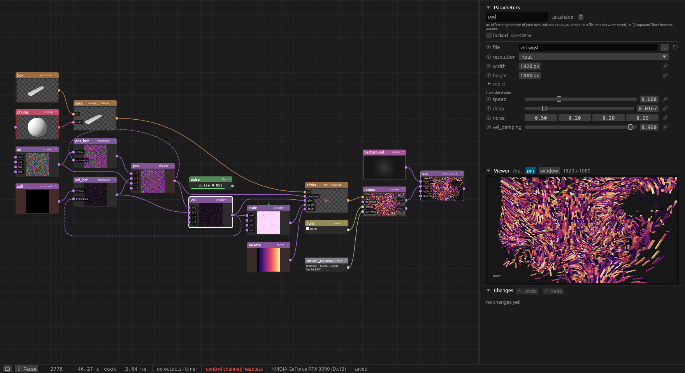
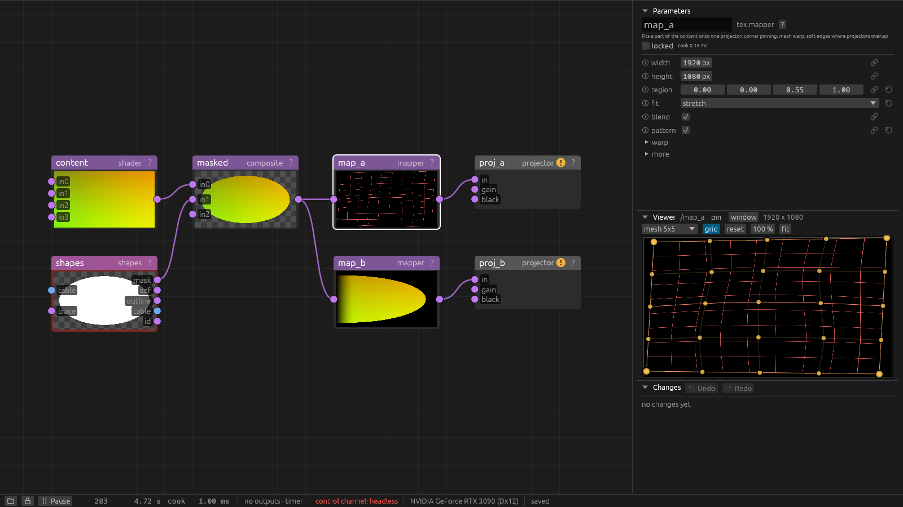

penumbra documentation
A short user guide. The UI stays sparse on purpose; what it does not explain on screen is explained here. All of it, with every node and command, is also one page to search and read offline: penumbra.html, which the ? on every node opens.
- Getting started: running the app, the window, building a first network.
- Concepts: how the network runs (cooking, wires and references, time), data kinds and node families, params and bindings, components, undo and the change log, who is editing, what the editor's colours and badges mean, the project directory.
- Glossary: the words of the first hour, from binding and cook to premultiplied alpha and show mode.
- The Helpers window: outputs, resolution, show-machine checks, persistent state, OSC, audio.
- Audio: reacting to sound: levels, onsets, tempo, beat and bar.
- DMX: driving lights through the Enttec Open DMX USB, Art-Net, sACN or DDP, and receiving Art-Net or sACN from a lighting desk.
- Recording: the show to a movie file with
out.video(H.264 or ProRes). - Spout: pictures to and from other programs on this machine (TouchDesigner, OBS, Resolume) with
out.spoutandtex.spout_in. - NDI: pictures (and sound in) over the network, to and from OBS, vMix, cameras or another machine, with
out.ndiandtex.ndi_in. - Camera: a live camera or capture card with
tex.video_in, calmed withtex.denoise, its motion withtex.optical_flow. - Tracking: blobs with ids that stay, from a camera, with
tex.blob_track. - Mapping without a camera: corners, mesh warp, soft edges and masks by eye, with
tex.mapperandtex.shapes. - Scanning: structured light: which camera pixel each projector pixel lands on, the objects in front of a wall, blend weights, content on objects across projectors.
- Looking around in 3D: the viewer's free view, steering a camera, the 3D mouse.
- Shaders: writing a
tex.shaderin WGSL, porting from Shadertoy, a shader in a feedback loop that follows the music. - Scripts: writing a
script.pythonnode. - Control: the control channel,
penumbra-cli ctl, the MCP server, headless runs, environment variables.
Examples: small projects, each showing one side of penumbra.
Content library: ready-made effects for scanned objects, as components with a preview each (add them from the add dialog's library tab).
Generated from the code, so always complete:
- Node reference: every node type with its inputs, outputs and params.
- Command reference: every command of the control channel.
penumbra.html: all of the above in one page for the browser, with a filter box; the?on a node opens it at that node (see the documentation page). Longer texts for single node kinds live innodes/<kind>.mdand appear in their entries there.
Guides
Getting started
Running
On Windows, download the zip from the latest release, unpack it and double-click penumbra.exe. Or build it from source with a current stable Rust:
cargo run -p penumbra
With no arguments the app opens the project that was open last. The first time (or when that project is gone or does not open) it opens a demo project, made in %LOCALAPPDATA%\penumbra\demo on Windows ($XDG_DATA_HOME/penumbra/demo or ~/.local/share/penumbra/demo elsewhere); the project menu brings it back any time. It grows reaction-diffusion patterns around the title: click /show to see them in the viewer. /sharpen runs the shader sharpen.wgsl in the demo's folder; edit and save it and the node reloads. /palettes index picks one of four colourings, /title text the word the pattern keeps clear of.
A project is a directory with a project.ron. The folder button at the left end of the status bar opens the project menu: New project (pick or make an empty folder), Open project, Save copy as (copy the project into a new or empty folder and go on there), the recently opened projects, the demo, the examples that come with penumbra, and the project's folder in the file manager. The project that was open is written first; the window and the outputs stay. The same from the control channel: project.new, project.open, project.save_as, project.demo, project.examples, project.example, project.recent.
The demo and the examples start fresh on every open, also when the app starts with one of them as the last project: changes, saved node state and node positions from before are gone. Within a run they are saved as usual. The status bar says until reopened while one of them is open; Save copy as makes a project of your own that keeps them. A copy takes every file of the project folder along and, of the state/ folder, the latest snapshot.
A project can also be given at the start (a missing directory is created):
cargo run -p penumbra -- --project D:\shows\foyer
Other arguments:
| argument | |
|---|---|
--project DIR | the project directory (default: the project open last, else the demo) |
--port N | the control channel's port (default PENUMBRA_PORT, else 9880) |
--fresh | start without what feedback loops, caches and similar nodes kept from the last run (see persistent state) |
--headless SCRIPT | run without a window, driven by a script (see Control) |
The script node needs a Python 3.12 or newer installed (see Scripts); everything else runs without it.
The window

- The node editor (left) shows the network: nodes with live thumbnails, wired output to input. The colour of a node's header is its family, the colour of a wire the kind of data it carries (see Concepts). A channel node shows its values (with a bar, when the editor's "channel bars" are on); one whose channels hold many samples (
chan.trail, a spectrum) shows them as a small plot instead, the newest at the right and the first channel's value at the top left.chan.trailand the sound nodes (audio) get a taller body for it, as tall as a picture's. - Parameters (top right): the selected node's name, kind, a one-line summary, the lock, its cook time, and its params. Params that belong together sit in folded sections, the rarely used ones under "more". The
?beside the kind opens the node's documentation in the browser, as the?at the right end of every node's header in the editor does (see the documentation page). - Viewer (middle right): the selected node's output, or the node pinned with
pin;windowshows it in a window of its own. Channels are drawn as curves, geometry and renders can be looked around in, and some nodes are edited right here (a mapper's corners, shapes, a scan's regions). Details in The viewer. - Changes (bottom right): every edit, newest first, with who made it (you, Claude, the project file). Hover an entry to outline the nodes it touched, click it to select them. Undo and Redo sit in its header.
- The status bar: the project menu (the folder), play and pause of the show clock, the frame and the time, how long the last cook pass took (click it for the last seconds as a plot, the CPU and GPU load and, on NVIDIA GPUs, power draw, temperature, clock and what holds the clock back), the outputs (hover for details), the control channel's port, the GPU, and whether
project.ronis written yet.
Each section of the right column folds by its header; the open state is kept with the project. The column keeps its share of the window's width when the window is resized; drag its edge to change the share (also kept with the project).
The window opens where it was last time, with its size, maximised or not (kept in %LOCALAPPDATA%\penumbra\window.json), so a setup that shares the screen with other windows, a terminal beside it, say, stays arranged across restarts. The first time, or when that spot is no longer on any display (one was unplugged), it opens maximised. ui.window reads and moves it.
A first network
- Add a node: press Tab, or double-click on empty canvas. The add dialog has a tab per family; small families share one:
renderingholds the 3D ones,systemthe scripts, outputs and components. Tab cycles the tabs. Typing greys out the types that do not match, Enter takes the first match, a click takes any. Trytex>noise. The everyday types come first in each tab. Live inputs (cameras, NDI, OSC, the keyboard and the like) stand apart under "in", the scan's own nodes under "scan and shapes" at the end oftex. Ready-made effects are in thelibrarytab. - Add a second one fed from the first: with exactly one node selected, a new node is wired to it and placed to its right. Select the noise, add
tex>level. - Wire by hand: drag from an output (right edge of a node) to an input (left edge). Drag a connected input away to pick its wire up; drop it on nothing to disconnect.
- Change params: select the level node and drag
contrast, or type a number into the field beside the slider. One drag is one undo step. A param away from its default gets a reset button. The circled "i" before a param's name explains it. - Make it move: add
chan>lfo, then drag a wire from its output onto the level'sbrightnessrow. The param is now bound: it follows the channel and shows the live value (see bindings). - Show it on a projector: add
system>projector, wire the level into it and pick adisplay(the Helpers window lists them). Withactiveon, a fullscreen window opens on that display. For projection mapping, put atex.mapperbetween the content and the projector: its corners and mesh are dragged in the viewer (see Mapping without a camera).
Everything is written to the project directory a second after each change; there is no save command. Close the app (or open another project) and come back to it, and the network is back.
The documentation page
docs/penumbra.html (in the release zip beside penumbra.exe) holds all of this documentation in one page for the browser, offline: these guides, every node kind with its inputs, outputs and params, and every command, each folded until opened. The filter box at the top narrows the entries to those holding all the words typed (Enter jumps to the first, Escape clears); an entry lists the places in the guides that mention it.
Click the ? in a node's header, or the one beside the kind in the parameters, and the page opens in the default browser at that node's entry. help.open {kind} does the same from the control channel (kind may also be a command or a guide such as scanning) and answers with the page's file and URL; with open: false, and in headless runs, it opens nothing. A link to an entry is the page's address with # and the kind or command: penumbra.html#tex.shapes.
Moving around
| left-drag a node | move it (with the rest of the selection) |
| click a node | select it; Shift or Ctrl toggles it in the selection |
| left-drag on empty canvas | select by box; Shift or Ctrl adds to the selection |
| right- or middle-drag | pan |
| mouse wheel | zoom around the pointer |
| right-click a node | its menu: view (pin), pause thumbnail, lock, replace (another kind under the same name, keeping the params, wires and bindings that fit), delete, cut, copy, group |
| right-click a wire | delete the connection; on a binding line, remove the binding |
| point at a port | its name, data kind and what it holds |
| right-click empty canvas | the editor's options: arrange, channel bars, the viewer as background, all binding lines, thumbnails and their rate, Helpers |
| Tab, double-click on canvas | add a node |
| Delete or Backspace | delete the selection |
| F | frame all nodes |
| L | arrange the nodes (the selection when two or more are selected) |
| R | reset the selected nodes (feedback loops, caches, time machines, trackers start over), or every stateful node of this level when nothing is selected |
| Ctrl+A | select all |
| Ctrl+C, Ctrl+X, Ctrl+V | copy, cut, paste (the nodes travel as text on the system clipboard) |
| Ctrl+G | group the selection into a component |
| I, double-click a component | go into the component |
| U | up one level |
| Ctrl+Z, Ctrl+Shift+Z or Ctrl+Y | undo, redo |
Keys go to the pane under the pointer, so F over the viewer does not frame the editor. Undo and redo work everywhere except while a text field has the focus, and over the region editor's picture, where they step through its own changes (the grouping is a file next to the scan, not part of the project). Moving nodes is an edit too: a drag is one step in the same history.
The viewer
The viewer shows the selected node's output, or the node pinned with pin. window shows it in a window of its own (on a second monitor, say). Its picture area stays 16:9 as the column grows and shrinks; drag its top edge for another shape, which is kept with the project, and double-click the edge to go back to 16:9 (ui.options {viewer_aspect}). When the window is too low, the viewer gets shorter so the parameters keep some room. A node with several outputs gets a button per output. For geometry and renders it can also look around in the scene (Looking around in 3D).
Channels are drawn as curves with a value axis and, along the bottom, seconds before now (the last 240 frames of a channel with one value, all samples of one with many; a spectrum or a picture's row is counted by sample instead). A chan.trail that is still filling spans its full length and grows in from the right. The scale button switches between one shared scale for all channels, a lane per channel with its own scale, and auto, which takes lanes when a channel that moves would be flat on the shared scale (bpm next to levels of 0 to 1). The choice is kept with the project (ui.options {chan_scale}). A chan.audio_analysis shows its meters instead (see Audio); view: meters in the header switches to the plot and back, kept with the project as well (ui.options {audio_view}).
Some nodes are edited right in the viewer: a mapper's corners and mesh, a tex.shapes' shapes, and a tex.image_file showing a scanned scene's regions_camera.png, whose faces are grouped into regions there (Scanning).
When the GPU gives up
penumbra stops creating GPU memory at 90 % of what Windows grants it, so a node asking for too much gets an error (or, for tex.time_machine, fewer frames and a warning) instead of taking the driver down. Should the GPU device still be lost (a driver reset, another program filling the GPU), penumbra saves the project file but no state, shows a message and exits with code 3. The next start opens the project with the show clock stopped and says why in the status bar; press play once the cause is fixed. The record of that lives in %LOCALAPPDATA%\penumbra\gpu-lost.json until the next start reads it. In show mode the app starts again by itself instead, see below.
Show mode
Show mode keeps penumbra from touching a project during a performance. Switch it on with the padlock in the status bar, or with show.lock over the control channel (penumbra-cli ctl show.lock). show.unlock, or Unlock clicked twice, ends it.
While show mode is on:
- Locked: edits, node moves, undo and redo are refused, from the editor and the control channel alike, with a message that names
show.unlock. So are saving, switching projects, scans, palettes, components and OSC learn. - Nothing written:
project.ronand the editor'slayout.ronstay as they are, and an edit ofproject.ronon disk is not loaded. Aftershow.unlockthe next look at the file loads it. Node state (thestatefolder) is still saved. - Live: OSC and DMX values, the control channel's other commands, keys, mouse, audio and cameras keep driving the show.
- The editor: shows a plain screen instead of the network. Without thumbnails and viewer the cook pass gets shorter.
- After a crash: when the GPU device is lost or the editor fails (exit code 3), penumbra starts again at once, without a message, and the clock runs on where it would be. After 3 restarts within 10 minutes it stops trying and ends as usual.
A copied or tagged project folder plus show mode is then the frozen state for a performance. Show mode survives a restart; it is kept in %LOCALAPPDATA%\penumbra\show-mode.json. show.status says whether it is on and how many restarts are left.
Concepts
How the network runs
This section says when a node does its work, in what order, and what decides it. For someone reading the code, ARCHITECTURE.md has the same from the inside. Words used here are also in the glossary.
Cooking. A node cooks when it computes its outputs. penumbra runs one cook pass per show frame, 60 a second. A pass starts from what is wanted: every node without outputs (projectors, recorders, senders such as out.ndi or chan.osc_out), the node in the viewer, and the visible thumbnails while there is time left. From there it pulls: before a wanted node cooks, the nodes feeding it cook, and the nodes feeding those. A node nothing wants does not cook and costs nothing. The editor marks it "not cooked".
When a node cooks again. Only when something it depends on changed:
- one of its params changed, by hand, from the control channel or through a binding;
- a node feeding it made a new result;
- it follows the clock (a noise that moves, a video, a shader that reads
pn_time) and the clock moved; - a slow job of its own finished (a file loaded, a frame decoded).
Otherwise its last result is reused. So a still picture behind a heavy filter costs that filter once, not every frame. The reference says for each node type whether it follows the clock.
When a node fails, it keeps putting out its last good result and shows the error. A typo in a shader during a show leaves the projector on the last working picture.
Wires, bindings and node references
Three ways a node can use another, each with its own line in the editor:
| what it carries | drawn as | across a component's edge | |
|---|---|---|---|
| wire | a whole output (picture, channels, table, 3D) into an input of the same kind | a solid line in the kind's colour | only through its ports |
| binding | one channel's value into one param | a dashed green line into the node's top | anywhere |
| node reference | a node named in a param (tex.select's node) | a dashed line | anywhere |
All three make the source cook first. A bound param recooks its node only when the value it takes changes. Wires may not form a loop, except into a feedback input (below). Bindings are explained below, references under Paths.
Inputs and nodes that cook differently
- Feedback (
previous). Atex.feedback'spreviousinput sees what its source made in the frame before. The wire into it may run backwards and close a loop; it is drawn dashed. This is the only way to build a loop. - Inputs a node skips.
tex.switchwithinactive: skipandtex.sequencecook only the inputs they show. The chains behind the others stand still and cost nothing until they are shown again. A feedback loop, cache or time machine there carries on from where it stopped. - Steering inputs.
tex.sequence'ssequenceinput decides which inputs are needed. So it cooks first, before the inputs, whichever piece is shown. - Every frame (eager).
chan.clockandchan.sequencecook in every pass, wanted or not. So a clock sees itsrunturn off and on while the piece it drives is skipped. The reference marks such nodes "Cooks in every frame". - Outputs made on demand (lazy). Some outputs are made only while something reads them:
chan.audio_analysis'smeters,tex.ndi_in'saudio,tex.fluid'svelocity. Wire one up, show it in the viewer or reference it, and the node makes it from then on.
Time
- The show clock counts frames at 60 a second and starts at 0 when a project opens. Every node that follows the clock reads the same time in a pass. It is paced by a projector's display, or by a timer when no output runs (see Helpers).
- Late frames are skipped. When a pass takes longer than a frame, the clock jumps ahead to where it should be. Animations stay in step with the wall clock and with the music.
- Pause (the status bar, or
cook.play) stops the clock. Everything that follows it stands still. Edits, cameras and incoming OSC still show. - Cues and restarts. penumbra has no cue list of its own. A piece or a clip starts over when a channel turns on: a
chan.clock's orchan.sequence'srun, atex.video_file'srestart. Bind that channel to a key, an OSC message or a show step (see A clock per piece, Shows, Video clips on cue). Feedback loops, caches and other nodes that keep state start over with R, the reset button ornode.reset.
Nodes, families and data kinds
A project is a network of nodes. Each node has a kind, written family.name (tex.noise, chan.lfo), inputs, outputs and params. An output connects only to an input of the same data kind, and the wire takes that kind's colour:
| kind | colour | what flows | families that make it |
|---|---|---|---|
tex | purple | 2D pictures on the GPU, linear light, premultiplied alpha, values above 1 allowed | tex |
chan | green | named channels of numbers; the last sample is the value now | chan, script |
audio | cyan | sound: a gapless stream of sample blocks at a sample rate | audio, tex (ndi_in) |
table | blue | rows of text cells | table, script |
geo | orange | meshes with parts, materials and transforms | geo |
mat | pink | a material | mat |
light | yellow | one or more lights | light |
view | silver | one camera | view |
Some nodes take any number of inputs of one kind: tex.composite, tex.switch, tex.sequence, chan.merge, geo.merge and light.merge. Their inputs are numbered from 0 (in0, in1, ...). The node shows the wired ones and one free input below the last; wire into the free one and the next appears. An input left empty in between stays, because the order counts: the composite's layers, the switch's index. node.connect without input takes the next free one. Up to 64 fit.
The families:
tex: pictures. Generators (noise, constant, text, image, video, a PSD layer), filters (level, blur, transform, ...), compositing, a shader node for anything else,tex.mapperfor projection mapping,tex.renderfor 3D.chan: numbers that change over time. Generators (lfo,noise,constant),math,filter,trail(the last seconds of a channel as samples, to plot or to feed on; it starts empty and fills up), and OSC in and out. Channels drive params through bindings. A channel holds one or many samples, so a set of channels is a small grid of numbers:tex.from_chanturns it into a picture (a row per channel, a pixel per sample) for shaders to look values up in, andchan.from_texaverages a picture down to a few pixels and turns them into channels (at 1 x 1, its mean colour). Channels namedr,g,b(anda), aschan.from_texmakes them, come back fromtex.from_chanas a colour.audio: sound. A device input, a test tone and a mix so far.chan.audio_analysisturns sound into channels (see Audio).table: text tables, typed in or read from a file, for scripts and OSC.table.filereads a CSV, TSV or text file and reloads it when the file changes.chan.from_tableturns a table of numbers into channels, a channel per column (or row), named by its first cell. A param bound to a channel follows the last value in that column (or row).out.tablewrites a table to a CSV or TSV file. Withfileempty it writesexport/<node name>.csvin the project folder. In modechangesit writes whenever the table differs from what the file holds; in modemanualit writes only ontable_out.write.overwriteon replaces the file in place, for a program that keeps reading it; off, every write gets a new name with_2,_3, ...geo,mat,light,view: a 3D scene. Geometry from files or primitives, transformed and merged; materials put on it withgeo.assign_material; lights and aview.camerawired into atex.render, which makes a picture of it all (a render needs its camera; the camera is perspective, orthographic or calibrated).light.projectorthrows a picture through a camera onto the geometry: a virtual projector, for trying a mapping on a model of the room. Coordinates are metres, z up.out.meshwrites geometry to an OBJ, STL or glb file, every model where it stands in the scene. Each part stays a part: an OBJ object or a glTF node. Only glb keeps material colours; textures are not written. File,overwriteand the modeschangesandmanualwork as forout.table; the command ismesh_out.write. Copies fromgeo.tex_instanceare read back from the GPU and written one by one (instancesonexpand). For copies that move every frame, use modemanual: in modechangessuch an input is written every frame. Withinstancesonskipeach model is written once, without its copies. A file holds at most 4 Mi triangles and 256 MiB; over that the node shows an error and writes nothing.script: Python that turns channels and tables into channels and a table (see Scripts).out: sinks.out.projectorshows a picture fullscreen on a display.comp: components, nodes that hold nodes (see Components).
Every type, with every param, is in the node reference. When each node cooks is under How the network runs.
Params
Params are numbers, vectors, colours, choices, text, files or palettes. Number params have a slider and a field: the slider covers the usual range, a typed value may go beyond it (the reference says "soft" for such a range); a hard range clamps. Colours are linear and may go above 1. File params are relative to the project directory and reload when the file changes.
- Folded sections group params that belong together (a render's
occlusion, a mapper'swarp); "more", always the last, holds the rarely used ones. Only the main rows are shown at first; a section stays open for every node of that type once opened. - The circled "i" before each param's name opens its help beside the panel: what the param does, what each value of a choice does, its type, default, range and unit, and whether a channel can drive it. A click elsewhere or Escape closes it; hovering the name shows the text alone.
node.kinds {kind, param}returns the same help over the control channel. - A reset button appears beside a param that is not at its default.
- One drag is one undo step, however long it takes.
- Params from a file: a shader's header and a script's
PARAMSadd their own rows, under "from the shader" or "from the script". - A stray value (a param the node type no longer has, from an older project file) is listed with a remove button and a warning on the node; it does not stop the project from loading.
Palettes
A palette param picks a set of colours by name, so a look is tried by switching the name instead of editing colours one by one. tex.ramp and tex.lookup have one (a gradient, or a picture recoloured through a colormap, in one node), so do the library's breathe and pulse, and a shader declares its own (// @param look palette = blood, see Shaders).
Palettes are a handful of colours meant one by one (a colour per face):
sea,blood,candy,pumpkin,ember,neon,pastel,forest,primaries,mono. Colormaps are ramps meant to be blended along:grey,fire,ice,viridis,magma,inferno,plasma,cividisandtwilight(the last five from matplotlib). Either works anywhere; a node decides whether it takes the colours one by one or blends.Your own: type hex colours straight into the param, as colorhunt or coolors give them:
31aaa9 f8e0a4 a82020 6c1a1a,#31aaa9, #f8e0a4,31aaa9-f8e0a4-a82020, a pasted colorhunt or coolors URL, or the digits run together. 6 digits per colour (sRGB, as every colour picker shows them), 8 with alpha, up to 32 colours. To give one a name, put it inpalettes.txtin the project directory, one per line:# my palettes dusk: 2c3e50 fd746c ff8c52 moss = #1b4332 #52b788or use
palette.set {name, colours}(palette.remove {name}takes one away). Every node naming a palette picks up an edit of the file at once. A line that does not parse, a name given twice or a built-in name is skipped with a warning on the nodes that read the file.In the param panel the row shows the colours, the name or hex list as text, and a menu (
...) with every palette and its colours.From a channel: bind the param like a number. The channel's value picks a palette by its place in the list
palette.listreturns (the built-in set in the order above, then the project's own), rounded and wrapping around: a counter or a MIDI knob steps through them, achan.sequencestep can switch the look of a piece.Empty means no palette; what that does is the node's:
tex.rampuses itskeys,tex.lookupitslutinput,breatheandpulsetheir colour params.
Bindings
A param can follow a channel instead of its stored value: drag a wire from a chan output onto the param's row, or use the link button at the end of the row, which also offers a specific channel by name. A vector or colour binds per component: drop the wire on one field.
A bound row shows its name in the channel colour, the live value, and the source. The stored value stays and comes back when the binding is removed; it is also used, with a warning, while the channel is missing. Integers round, booleans are on from 0.5, hard ranges clamp. The editor draws every binding as a dashed green line into the top of the node. With "All binding lines" unticked in the editor's right-click menu, a binding shows as a short stub on the bound node, and as a line only while the source or the bound node is selected or under the pointer.
Keys
chan.keyboard_in turns keys into channels: with keys at 1 2 3 4 (the default) it has key_1 to key_4, each 1 while its key is held, and last, the index in keys (from 0) of the key pressed last, which stays until another listed key is pressed and starts at 0 when the project opens. Bind a switch's index (or a chan.constant that several switches follow) to last, and the number keys switch the show's pieces. Keys count only while a penumbra window has the focus: the editor, the viewer's own window or a projector output (click it once). A key typed into a text field and a key held with Ctrl, Alt or the Windows key do not count. The number pad's digits are the digits; letters are named as the keyboard layout labels them. learn from OSC in a param's link menu also takes a key a chan.keyboard_in lists, and binds its gate. From the control channel: keyboard.press {key} (or {key, down} to hold and let go) and keyboard.status.
Mouse and 3D mouse
chan.mouse_in turns the mouse pointer into channels, wherever it is on the desktop, inside penumbra or not: x and y are shares of a display, 0 to 1 from its bottom left (y is 1 at the top); inside is 1 while the pointer is on that display; left, right and middle are 1 while held. Its display names the display as an output's display does (or \\.\DISPLAY2); empty, it is the display the pointer is on. On a named display x and y keep following the pointer past 0 and 1 when it leaves. Name a projector's display, and the pointer over the projection is a position in the projector's picture. wheel sums the notches turned anywhere (up positive); headless runs have no wheel. The node reads the pointer once a frame, so a click shorter than a frame can be missed. From the control channel: mouse.status (pointer, displays, wheel) and mouse.fake {x, y, buttons?} (desktop pixels; {real: true} ends it; {wheel} turns the wheel).
chan.spacemouse_in turns the 3D mouse (see navigation) into channels, each -1 to 1: right, up, forward (slide, lift, push the cap away), pitch, yaw, roll (tilt it nose up, twist it clockwise, tilt it to the right), button_left and button_right (1 while held), connected. A viewer flying a free view and the node both follow the cap at the same time. learn from OSC also takes the 3D mouse while such a node exists: press a button, or push the cap clearly along one axis.
A clock per piece
chan.clock counts the seconds since it was switched on. Its run is on from 0.5 up; each time it turns on, the clock starts over from 0, and while it is off the clock stands at 0. With equals set, run is on while it equals that number instead: bind run to the channel that says which piece plays (last of a chan.keyboard_in, or the chan.constant bound to it) and set equals to the piece's number, and the piece has a clock that starts with it, with one binding. mode says what happens after length seconds: once holds at the end, loop starts over, free runs on. Its channels are seconds, fraction (of length) and done (1 once a full length has passed). A seek back starts every clock over. To compare channels elsewhere, chan.math has op equal: 1 where a equals b, else 0.
run is the only way a clock starts over: a clock left at run 1 runs on while its piece is not shown. A clock cooks in every frame, shown or not, so it sees its run turn off and on again even while a tex.switch or tex.sequence skips the piece it drives, and it behaves the same with the editor's thumbnails on or off and headless.
Shows
A show plays pieces one after another, with cuts, cross-fades, dips to black and flashes between them. Two kinds of node make it:
chan.sequenceholds the steps and the show's clock. Itsstepsare one line per step: piece, seconds, the transition into the next step and its length.# piece seconds transition length intro 21 faces 10 fade 2 pumpkin 10 black 1.5 tiles 12 flash 0.6 water 15cut(or nothing) cuts at the end of the step;fadecross-fades into the next piece over the step's last seconds;blackfades this piece out to black over its last seconds and the next one cuts in;flashcuts to white at the end, and the white fades into the next piece over its first seconds. A step's seconds are its whole slot, its transitions included. Before the first step there arelead_inseconds of black, after the last the show ends in black (the last step's transition leads into it). Instead ofsteps,filemay name a file with such lines or with JSON:{"lead_in": 1, "steps": [{"piece": "faces", "duration": 10, "transition": "fade", "length": 2}, ...]}; saving the file applies it.nameslists the pieces in a fixed order (intro faces pumpkin tiles water show): piece k is inputin<k>of atex.sequenceand gets a channelrun_<name>. Steps naming a piece not in the list are left out with a warning. Left empty, the pieces are numbered as the steps first name them.run(withequals, as for a clock) starts the show from its beginning each time it turns on; while it is off the show is black.modeloopplays it round after round. Its channels:seconds,step(counted from 0; -1 in the lead-in),piece,from,toandmix(the entries shown, a piece number, -1 for black or -2 for white, and the share ofto),done,length, andrun_<name>per piece, 1 while that piece is shown, also during its fades. Bind a piece's clock'srunto itsrun_<name>and the piece starts from its beginning each time the show brings it in (a piece listed twice in a row runs on).tex.sequencemakes the picture: wire thechan.sequenceinto itssequenceinput and each piece's picture intoin<k>. It passes the piece shown on as it is and blends two during a transition; only the one or two inputs shown cook, the others cost nothing. Black and white are made by the node (at the size of the picture they blend with, elsewidthxheight), unlessblackorwhiteare wired: a projector's output can take its own black and a white limited to what it reaches. An input not wired shows black. For pictures per projector, use onetex.sequenceper output, all wired to the samechan.sequence.
Video clips on cue
A tex.video_file starts its clip over from start in three ways:
restartturning on. Bind it to a channel: each time the channel crosses 0.5 upwards, the clip starts over. A channel that stays at 1 does not restart again.restart_on_showon: the clip starts over each time it comes back into use after at least half a second out of it. Atex.switchwithinactive: skipor atex.sequencepicking the clip counts. A switch withinactive: cookkeeps every input in use, so its clips never come back. The editor's thumbnails do not count as use.- The
restartbutton in the param panel, or the commandvideo_file.restart {path}.
The clip shows its first frame at once when the player holds it decoded: always for a clip with loop off, and for a looping clip whose start is 0. Otherwise the first frame takes a seek, a few frames on H.264, none on HAP. With play off, the clip jumps to start and holds there.
A cue from QLab or a lighting desk. Add a chan.osc_in and send it /scene <number> from the desk. When the desk is another machine, turn on the node's lan. Bind a tex.switch's index to the scene channel, set inactive: skip and turn on restart_on_show on each clip. A GO then cuts to the clip's scene and the clip plays from its start. For a fade, turn on the switch's blend and bind index through a chan.filter; the incoming clip starts with the fade. To start the clip on screen over, send /restart 1 and then /restart 0, and bind the clip's restart to the restart channel. In a chan.sequence show, bind restart to the piece's run_<name>, so a clip shown in two steps in a row starts over in each.
A saved component could hold the same nodes, but the show itself (the steps, the row of entries, the gates) is the native node; a component around a chan.sequence and its tex.sequence nodes is only worth it to reuse a whole show setup.
Paths
Every node has a path: /noise1 at the top level, /scene/noise1 inside the component scene. A param is addressed as /scene/noise1.speed, one component of a vector as /t.translate.0.
Where a path refers to another node (a wire's source in the project file, a binding, the node param of tex.select), it is read from the level of the node it belongs to: /a/b is absolute, x is the node x beside it, sub/x is below that, ../x one level up. So a component's inside refers to its own nodes by name and keeps working when the component is moved or saved to a file.
Components
A comp.base holds nodes. Its input and output sockets are port nodes inside it, one pair per data kind: tex.in and tex.out, chan.in and chan.out, and so on for table, geo, mat, light and view (Component ports). What is wired to the component outside comes out of its tex.in inside. The port nodes read or write no files or devices: that is the job of the out nodes and the sources. Wires cross a component's edge only through ports; bindings and node references may reach anywhere.
- Group: select nodes and press Ctrl+G. Ports are added where wires cross.
- Enter and leave: I or a double-click goes in, U or the breadcrumb at the top left goes up. Wires from outside the level shown end in a stub labelled with where they go.
- Dissolve: the node menu moves the nodes back up.
- Expose params: the component's
exposeparam lists inner params, one per line,speed = noise1.speedor justnoise1.speed. They show on the component and act on the inner param. - Rename: renaming a node (the name field at the top of the param panel, or
node.rename) also rewrites theexposelines and node references (tex.select'snode) that name it or a node inside it. One undo takes all of it back. Wires and bindings follow a rename by themselves. Params that name a node in plain text, such astex.scan'sprojector, keep the old name: fix them by hand. - Library: "Save to the library" in the node menu writes a
<name>.comp.ronfile. The add dialog'slibrarytab lists the project'scomponents/folder, the library shared by all projects (%LOCALAPPDATA%\penumbra\components, orPENUMBRA_LIBRARY) and the content library that ships with penumbra (markedpenumbra; thelibraryfolder beside the app, catalogued with a preview of each in its README): effects for scanned objects such as water in a crate, a lamp going round a pumpkin, contour lines or a carved face. All of them stand in one list by name; the place each comes from is at the right of its entry. Adding one adds a copy. The cross beside a user's library entry moves its file into aremoved/folder beside it; penumbra's own cannot be removed.
Files a component refers to (a shader, an image) are relative to the project. A component in a folder of its own, <name>/<name>.comp.ron (as all of penumbra's are), brings the other files of that folder along: adding it copies them into the project's library/<name>/, which is where its nodes name them (library/water/water.wgsl). A file the project has already is kept, so a changed copy survives adding the component again; comp.load says what it copied and kept. Its preview picture and notes stay behind. Saving a component does not collect its files yet.
Undo and the change log
Every edit, by hand, by Claude over the control channel, or by editing project.ron in a text editor, is an entry in one linear history, shown under Changes. Ctrl+Z undoes the latest, whoever made it; to take back one of Claude's changes while keeping later tweaks of your own, ask Claude to revert it. Moving nodes is an edit like any other: a drag (or one arrange) is one entry, and history.undo takes it back as well.
Values that arrive by OSC are live control, not edits: they stay out of the history, and undo or redo of other edits does not roll them back. An edit by hand to the same param takes it back into the history.
Who is editing
You and Claude take turns. While Claude edits, the whole UI turns dark blue, the title says "Claude is editing" with what it is doing, and editing widgets are disabled; looking, selecting and pinning the viewer still work (moving nodes is an edit, so it waits too). Claude gets the turn only after 3 seconds without an edit of yours. "Take over" in the blue bar ends Claude's turn at once, and the turn lapses by itself after 2 minutes without a command. Single commands without a claim turn the UI blue too, for 5 seconds after the last one; there is no bar then, and an edit of yours ends that turn right away.
What the editor shows
| header colour | the family (components: turquoise with a double border) |
| red tint over the body | cook time: from about 2 % of a frame to full red at half a frame |
| white outline | selected |
| blue outline, fading | changed by Claude or the project file in the last seconds; also the nodes of the change under the pointer |
| badge | an error or a warning; the message is in the param panel |
| padlock | locked |
| "not cooked" | nothing needed the node since it last changed, so there is no current picture |
| dashed line | a binding (green), a node reference, or a wire into a feedback loop's previous |
Errors keep the last good result. A node that fails (a shader that does not compile, a file that does not load) shows the error and keeps putting out what it made last, so a typo during a show does not black out a projector.
Thumbnails follow the editor's options (right-click on empty canvas): always live, only when free (nothing is cooked just for a thumbnail), or never. A live thumbnail cooks every frame by default; the same menu lowers that to every 2nd, 3rd or 6th frame for large networks. Both are project settings (thumbnails and thumbnail_every in project.ron), so a change is undoable and travels with the project; cook.thumbnails over the control channel sets the same. A picture is only shown while it is up to date; an outdated one would be misleading. "Pause thumbnail" in a node's menu does the same for one node.
Locking a node (node menu, or the lock in the param panel) holds its current outputs: it no longer cooks, whatever happens upstream, and its inputs may even be removed. Locked outputs are kept across restarts. Use it for calibration results and anything expensive to make again.
The project directory
project.ron | the network: nodes, params, wires, bindings, where each node sits in the editor, project settings. Written a second after each change |
layout.ron | view state: pan and zoom, open sections, the right column's width, the viewer's aspect, the editor's other options |
state/ | what nodes hold across restarts (feedback loops, caches, locked outputs); ignored by git through its own .gitignore |
components/ | the project's own component files |
library/ | the files of components added from a library (library/<name>/) |
palettes.txt | the project's own palettes, one per line |
project.ron.bak | the file as it was before project.save wrote over a file that did not load; worth a line in a project's .gitignore |
| anything else | shaders, scripts, images, videos, meshes, referenced by relative path |
project.ron is plain text, meant to be read and edited. The app notices a change to it and merges only what differs, as one undoable entry, keeping your unsaved work. A project keeps working under git: one node per line, sorted. A node's pos is where it sits in the editor; without one the editor places it and the next save writes where. Projects from builds that kept positions and the thumbnail mode in layout.ron (format version 1) take them from there once as they open.
A node kind that was renamed in a later build still loads. A file naming chan.speed opens with a chan.integrator in its place, and the next save writes the new name. project.open and project.info (renamed) list the nodes this happened to. node.create and node.replace take the old names too, with a note in the reply.
A node whose line does not load (a kind this build does not know, an input its kind does not have, a param value its kind refuses) does not stop the rest: the project opens, and the node stays as a placeholder (node.broken) that shows the reason as its error, in the bar at the top of the window and in project.info (broken). The placeholder does nothing; wires from it carry nothing. Saving writes its line back as it was, so nothing is lost by opening and saving. It can be renamed or deleted; to change it, fix its line in project.ron, and the fixed node takes its place.
A file that does not parse at all, or has a format version this build does not read, is reported and left alone (autosave pauses) until it is fixed. project.save writes over it anyway; it first copies the file to project.ron.bak (also when nodes are kept as placeholders; one copy, the next such save replaces it).
Glossary
The words a newcomer meets in the first hour, in alphabetical order. Each entry says first what the word means for you, then where to read on.
Binding. A param that follows a channel instead of its typed value: an LFO turning a brightness, a MIDI knob moving a position. Drag a wire from a chan output onto the param's row, or use the link button at the row's end. The typed value comes back when the binding is removed. See Bindings.
Blend. Where two projectors light the same spot, each gives part of the light, so the spot is not twice as bright and small misalignments do not double. With a camera, scan.blend measures the weights (Scanning). Without one, two tex.mapper nodes fade into each other where their regions overlap (Mapping without a camera). A composite's "blend modes" (add, multiply, ...) are a different thing: how two pictures are laid on top of each other.
Channel. A named number that changes over time, such as level from the audio analysis or x from the mouse. Channels flow along green wires, between chan nodes, and drive params through bindings. A channel can also hold many samples at once (a spectrum, a trail).
Component. A node that holds other nodes, to keep a network tidy or to reuse a piece of it. Select nodes and press Ctrl+G to make one; I goes in, U comes out. Saved to a file, it goes into the add dialog's library tab. See Components.
Content library. Ready-made effects for scanned objects, shipped with penumbra as components: water in a crate, a lamp going round a pumpkin, contour lines. They are in the add dialog's library tab, marked penumbra. See its catalogue.
Control channel. The way a script, a terminal or Claude drives the running app: JSON requests over a local network connection, port 9880. Everything the editor does is a command there too. penumbra-cli ctl sends one from the command line. See Control.
Cook. A node cooks when it computes its outputs. penumbra cooks only what an output, the viewer or a thumbnail needs, and only when something it depends on changed. A node that nothing needs shows "not cooked" and costs nothing. See How the network runs.
Cue. A signal that starts something at a moment of the show: a key, an OSC message from QLab or a lighting desk, a step of a chan.sequence. In penumbra a cue is a channel that turns on. A clock, a show or a clip bound to it starts over. See Video clips on cue.
Expose. Showing an inner param of a component on the component itself, so it can be set without going in. List it in the component's expose param, one per line: speed = noise1.speed. See Components.
Face. A flat part of a scanned scene: a crate's lid, a box's side, a wall. scan.scene finds the faces and numbers them, and content can be put on each one. Face numbers change with every scan; regions keep their names. See Scanning.
Family. The first part of a node's kind: tex for pictures, chan for channels, geo, mat, light and view for 3D, table for text, script for Python, out for outputs, comp for components. Each node's header has its family's colour, and so does the family's block in the add dialog.
Feedback. A loop that hands each frame's picture back to the start of a chain, so the next frame builds on it: trails, echoes, patterns that grow. A tex.feedback closes the loop through its previous input. See tex.feedback and the feedback example.
Helpers window. The window for setting up a show: displays and projectors, test patterns, blend and colour match, resolution, saved state, OSC and audio. Right-click on empty canvas and choose Helpers. See The Helpers window.
Linear light. Picture values in penumbra are amounts of light: 0.5 is half the light of 1, and a fade to 0.5 takes away half the light. The eye sees about 0.2 as a mid grey, so numbers from a paint program or a Shadertoy shader look pale until they are converted (Shaders). Hex colours in palettes are converted for you. Values above 1 are allowed and stay brighter than white until the output.
Lock. A locked node holds its outputs and stops cooking, whatever happens upstream; its inputs may even be removed. Use it for calibration results and anything slow to make again. Locked outputs survive a restart. See What the editor shows.
Mapper. tex.mapper puts the content onto one projector: four corners to drag, a mesh to bend, a soft edge where projectors overlap. Its output is that projector's picture. See Mapping without a camera.
MCP. The Model Context Protocol, how Claude Code and other AI clients talk to tools. penumbra-cli mcp lets them drive penumbra and see its pictures. See Control.
Node reference. A param that names another node, such as tex.select's node: the node uses that node's output without a wire. It reaches across components, and it is drawn as a dashed line. See Paths.
Object. In a scan, whatever is not flat: a pumpkin, a vase, a person. scan.scene and scan.objects find objects as masks, and content drawn in the camera's picture lands on them. See Scanning.
Param. A setting of a node, shown as a row in the param panel: a number, a colour, a choice, a file. The circled "i" before its name explains it. See Params.
Piece. One part of a show, such as the intro or a scene: a chain of nodes that makes one picture. A chan.sequence plays pieces one after another, a tex.switch picks one by a key or a cue. See Shows.
Port. One of the sockets of a component, as a node inside it: tex.in, tex.out, chan.in and so on for every kind. What is wired to the component outside comes out of its in node inside. See Component ports.
Premultiplied alpha. penumbra stores a picture's colour already multiplied by its opacity: a half transparent white is 0.5, 0.5, 0.5, 0.5. For you this matters in shaders: return vec4f(colour * alpha, alpha). Colour params are the other way (straight alpha), as a colour picker shows them. Fully transparent pixels are black.
Projector. An out.projector node: it shows its picture fullscreen on a display. Its display names which one. Each projector has colour correction and test patterns of its own. See Helpers.
Region. Faces of a scan grouped into one part of the scene, the way a person sees it: one crate front instead of its panels and rib strips. scan.regions makes them, and you can merge and name them by clicking in the viewer. Region names survive a rescan. See Regions.
RON. The text format of project.ron and component files (Rusty Object Notation). One node per line, sorted, so a project can be read, edited by hand and kept in git. The app picks up an edit to the file while it runs. See The project directory.
Scan. A camera films each projector's stripe patterns, and penumbra learns which camera pixel each projector pixel lands on. From that it finds faces and objects, blends projectors and puts content on things. One scan takes about 20 seconds per projector in a dark room. See Scanning.
Scene. Two meanings. In scanning, the folder scan.scene writes: the faces and objects of one scan, which scan.regions, scan.face_template and the content read. In 3D, the geometry, materials, lights and camera that a tex.render draws.
Show clock. The time every animation reads: frames at 60 a second, starting at 0 when a project opens. The status bar pauses and runs it. See Time.
Show mode. A lock for a performance: no edits, no saving, no project switches, while OSC, DMX, keys and cameras keep driving the show. When the GPU or the editor fails, the app starts again by itself. The padlock in the status bar turns it on. See Show mode.
State. What a node builds up over time: a feedback loop's last frame, a cache's frames, a learned background. It is lost on restart unless keep node state across restarts is on in the Helpers window. R starts the selected nodes over. See State.
Surface. The picture that the tex.mapper nodes fed by one node share between them. Each mapper shows a region of it, and mappers of one surface blend where their regions overlap. tex.shapes draws its masks in the surface's coordinates.
Thumbnail. The small live picture in a node's body. Thumbnails cook with the time left in a frame, after the outputs. The editor's right-click menu sets them to always live, only when free or never, for a large network. See What the editor shows.
Viewer. The large picture at the right: the selected node's output, or the node pinned with pin. Some nodes are edited right there: a mapper's corners, a tex.shapes' shapes, a scan's regions. See The viewer.
Wire. A connection from one node's output to another's input of the same kind. It carries the whole output, and its colour is the kind's. Wires may not form a loop, except into a feedback input. See Nodes, families and data kinds.
The Helpers window
Right-click on empty canvas and choose Helpers. The window collects what matters when setting up a show rather than while building one. Everything in it is also a command (named in the tooltips), so Claude can do the same.
Outputs
Which displays are connected (size, refresh rate), which one shows the editor, and the output window open on each: frames per second, missed frames, the longest frame. Below that, every active out.projector with the display it is on, and its colour in the test pattern, and a row of buttons that switch the test pattern of every projector (see Test patterns).
The show clock follows the vsync of one output window (marked with a dot), or a timer when no window runs at the show rate. The status bar repeats this in short ("no outputs · timer").
The timer ticks as evenly as a projector's vsync, so timing while developing without a projector is what it will be at the show. It costs a few percent of one CPU core.
The display ids listed here are what an out.projector's display takes. An id names the display itself, not the order in which the system lists displays, so plugging in another one changes nothing:
AW3225QF [DELA246 #BY4BYZ3]: monitor name, model (manufacturer and product, as Device Manager shows it) and serial number. Such a display is found on whatever connector it is plugged into.EPSON PJ [SECA519] @ target 168194: a display without a serial number (Epson projectors, for one). Two of the same model cannot be told apart by anything they report, so the connector on the graphics card decides; plug each projector back into the same socket (and through the same adapter, if any).
The monitor name alone (EPSON PJ), or with the model (EPSON PJ [SECA519]), is enough when it is unique. Hovering an id shows the model, serial number, connector and the name Windows gives the display (\.\DISPLAY2).
When a projector's display is not certainly there, the projector shows nothing rather than something on the wrong wall: its node shows the error, and the log names the stored id and what is connected. A display without a serial number that turns up on another connector is not followed (it may be the other unit of the same model); the error names it, so you can choose it after checking. A display that drops out for a moment keeps its window for a second.
Projects from before this scheme store ids like EPSON PJ @ port 4. Port numbers shifted when displays were added, so they no longer decide: such an id still works when only one display has that monitor name (with a warning), and otherwise shows nothing until the display is chosen again. The error says which display the old number points at today; check it with test.
While at least one output window is open, penumbra tells the operating system that the displays are in use, so Windows does not turn them (and the projectors) off after its idle timeout. The Outputs section shows this as one line; output.list reports it as keeps_display_awake. The request ends when the last output window closes or penumbra exits.
Test patterns
The test param of a projector shows a test pattern in the projector's own pixels instead of its input, uncorrected and without soft edges. test_pattern picks which:
- align: square cells, a centre cross and a circle, the image's edge. For keystone, overscan, whether squares are square, and lining projectors up.
- focus: patches at the four corners and the centre (where defocus shows first), each with a one-pixel checker, a two-pixel checker, one-pixel rows and one-pixel columns, over a one-pixel grid. Turn the focus ring until all four quarters of the patches stay crisp; when the corners and the centre cannot all be sharp, the lens or the throw is the limit, not the focus.
- motion: moves on by whole pixels with every frame the output window presents (not by the clock), for stutter that comes from the line (HDMI over Ethernet, extenders, the projector's processing). In the top lane a bar moves a 240th of the width per frame, in the lane below one a single pixel per frame: both should glide evenly; uneven steps are judder, a horizontal break in a bar is tearing. Below them a strip of 30 cells, the next one lit each frame (every fifth outlined brighter): filmed with a phone in slow motion, a dropped frame shows as a skipped cell, a repeated one as a cell lit twice as long. The line
FRAME 001234 LATE 0counts the frames presented since the pattern came on and how many of them penumbra presented late (more than one and a half refresh periods after the one before, asmissedinoutput.list). Stutter whileLATEstays 0 happens after the graphics card. - fields: full white, red, green, blue and black, three seconds each, uncorrected, to find dead or stuck pixels. When several projectors show it they take turns (the others black meanwhile), so a dead pixel in an overlap is not hidden by another projector's light.
The row Test pattern on every projector: Off, Align, Focus, Motion, Fields under the projector list switches every out.projector at once, as one undo step (projector.test {on, pattern?, projectors?} on the control channel). The lit button is what all of them show.
The colour depends on how many projectors show a test pattern (those with test on, not all in the project): one alone draws in white, the brightest and easiest to read. Two draw in orange and azure: red comes only from the first, blue only from the second, so lines of the two that meet add up to white, and lines that miss show both colours side by side. Three draw in red, green and blue, so each keeps a channel of its own (lines that meet show the mix, all three white); more go on with yellow, cyan and magenta. A blurred projector shows as a smeared colour while the others stay crisp. The square beside each projector in the list shows its colour. The focus patches and the motion pattern's counts sit lower for the second projector and lower again for the third, so projectors stacked on the same area show theirs side by side. The full fields are always in their own colours.
Blend and match
Under the outputs, this section runs the three jobs that make several projectors look like one: blend weights from the scans, the colour match and the flat field. Each has a button and its few options; the rest keeps the commands' defaults, and the files go where the commands put them.
- Scans lists every folder in the project that holds a scan's maps (
cam_to_proj.exrandproj_to_cam.exr, up to four folders deep), with the projector it belongs to, whether it was blended and when it was scanned. A scan belongs to the projector itstex.scannames, or to the projector it is named after (scan/proj_ato/proj_a). look again after scanning elsewhere. - Blend blends the checked scans (
scan.blend, see scanning). ramp is the width of the soft edge. into the scan folders writes the weights into each scan's folder, where itstex.scanreads them; on by default when atex.scanwrites one of the scans. Off, numbered files (weight_0.png, in the order listed) go into the folder named beside it (objects). - Camera and Projectors choose what the two measurements use: the
tex.video_in(the one thetex.scannodes name, at first) and the active projectors (all, at first). - Colour match: Match measures with the camera (see below). keep the measurements in also writes one file per projector into the folder, with the note. Match from the files matches from that folder without the camera. apply off only measures and reports.
- Flat field: each projector with the scan to take (the one found for it, at first), even (brightness and colour on a bare wall, colour only on a relief) and Measure (see below). It connects the maps when apply is on.
While a job runs, a bar shows its step and how far it got, with Cancel: a measurement stops before its next picture, the blend between its steps, and nothing is applied. One job runs at a time; the others' buttons wait. When it ends, the result stays under its button until the next run of the same job: its message, its warnings, and what matters of the reply. For the match a table: per projector the share of its white it keeps, and for white, red, green, blue and the greys how far the camera reads it from the reference, in 8-bit camera codes (the largest of the three channels). Above 4 codes on white or a grey is marked; saturated colours match only roughly, so their numbers run larger.
The match and the flat field edit as you, as one undo step each. A job started by Claude over the control channel shows here too, with its progress.
On the control channel the same commands run in the background with "wait": false: they answer at once, job.status reports the step, the progress and the last reply of each, job.cancel stops the job. scan.folders lists the scans. Without wait they answer when done, as before.
Matching projectors
Projectors of different models, or of different age, differ in brightness, white point, tone curve and primaries. projector.match measures them with a camera and writes each projector's colour correction (the colour params of out.projector), so all of them show the same greys and whites, as bright as the weakest allows.
Set up a tex.video_in that sees the projections, with the camera's automatic exposure, white balance and any dynamic-range processing (Sony: DRO / Auto HDR) off, and an exposure where a projector's white is not clipped. Let the projectors overlap in the camera's view if they overlap on the wall: then all of them are measured on the same patch of wall, which cancels the wall's colour and the camera's vignetting. Then run, for example:
penumbra-cli ctl projector.match '{"camera": "/cam", "projectors": ["/proj_a", "/proj_b"]}'
It takes about 50 seconds for two projectors; nobody should walk through the picture meanwhile. Each projector shows flat colours while the others are black; the network is not changed while it measures. One projector is the reference (the one that keeps the most brightness for all); the others are bent to respond like it. Through an ordinary camera only comparisons can be trusted, not absolute values, so the match works in rounds: every other projector shows white and then a few greys (grey_levels, default 3) through its new correction, and the correction is adjusted until the camera reads them as it reads the reference (refine rounds, default 5). The result lists what was measured, the reference, each round with the remaining difference in camera codes, a final check of red, green, blue and the greys, and per projector how much peak brightness the match costs (peak). It writes matrix and curves as one undo step.
The params of out.projector: matrix mixes the colour (it brings the white points together and holds back the brighter projector); curves maps the result to the signal per channel. strength blends the whole correction: 1 is the full match, 0 the projector as it is; lower keeps more of a brighter projector's brightness and leaves more of the difference, which across a soft edge is often hard to see. gain dims a projector by hand. correct off shows the plain picture for comparison. The test pattern is never corrected.
target: "srgb" makes every projector follow the sRGB curve instead of the reference; use it only with a camera known to be linear, through an ordinary camera it bakes the camera's own curve into every projector and tints the whole picture.
Saturated colours match only approximately.
Matching from stored measurements
A measurement belongs to the projector, so it can be kept and combined with others later without the camera. save (a folder, relative to the project) also measures a grey ramp per projector (a few seconds more) and writes one file per projector, named after its node:
penumbra-cli ctl projector.match '{"camera": "/cam", "save": "measured", "note": "Cinema, Eco"}'
note is kept in the files (picture mode, lamp hours, where the projectors stood). The reply's saved lists the files and, under stored_match_against_this, how far a match from these files would land from what the camera run settled on (the largest signal difference per channel over a few greys): small numbers say the files are good enough to match from.
Later, without a camera, any combination:
penumbra-cli ctl projector.match '{"from": {"/proj_a": "measured/proj_a.json", "/proj_c": "other/proj_c.json"}}'
or "from": "measured" for a folder with a <node name>.json per projector (every active projector, or those in projectors). Only projectors, samples and apply go with from. It writes matrix and curves as a camera run does.
How it matches: per camera channel, the reading of a projector's grey as a function of its signal; two projectors give the same light where the camera reads the same. Each channel follows the projector whose white is the dimmest in that channel, so when no projector is the dimmest in every channel (one warmer, one cooler), the common white lies between their white points and keeps more brightness than matching to either one. When one projector is the dimmest everywhere, it keeps its picture and the others follow it, as in a camera run.
Limits: there is no closed loop, so trust it less than a camera run. Readings only compare when they were taken with the same camera, exposure, white balance and patch of wall; files from different runs are combined with a warning. Files without a grey ramp (from an older format) are matched from each primary alone, which through a camera that does not add up can leave white off by several per cent per channel. A camera run warns when its projectors would gain from a white between the white points.
Even light across a projector, and black in overlaps
Within one projector's picture brightness and colour vary too: brighter in the middle (a hot spot), a colour cast towards an edge. And where projectors overlap, their blacks add up, so black there is brighter than beside it. projector.flatfield measures both with the camera and writes per projector two pictures, which out.projector takes at its gain and black inputs:
penumbra-cli ctl projector.flatfield '{"camera": "/cam", "projectors": ["/proj_a", "/proj_b"], "scans": ["scan/proj_a", "scan/proj_b"]}'
scans are the projectors' scan folders (from scan.capture, see scanning): they tell which camera pixel each projector pixel lands on, so they must fit the current setup. It takes about 40 seconds for two projectors. All projectors show black, then each one white alone, then each primary at a few levels (levels, from low up to full). Per camera pixel the readings are compared with the projector's typical pixel: at which drive does this pixel read what the typical one reads? Only comparisons, so the camera's own curve does not matter. A smooth surface is fitted to that over the projector's picture, since a hot spot and a cast are smooth while the surface's own pattern is not; then everything is scaled so the dimmest part of the picture (all but floor, 2 %) still reaches it at full drive. The gain is the same at the spot where projector.match measures, for every projector and channel, so a match stays valid. It costs brightness: the report's scale is the gain there, the share of light the projectors keep at that spot.
The gain map (flatfield/gain_NAME.png) multiplies the drive per pixel and channel, in linear light, after the colour matrix and before the tone curves: the hot spot and the cast belong to the projector's light, which its drive scales, and the curves only bend the drive into the projector's response. The black lift (flatfield/black_NAME.png) raises the drive where some projector does not reach, by that projector's black, shared among those that do: drive = lift + (1 - lift) drive. The command connects both through tex.image_file nodes (one undo step; apply: false only writes the files). The params flatten (0 to 1, how much of the gain applies) and lift (a factor on the black lift) are in the projector's colour group; correct off turns them off with the rest.
Measure on a flat, evenly coloured surface (the wall before objects go up, or a white sheet in front of them): on a relief or objects the brightness also changes with the surface's slope, and the gain would undo that shading too. The map lives in the projector's own pixels, so it stays valid when objects are placed later, as long as the projector, its zoom and its lens shift stay put. Where the surface is not even, even: "colour" measures only the colour cast (the balance of red, green and blue, which shading does not change) and leaves the brightness alone; the command warns when it sees an uneven surface with the default even: "all".
The camera reads black poorly (dark values sit in the toe of its curve), so the measured lift tends to be too small. Judge it by eye with everything black: if black beside the overlap is still darker, raise lift (with an ordinary camera about 2). contrast estimates a black the camera cannot see at all (white over contrast). measured_NAME.png shows what was measured per camera pixel before the fit, pictures: true keeps the camera's pictures.
Resolution
What each picture shown on a projector needs: enough pixels that one of them lands on about one projector pixel, measured over the mappers' and render nodes' pictures (the 95th percentile). The table lists every node feeding a projector with its size, what it needs, and a verdict:
- ok: between 0.9 and 1.3 picture pixels per projector pixel.
- too coarse (red): fewer; the projection looks soft.
- wasted (blue): more; it costs GPU time without showing.
- follows its input: the node has no size of its own; change the node upstream.
Optimize gives every listed node the suggested size, as one undo step. Nodes with keep_size on (under "more") are left alone: use it for a deliberate resolution, a simulation grid or a pixel look. Params measured in pixels (a blur's size, a text's size) look different after a size change.
overlay colours the mappers' and render nodes' pictures by the same verdict: green where a pixel meets about one projector pixel, red where it is too coarse, blue where it is finer than shown.
In a tex.render the overlay shows on the render's texture input (with surface on texture, or auto with the texture wired). Blue on far or small surfaces is normal there, not a fault: one texture covers near and far surfaces alike, so a texture sized for the nearest surface is necessarily finer than needed on the far ones. Aim for green where it matters, usually the nearest large surface. On faceted meshes (a sphere of few segments) the colour borders on curved surfaces are jagged, because the measure steps from triangle to triangle.
Where a mapper and a render are chained (a render shown through a mapper), only the one nearer the content draws its overlay.
State
What feedback loops, held caches and similar nodes have built up is lost on a restart unless keep node state across restarts is on (the project setting persist_state, off by default). Then it is written to the project's state/ folder every so many seconds (every) and when the app closes, and read back at the next start. Locked nodes keep their outputs either way.
- Save now writes it at once.
- Restore puts back what was saved last.
- Start fresh makes the nodes forget what they hold, here and in the folder (locked nodes keep their outputs). Starting the app with
--freshdoes the same.
To start single nodes over, select them and press R over the node editor (with nothing selected, R resets every stateful node of the level shown), or use the reset button at the top of a stateful node's params. A component resets the stateful nodes inside it. Locked nodes keep their outputs, and the state folder is not touched. From the control channel: node.reset {paths: [...]}. A tex.feedback's reset param stays for holding a loop at its initial input, for example from a binding.
OSC
OSC input comes in through chan.osc_in nodes, output goes out through chan.osc_out; this section shows what they are doing.
- listen off closes every OSC port for this run; the nodes stay.
- this machine on the network is the address to enter on a phone or another computer. A
chan.osc_inis reachable from other machines only with itslanparam on; otherwise only programs on this machine reach it. - Per listener: its port, packets and addresses received, and what was dropped (malformed, too large, over the rate limit). Per sender: packets sent and failures. The last messages, the latest per address, are listed below.
Two ways to control a param from OSC:
- Bind it to the
chan.osc_in's channel for that address, by hand or with learn from OSC in the param's link menu: the next address that arrives with a number is bound. This is the better way for continuous control. - By address: with
paramson, achan.osc_inalso sets the params its addresses name:/scene/speed 0.5sets/scene.speed,/n/translate/0 0.5one component. These values are live: they do not enter the undo history. File params and a script's code are never set this way, so whoever can send OSC cannot make penumbra load a file or run a program.
Audio
What the audio input is doing:
- listen off closes every audio input for this run; the nodes stay.
- Per input an
audio.device_inopened: the device, its sample rate and channels, glitches the system reported, an error if the device is missing or failed, and a level meter per channel (red near clipping). - inputs on this machine lists the input devices with their format; list again after plugging one in. Part of a name goes into an
audio.device_in'sdevice.
Show machine
Windows settings that can ruin a show, each with a Fix and, after fixing, a Restore that puts back what the fix replaced:
- Gaming overlay: Windows may treat a fullscreen output as a game and show the Game Bar over it. The fix turns off game capture and the Game Bar for the current user.
- Notifications: banners for updates, mail and chat pop up on the main display. The fix turns notification banners off for the current user.
Not checked here, because it lives in the graphics driver: with G-Sync (or FreeSync) enabled for windowed mode, the monitor follows the frame rate of the focused window. The editor redraws at about 60 Hz while nothing moves, so a 240 Hz monitor drops to 60 Hz (the mouse pointer turns choppy) as long as penumbra has the focus. Enable G-Sync for fullscreen only, or set Monitor Technology to Fixed Refresh for penumbra.exe in the NVIDIA Control Panel. The output windows are not affected; they present at their display's fixed vsync.
For the performance itself, show mode locks the project against edits and starts the app again after a crash.
Audio
Two nodes make a show react to sound: audio.device_in reads an input device, and chan.audio_analysis turns what it hears into channels that params can be bound to.
Sound is its own family
Sound travels on cyan wires of its own kind, audio. A chan wire carries values: its last sample is the value now. An audio wire carries a stream: each frame's block of samples continues the block before, so every sample counts. The two kinds do not connect. chan.audio_analysis is the bridge from sound to channels that params can be bound to.
audio.device_inreads a microphone or an audio interface.audio.oscillatormakes a test tone.shapeis sine, saw, square, triangle or noise. The paramsfrequencyandamplitudecan be bound; a change glides across one frame, so it does not click.rateis the sample rate, 48000 by default.audio.mixadds up to eight sounds. Each input has its own gain (gain0togain7), andgainsets the whole. All inputs need the same sample rate; two rates are an error, since the mix does not convert between them.chan.readreads an audio node too: the rate, the block's length,peakandrmsper channel, and withsamples: truethe whole block.
The viewer shows sound as the last 50 ms of its waveform and a peak meter per channel in dBFS. The waveform starts at a rising zero crossing, so a steady tone stands still.
A tone generator makes exactly the samples of one frame. At 48 kHz and 60 fps that is 800 samples. At 44.1 kHz it alternates between 735 and 736, so the sound stays in step with the picture for hours. After skipped frames, the next block covers them all, up to half a second. After a longer pause or a jump in time, the sound starts over.
Sound cannot be played yet. Output to a device is the next step.
Setting up
- Add an
audio.device_in(Tab > audio > device_in). Withdeviceempty it reads the system's default input; the emptydevicebox names that device in grey (hover the box for the device a typed name picked).audio.statusnames it too. The...menu besidedevicelists the inputs of this machine; part of a name typed in works too, e.g.Focusrite. The Helpers window shows a level meter per channel. The device is opened in shared mode, so other programs can use it too. - Connect it to a
chan.audio_analysis. - Bind params to the analysis' channels, as to any channel (see bindings): drag a wire from its output onto a param row, or pick the channel in the param's link menu.
audio.device_in outputs the samples that arrived since its last cook, one channel per device channel (ch1, ch2, ...) at the device's sample rate. It keeps listening while the show is paused. If the device goes away (a pulled cable), the node shows an error and the input is opened again every two seconds until it is back.
Projects saved before audio was a family name the node chan.audio_in. They open with the new name. A wire from it, or from an NDI source's sound, into a chan node other than the analysis is left out on opening, and so is a binding to it; the log names each. Put a chan.audio_analysis in between and bind to the analysis.
What the analysis gives
All values are channels of the out output, in this order:
| channel | what |
|---|---|
level | loudness, 0 to 1 |
low, mid, high | loudness of the bands below 150 Hz, between, above 2.5 kHz (params low, high) |
onset | 1 in the frame a sound starts (a hit, a note), else 0 |
kick | 1 in the frame a sound starts in the low band |
beat | 0 at each beat, rising to 1 at the next: drive anything that should move with the beat |
tick | 1 in the frame a beat starts |
bar | 0 at each bar's first beat, rising to 1 at the next bar |
bar_beat | the beat within the bar: 0, 1, 2, 3 |
bpm | the tempo, 0 until one is found |
confidence | 0 to 1: how clearly the music repeats at that tempo |
rms, peak | the raw level, full scale is 1 |
beats_per_bar, low_hz, high_hz | the params beats_per_bar, low and high as they are (bound ones evaluated), for what draws the analysis |
With normalize on (the default), level, the bands and the spectrum are measured against the loudest of the last seconds, so a quiet microphone still spans 0 to 1. Sounds below floor (-60 dB) count as silence and are not raised.
The second output, spectrum, is one channel whose samples are the loudness of bands (32) bands from 30 Hz to 16 kHz, low to high, each 0 to 1 over 60 dB.
The meters in the viewer
Selected, the analysis shows meters in the viewer, made to be read at a glance during a show:
- Level and bands:
level,low,midandhighas bars (in the colours their curves have in the plot), each with a white line that holds its peak for a second, then falls. - Tempo:
bpmin large type,--until a tempo is found. The less sure the analysis is, the dimmer the number; the bar below it isconfidence(red when unsure, amber, green). - Beat light: a disc that flashes on each beat, amber on a bar's first, blue on the others, in a ring that fills with
beatfrom one beat to the next. - Bar: a cell per beat of the bar (the
beats_per_barchannel), the first outlined in amber; the current one (bar_beat) is lit and fills withbeat. The line below fills withbar. - Hits: the last four seconds of kicks, onsets and beats as marks moving left, a row each (a bar's first beat amber); the dot before each row flashes on its hit.
- Spectrum: the
spectrumoutput as bars, low to high, coloured as the low, mid and high bands (by thelow_hzandhigh_hzchannels).
In a narrow column the spectrum and the rows' names are left out. view: meters in the viewer's header switches to the plot of the channels and back (ui.options {audio_view: "meters" | "plot"}); the choice is kept with the project and holds for every analysis. The meters keep their short memory (peaks, recent hits) in the viewer: switching nodes starts it over.
The meters as a picture
The analysis' third output, meters, is the same meters as a texture, to project during a sound check, put on a monitor output or lay over the show: wire it into a tex node, or pick it in the viewer's header (ui.view {path, output: "meters"}). width and height in the analysis' meters section (1920 x 1080; keep_size pins them against res.optimize) set the picture's size; it is laid out as the viewer would draw it at about 640 x 360 and enlarged, so type and lines keep their proportions at any size, and below about 150 pixels of height the spectrum and the rows' names go, as in a narrow viewer.
Around the meters the texture is transparent, ready for a tex.composite over the show. For a solid picture, composite it over a tex.constant of the colour wanted. The viewer shows this output on black, as its meters view.
The output is drawn only while something reads it: a wire into a node that cooks (for an output, the viewer or a thumbnail), the viewer showing it, or node.snapshot. Otherwise the analysis does not draw, and holds no textures for it. While drawn it costs about a quarter of a millisecond at 1080p and keeps its own short memory (peaks, recent hits) on a steady clock, as the viewer does; node.reset (or R) on the analysis clears it, and it starts over when the output is read again after a pause. It is drawn when the analysis cooks, that is when audio arrives, also while the show is paused. The text is set in Inter; a size seen for the first time shows its characters a frame or two later.
Tempo and beat
The tempo is found after about four seconds of music and follows a new track within a few seconds. It is looked for between min_bpm (70) and max_bpm (180); keep the two less than an octave apart, so half or double the tempo is not taken. Through a breakdown without a beat the beat keeps running at the last tempo while confidence drops, so visuals stay in time.
beat is meant to be in time with what is heard. A projector shows a picture a few frames late; offset moves beat and bar ahead by that many milliseconds. Set it by eye: flash something on tick and raise offset until the flash meets the kick.
The first beat of a bar is a guess: it is the beat where the sound changes most (bass lines and chords tend to change there). With the same pattern on every beat the guess may land on another beat; bar_beat and bar are then counted from there.
Tips
- Analyse one channel with
channel(e.g.ch1) when the others carry something else. chan.filtersmooths a channel;chan.mathscales it.chan.trailafter the analysis keeps its last seconds as samples; the viewer and the trail's own body plot them with a lane per channel, sobpmdoes not flatten the levels.- The level meters in Helpers should stay out of the red. A microphone close to the speakers clips; turn down its gain.
DMX
out.dmx (Tab > system > dmx) sends channels to lights: through an Enttec Open DMX USB on this machine, or over the network as Art-Net, sACN or DDP. chan.dmx_in (Tab > chan > dmx_in) goes the other way: it receives Art-Net or sACN, from a lighting desk say, and makes the slots channels to bind params to. See Receiving.
Setting up
Add an
out.dmxand connect channels to it. The first channel goes to slotaddress, the next to the one after, and so on, in the order of the channels. Achan.mergeputs several sources into one list;chan.selectandchan.renamepick and order them.With
valuesonunit, 0 to 1 becomes 0 to 255 (most dimmers and colours); withbytethe values are slots as they are. Anything below or above is clamped.Pick the
protocol:open_dmx: the Enttec Open DMX USB.portempty takes the first FTDI FT232R plugged in (dmx.portslists the serial ports); typeCOM5or/dev/ttyUSB0when there are several. One universe, souniversedoes not count.art_net: to an Art-Net node athost, or as a broadcast whilehostis empty.universeis the port address as Art-Net counts, from 0.sacn: to each universe's multicast group whilehostis empty, else to that host. Universes from 1.ddp: to a pixel controller such as WLED athost(needed). No universes;addressis the byte the first channel goes to, three channels per RGB pixel.
Params the protocol does not use are greyed, and their help says why.
hosttakes an IP address orlocalhost, optionally with:port; names are not looked up.
More than 512 channels spill into the next universes (Art-Net, sACN, up to 64 universes); the Open DMX USB leaves them out and says so on the node.
How it sends
Each target (a port, an address) has a thread of its own that sends the newest frame rate times a second (default 30), also while nothing changes and while the show is paused: the Open DMX USB has no memory of its own, and sACN receivers give up on a source that falls silent. Removing the node stops what it sent; lights then do what they do on lost signal (most hold the last look).
Several out.dmx nodes may send to the same target, each to its own slots: one node per fixture, say. Where two write the same slot, the one added later wins, and both show a warning.
When the Open DMX USB is pulled or another program holds its port, the node shows the error and the port is tried again every second.
The Open DMX USB
It has no processor of its own: penumbra makes the DMX signal itself through the FTDI chip, break and all. A full universe takes 22.6 ms on the wire plus about 5 ms for the break and a margin, so it manages about 35 frames a second; 30 is a good rate. dmx.status shows what it does: the rate measured, the time between frames (min, mean, max) and how long break and write took. On Windows it uses FTDI's virtual COM port driver, which Windows installs by itself.
Receiving
chan.dmx_in listens for Art-Net or sACN (protocol) and makes count channels, ch1 to chN: ch1 is slot address of universe, ch2 the next, and past slot 512 it reads on in the next universe. With values on unit they run 0 to 1, with byte 0 to 255. The node cooks when something arrives, not every frame.
- Art-Net: set the desk to send to this machine's IP address, or as a broadcast. penumbra does not answer Art-Net polls, so a desk that only sends to the nodes it discovered will not list it; give it the address by hand. Universes from 0, as Art-Net counts.
- sACN: the node joins each universe's multicast group, so the desk's default (multicast) works; sending to this machine's address works too. Universes from 1.
- Several senders of one universe merge: the ones with the highest sACN priority count (Art-Net has none), and among them the highest value of each slot wins. A sender counts as gone after 2.5 s of silence (sACN) or 10 s (Art-Net), or when it says goodbye (sACN). With no sender left the last values stay, and the node says so.
- Under more:
interfacetakes the IP address of one network card to listen on (empty listens on all; sACN multicast then joins on the system's default card),portanother port than the protocol's own (Art-Net 6454, sACN 5568).
Only one program can listen on a port. When another one (a lighting visualizer, a second penumbra) holds it, the node shows the error and tries again every second. Windows may ask once whether penumbra may receive from the network; allow it for private networks.
Nodes that listen on the same protocol, interface and port share the socket. Receiving needs no DMX hardware: the Open DMX USB only sends.
Commands
dmx.ports: the serial ports, the FT232R ones (open_dmx: true) first.dmx.status: every output: target, writing nodes, device, open, error, frames, rates and timings; and every input: where it listens, reading nodes, open, error, packets taken and dropped, and per universe its senders.dmx.config {blackout: true}sends zeros on every output until{blackout: false};{enabled: false}stops sending altogether and closes the port. Neither touches the inputs.
Recording
out.video (Tab > system > video) records its input to a movie file: the show as it runs, for documentation, for an edit, or to play back later with tex.video_file.
Recording
- Add an
out.videoand connect the picture to record, usually what feeds the projector. - Press record at the top of its params (or call
video_out.start {path}). The row beside the button shows the file, the length so far, frames written and dropped, and how fast the encoder runs. stop (orvideo_out.stop {path}) finishes the file. - To start and stop from a channel (an OSC button, a timer, a beat), bind
record: turning it on starts a new file, turning it off finishes it.
The record param is the one switch: the button and the two commands turn it on and off, as an ordinary edit (undo undoes it, so undoing a start stops the recording). While a channel drives record, the button is greyed and the commands refuse. A project always opens with record off, whatever was saved, so opening a project never starts a recording by itself. When a recording cannot start or ends with an error, the node shows why and does not try again until record turns off and on.
file empty records to recordings/<node name>.mp4 (or .mov) in the project folder. A file that exists is never overwritten: the next recording goes to <name>_2, <name>_3, ... and the status says which. A name without an extension gets the codec's.
The file is finished when recording stops, and also when the node is deleted, the project closed or the app quit (closing waits up to 5 seconds for that). A file whose recording was cut off by a crash or a power failure is not playable; recordings are meant to be stopped.
Codecs
codec | file | what for | size at 1080p60 |
|---|---|---|---|
h264 (default) | MP4 | watching, sharing; any player opens it | 0.1 to 10 MB/s, depending on the picture |
prores_422 | MOV | editing: every frame a keyframe, 10 bits | up to about 37 MB/s |
prores_422_hq | MOV | editing at a higher quality | up to about 55 MB/s |
prores_4444 | MOV | with transparency: alpha kept, 4:4:4, 12 bits | up to about 83 MB/s |
All four are encoded on the CPU by FilmCraft's encoders (pure Rust; no GPU encoder yet). How fast depends on how busy the picture is far more than on anything else. Measured on a Ryzen 7 5800X3D (8 cores, 16 threads) at 1920 x 1080 with 14 encoder threads, outside the show:
| picture | h264 | prores_422 | prores_422_hq | prores_4444 |
|---|---|---|---|---|
| calm (a recorded projection show) | 187 fps | 165 fps | 162 fps | 135 fps |
| busy (the curl-noise example) | 81 fps | 46 fps | 42 fps | 29 fps |
| very busy (a zooming Mandelbrot set) | 88 fps | 48 fps | 44 fps | 26 fps |
(h264 there with preset balanced.) Inside the running show the encoder shares the CPU: prores_422_hq managed about 39 frames per second of the curl-noise example and dropped 40 % of the frames. The cook thread took about 0.4 ms more per frame while recording. So: h264 for recording a busy show in real time, ProRes for calm pictures, smaller sizes or lower rates.
H.264 presets
preset trades the H.264 encoder's speed against size and quality:
fast(default): Baseline profile, constant quality 23, the encoder's quickest search. The files are no larger (often smaller) than balanced's; fine detail is a little softer.balanced: High profile, constant quality 18, the quickest search.best: High profile, quality 18, a wider search; about a third slower than balanced again, so for calm pictures, smaller sizes or lower rates.
Recorded at 1920 x 1080, 60 frames per second, inside the running app (12 s each, 14 encoder threads, same machine), the encoder's own speed and the share of frames dropped:
| picture | fast | balanced | best |
|---|---|---|---|
| the demo (reaction-diffusion) | 105 fps, 0 dropped, 1.5 MB/s | 73 fps, 0 dropped, 3.6 MB/s | 50 fps, 16 % dropped |
| full-screen colour noise, 5 octaves, moving | 91 fps, 0 dropped, 1.9 MB/s | 74 fps, 0 dropped, 2.6 MB/s | 52 fps, 13 % dropped |
| the curl-noise example | 75 fps, 0 dropped, 7.2 MB/s | 62 fps, 0 dropped, 13.5 MB/s | 22 fps, 59 % dropped |
The debug build records as fast as the release build: the encoders are always built optimised.
threads (under more) sets the encoder threads; automatic (0) takes all logical cores but two. With 8 a curl-noise recording dropped a third of its frames.
When the encoder falls behind
Recording never makes the show wait. Each frame is converted on the GPU and read back without waiting; a few frames queue up for the encoder. When the encoder is slower than the frames come, the queue fills and frames are dropped: the status and the node's warning count them, and in the file the frame before lasts longer instead, so the recording keeps time with the show. To drop fewer, use h264 with preset fast for busy pictures, record at a lower rate or a smaller size (size fixed, width and height), or give the encoder more threads.
Rate, time and size
rate0, shown as "show rate (60 Hz)", records at the show's rate; any other value is the file's frames per second. Frames follow the show clock: frame k is the picture k / rate seconds after the start. While the clock is paused nothing is recorded. When the show runs slower thanrate(a heavy network), frames last longer (counted as skipped); a jump back in time or of more than a second forward continues the file without a gap.sizeinput records at the input's size when recording starts (rounded down to even sides);fixedscales the input towidthxheight, aspect not kept. The size of a running recording stays: an input that changes size is scaled to it.
Looping a recording
A media player that repeats a recording jumps from its last frame back to its first. With generative content the jump shows: noise never returns to the same picture. A loop is a copy of the recording made so that a player can repeat it without that jump.
Automatically: set loop on the out.video. When recording stops, the node writes <name>_loop.mp4 (or .mov) beside the recording and shows "looping..." until it is done. video_out.status shows the loop under loop. The params count as they are when recording stops.
By command: video.loop {file, method} loops any movie file; video.loop_status reports progress and the result. A loop never overwrites a file.
| method | what it does | use it when |
|---|---|---|
cut | keeps the stretch whose end looks most like its start, at least loop_min long (5 s) | the content comes back to similar pictures: slow noise, rotation, cycles |
fade | cross-fades the last loop_fade seconds (1 s) into the start | anything; the fade can show as a soft double picture |
pingpong | plays forward, then backward | the content still looks right played backward |
cut_fade | cuts, then cross-fades over the seam | cut alone leaves a small jump |
What cut cannot do: content that drifts away and never returns has no good cut. The status gives the seam's score and the recording's motion, both as mean luma differences. A score no larger than motion makes a seam as smooth as any other frame change. A much larger score shows as a jump: use fade or cut_fade, or record longer, which gives cut more to choose from.
Players: many media players stutter at the loop point whatever the file holds. Try the player before the show. An H.264 file can only start playing at a keyframe: every loop starts with one and has one every 2 seconds. ProRes has a keyframe on every frame.
Time: the loop runs in the background, on the CPU. A 10 s 1080p60 H.264 recording took 6 to 18 s, depending on the method (pingpong writes twice the frames).
Colour
Pictures in penumbra are linear light. The recording encodes them with the sRGB curve, the BT.709 matrix and video range, and tags the file BT.709, as players expect; tex.video_file reads such a file back with the same curve, so a recording played in penumbra looks as it did when recorded. Values above 1 are clipped. Without alpha (H.264, ProRes 422) the picture is taken over black; ProRes 4444 keeps the alpha channel.
Not yet
Sound is not recorded. There is no hardware encoder (NVENC) yet.
Spout
Spout shares pictures between programs on the same Windows machine, directly on the graphics card: no copy through the CPU, no compression, practically no delay. TouchDesigner, Resolume, OBS (with its Spout plugin), Unity, Unreal, vvvv, Notch and MadMapper speak it. Use it to send penumbra's picture into OBS for streaming, to take clips from Resolume into a penumbra mapping, or to run two penumbra instances side by side.
Spout is Windows only, and both programs must run on the same graphics card (see Laptops). Between machines, use NDI.
Sending: out.spout
Add an out.spout (Tab > system > spout) and connect the picture. From its first cook it is listed as a sender; other programs find it by its name.
name: what receivers see. Empty:penumbraand the node's name, such aspenumbra spout1. ASCII only (Spout names are not Unicode). If another program already sends under that name, the node sends asname_1and warns.format:8bit(BGRA, what every Spout program takes) or16bit_float(finer steps and values above 1, for receivers that take it).alpha:straight(most programs),premultiplied, oropaque(composited over black, alpha 1).
A frame is sent whenever the input changes; receivers keep showing the last one meanwhile. The sender disappears when the node is deleted or its project closed.
Receiving: tex.spout_in
Add a tex.spout_in and pick the sender in the ... menu next to sender, which lists the senders running now with their size and program. Empty sender takes the active one: the sender picked last in a Spout program, else the first. The texture has the sender's size and follows it when it changes.
alpha says how the sender's transparency is meant (straight, premultiplied) or ignores it (opaque, for senders whose alpha is garbage). The picture stays live while the show is paused, like a camera's.
spout.senders on the control channel lists the senders, penumbra's own included, and the one an empty sender would take.
Colour
penumbra works in linear light with premultiplied alpha; Spout programs exchange display-ready colour (sRGB). Both nodes convert, so a picture looks the same on both sides. A 16bit_float sender carries the same sRGB-encoded values, only with more precision and values above 1 kept.
Laptops with two graphics chips
On a laptop with an integrated chip and an NVIDIA chip, both programs must run on the NVIDIA one, or the receiver sees black or nothing. Set it per program in the NVIDIA Control Panel (Manage 3D settings > Program settings) or in Windows (Settings > System > Display > Graphics).
How it works
A sender is a name in a list in shared memory plus a Direct3D 11 texture with a shared handle; receivers open the handle on their own device and copy from it. penumbra renders with DirectX 12 and reaches the Direct3D 11 texture through Direct3D 11 on 12 on its own GPU queue: one GPU copy and one conversion pass per frame, and the cook thread never waits for the GPU. A receiver holds the texture only while it copies; if it holds it longer than 4 ms, the sender skips that frame rather than stall the show.
NDI
NDI® sends pictures and sound between programs over the network: OBS, vMix, Resolume, TouchDesigner, many PTZ cameras, the free NDI Tools (Studio Monitor, Test Patterns, Screen Capture) and another penumbra on a second machine. Use it to show penumbra's picture on a machine across the room, to take a camera or a presenter's laptop into a mapping, or to let a streaming PC pick up the show. On one machine, Spout is faster and costs nothing; NDI works between machines (and on one too).
NDI® is a registered trademark of Vizrt NDI AB. More about NDI and its tools: ndi.video.
What you need
NDI is not part of penumbra. Install NDI Tools (ndi.video/tools) or only the NDI Runtime (ndi.link/NDIRedistV6) on every machine that sends or receives. penumbra finds it through the NDI_RUNTIME_DIR_V6 variable the installer sets (or in NDI's usual folders); without it the two NDI nodes fail with a message saying where to get it, and everything else works as before. ndi.sources on the control channel reports the runtime it uses.
The machines must reach each other on the network. The first time a node sends or receives, Windows may ask whether penumbra may use the network: allow it for private networks. Sources are found by mDNS on the local network; a discovery server, if your network uses one, is set up with NDI Access Manager and used by penumbra as well.
Sending: out.ndi
Add an out.ndi (Tab > system > ndi) and connect the picture. From its first cook it is a source on the network; other programs list it as MACHINE (name).
name: what receivers see after the machine's name. Empty:penumbraand the node's name, such aspenumbra ndi1.alpha:opaque(the default: composited over black),straight(the receivers get the transparency, as NDI defines it) orpremultiplied. Sending alpha costs about twice the CPU and some 10 ms of latency (measured at 1080p60), and most receivers ignore it, so leave itopaqueunless a receiver uses the transparency.
A frame is sent whenever the input changes, announced at the show rate; receivers keep the last one meanwhile. The source disappears when the node is deleted or its project closed.
Receiving: tex.ndi_in
Add a tex.ndi_in and pick the source in the ... menu next to source, which lists the sources on the network and fills in as they answer (give it a second after the first opening). source also takes a part of the name, such as OBS; empty takes the first source. The texture has the source's size and follows it when it changes.
bandwidth:full(the stream as sent) orlow(a smaller stream the sender offers beside it, for previews and multiviews on a busy network).alpha: how the source's transparency is taken:straight(NDI's),premultiplied, oropaqueto ignore it.
The picture stays live while the show is paused, like a camera's.
The second output, audio, carries the source's sound on an audio wire: one channel per source channel (ch1, ch2, ...) at its sample rate, what arrived since the last cook, as audio.device_in delivers a sound card's. Feed it into a chan.audio_analysis to react to a DJ's NDI feed. Sound is only kept while something reads the output.
ndi.sources on the control channel lists the sources (name and address), penumbra's own included.
Colour
penumbra works in linear light with premultiplied alpha; NDI carries display-ready colour as Y'CbCr 4:2:2 (video range, BT.601 for SD, BT.709 for HD, BT.2020 above 1080p) and straight alpha. Both nodes convert on the GPU, so a picture looks the same on both sides.
Latency and load
Measured on one machine (Ryzen 5800X3D, RTX 3090), 1080p60, NDI 6.3:
| CPU (of one core) | latency | |
|---|---|---|
| sending without alpha | about 10 % | |
| sending and receiving without alpha | about 11 % | 2 to 5 ms (median), under 12 ms |
| sending and receiving with alpha | about 25 % | about 15 ms |
Latency is from handing a frame to NDI to receiving it, on the same machine; a gigabit network adds little. A 1080p60 stream takes roughly 100 to 150 Mbit/s, so use wired gigabit Ethernet, not Wi-Fi, for full streams.
How it works
Sending: a compute pass turns the texture into UYVY (and an alpha plane), the bytes come back from the GPU through a small ring of buffers without the cook thread waiting, and a thread of the node's own hands them to NDI, which compresses and sends them. When every buffer is still on its way, the frame is left out rather than stall the show. Receiving: a thread of the node's own takes NDI's frames as they come and keeps only the newest; the node uploads it and converts it on the GPU when it cooks.
Camera
tex.video_in shows a live camera: a capture card such as the Elgato Cam Link behind a camera's HDMI output, or a webcam. Tracking (blobs, laser spots) will build on it.
Setting up
- Add a
tex.video_in(Tab > tex > video_in). Withdeviceempty it opens the first camera of the machine. The...menu besidedevicelists the cameras; part of a name typed in works too, e.g.Cam Link. modepicks size, rate and pixel format. Empty (autoin the menu) takes the largest size the camera offers at its highest rate. The...menu besidemodelists the modes of the cameradevicepicks; a partial mode works too:@30(any size at 30 fps),1280x720,YUY2.
The node recooks when a frame arrives, not on the show clock, so the picture stays live while the show is paused. It always shows the newest frame; frames that arrive while nothing looks at the node are skipped, never queued up. If the camera goes away (a pulled cable), the node keeps its last picture with a warning, and the camera is opened again every two seconds until it is back.
A frame identical to the one before, byte for byte, is skipped. A camera sending 30p over a 60 Hz HDMI signal (common: a Cam Link then reports 59.94 fps) repeats every frame, and the repeats would make motion and averaging see a still picture every other frame. Such a camera gives about 30 new pictures a second; set the camera's HDMI output to 60p for 60.
A camera can be open in one program at a time on most systems: if another program (OBS, the camera app, a browser) holds it, the node reports that the camera cannot be opened.
Modes and colours
Only modes with 8-bit Y'CbCr pixels are read: NV12, I420, YUY2, UYVY. The menu lists the others (MJPEG, RGB, 10-bit) greyed out. Frames are converted on the GPU, as video files are; the camera's rearranging costs the capture thread a few milliseconds per 1080p frame.
A camera set to "60 fps" usually sends 59.94 (60000/1001); @60 matches it. A Cam Link 4K fed 1080p60 offers exactly that size and rate, as NV12, I420 or YUY2: the camera's HDMI output decides, not penumbra.
range (under "more") says whether black is code 16 (limited, normal for video) or 0 (full). auto believes the camera and assumes limited when it does not say. Washed-out blacks and dull whites mean limited is assumed for a full-range signal; set range to full. Crushed blacks mean the opposite.
The info output
| channel | what |
|---|---|
fps | frames per second arriving, measured over two seconds |
delay_ms | from the camera driver's timestamp to penumbra having the frame |
age_ms | from penumbra having the frame to this cook |
frames | frames received since the camera was opened |
dropped | frames lost before they reached penumbra, judged by gaps in the camera's timestamps |
delay_ms and age_ms cover only the part inside the computer. The camera's own processing, its HDMI output and the capture card come before the driver's timestamp and are not in them; measuring the whole path from light to projector needs the projector filmed by the camera.
Commands
video_in.devices lists cameras and modes, video_in.status the open streams (fps, dropped, delay, error), video_in.config {enabled} switches all cameras off and on for this run. See the command reference.
Camera input exists on Windows (Media Foundation) so far; on other systems the node reports that it is not built there yet.
Noise
A camera in a dark room is noisy, and the noise flickers into whatever reads the picture (tracking, a feedback, a projection of the camera itself). tex.denoise behind the tex.video_in calms it: where the picture is still it averages over about frames frames; where it moves (a change beyond motion) it shows the new frame at once and smooths that within the frame instead (spatial), keeping edges. Raise motion when the noise still flickers; lower it, or lower frames, when moving things leave trails. It costs about half a millisecond per 1080p frame.
Brightness noise (grain) and colour noise (coloured speckles) have their own strengths: frames and spatial for the brightness, color_frames and color_spatial for the colour. Colour can usually take more than brightness before the picture looks soft. frames is not a count of frames kept but how fast the average follows (each new frame weighs 1 / frames), so fractions such as 2.5 are meaningful, and a channel can drive it smoothly.
Motion
tex.optical_flow behind the tex.video_in (or behind a tex.denoise) measures how far each part of the picture moved since the previous frame. Its output is a small picture, size wide (320 by default, under "more"), whose red and green are the motion in image sizes per frame: red to the right, green downwards (x in widths, y in heights), negative the other way; blue is 0, so a still picture is black. With confidence (under "more") blue says instead how well the motion there is pinned down (0 to 1): a plain wall cannot show which way it moves, an edge only across itself.
The numbers are not for looking at; turn on colors to see the motion as colours, direction as hue and speed as brightness (full at 1/80 of the width per frame). threshold fades out motion slower than that, in pixels at the analysed size per frame, so camera noise does not shimmer; a still camera picture moves by 0.05 to 0.15 of those pixels by noise alone.
Motion can only be measured where the picture has something to follow: edges and texture. On plain parts (skin, a shirt, a wall) the raw measurement is unsure and noisy. fill spreads the motion found at the edges into the plain parts of the same thing, not across edges into the background; each round reaches twice as far (4 rounds: about 30 pixels at the analysed size). More rounds make a large plain thing move as one; 0 shows the raw measurement.
Where a pixel's content was in the previous frame is its position minus the motion, so a tex.displace with midpoint 0 and weight -1, -1 pulls the previous frame onto the current one, and a positive weight pushes the picture along with the motion.
Under "more": levels (each doubles the fastest motion it follows), iterations (refining steps per level) and window (the neighbourhood each pixel is judged from: larger is smoother, smaller keeps small moving things apart). With the defaults it costs about 3 ms per new frame on the CPU, most of it handing its passes (two per level, one per iteration and level, one per fill round) to the GPU; the GPU's part is small.
Tracking
tex.blob_track finds blobs in a picture (people in front of a camera, hands, spots of light) and follows them: each blob keeps its id while it moves, and through a short gap. Positions come out as a table and as channels, ready to bind.
Setting up
- Feed it a camera: Tab > tex > video_in, then Tab > tex > blob_track, and connect the two (see Camera). Any
texworks as input, so a video file is fine for trying things out, and tex nodes in between can crop or mask the picture first. - Learn the empty scene. With
detectonbackground(the default), a blob is whatever differs from a learned picture of the empty room. The first frame is learned by itself, which is wrong whenever someone is in the picture at that moment. Clear the picture and press learn background in the param panel, or in 5 s to give yourself time to walk out first. From a script:blob_track.learn {path, delay?}. Instead of learning, a picture can be connected to the second input,background: a photo of the empty room (tex.image_file), a frame held by atex.cache(recordoff), or anything computed. While it is connected it is the background for every frame; learning andadaptdo nothing. - Look at
outin the viewer and setthreshold.showswitches whatoutshows:
show | what |
|---|---|
overlay | the picture, darkened where nothing counts; each blob with its box and centre in its id's colour |
mask | white where a pixel counts, after open and close |
difference | how much each pixel differs from the background; the threshold is mid grey |
background | the learned background |
out is as large as the analysed picture (size, under "more"), not as large as the input.
Dark patches in the overlay on a person are parts that look like the background behind them (dark hair before a dark cupboard). A lower threshold or a larger close fills them; better light helps most. A patch where someone was when the background was learned shows up as a blob too: learn again with the picture empty.
Detecting
detectbackground: a pixel counts when it differs from the background bythresholdin any colour channel (0 to 1, linear light).detectbright: a pixel counts when its luminance is at leastthreshold; no background. For spots of light (a torch, a laser pointer on a wall) or a lit person in a dark room.adapt: the background follows lasting changes (the light outside, a chair moved) within about this many seconds. Pixels inside a blob follow ten times slower, so someone standing still for a long while fades into the background eventually. 0 keeps the background as learned.min_area,max_area: blobs smaller or larger than this share of the picture are ignored.max_areakeeps a sudden change of the whole room (the light switched on) from being one huge blob;adaptthen takes it into the background.max_blobs: at most this many, the largest.- Under "more":
size(width the picture is analysed at; 320 is plenty for people across a room, more finds smaller things),open(removes specks and lines thinner than twice this, in analysed pixels),close(fills holes and joins parts closer than twice this).
Following
A blob in the new frame takes the id of the nearest blob of the frame before, within reach (a share of the picture's width, beyond where the blob's speed would have carried it). A blob that goes missing keeps its id for hold seconds; if it comes back within that time and within reach, it is the same blob. Ids count up and are never reused while the node lives.
Outputs
Coordinates are shares of the picture, origin top left: x 0 is the left edge, 1 the right; y 0 the top, 1 the bottom. That is how surface coordinates work too.
blobs is a table with a header row and one row per blob, ordered by id:
| column | what |
|---|---|
id | stays with the blob |
x, y | centre of its pixels |
left, top, width, height | its box |
area | its pixels as a share of the picture |
age | seconds since it appeared |
vx, vy | speed in picture widths and heights per second, smoothed |
r, g, b | its mean colour in the picture (linear) |
chans has count (blobs now) and for each slot n from 1 to slots (under "more", default 4): idn, xn, yn, arean. A blob keeps its slot while it is tracked and a new blob takes the lowest free slot, so x1 follows one person even when someone else comes and goes. An empty slot has id 0 and zeros.
Timing
The node shrinks the input on the GPU, reads that small picture back and analyses it on the CPU. It waits up to 4 ms for the readback within the cook, so with a quick GPU the blobs belong to the camera frame that just arrived. When the readback takes longer, the node cooks again as soon as it is there; a frame arriving in between is skipped, never queued.
Not there yet
Classifying spots by colour, masking out the projector's own light, and mapping camera positions onto the surface (camera calibration) come later. The learned background does not survive a restart.
Mapping without a camera
With projectors and no camera, you place the picture by eye. You drag corners and mesh points in the viewer while you watch the wall, and the projector follows every move at once. tex.mapper does the work. Scanning does the same from a camera's pictures, per pixel and without dragging; this page is for everything before that, or instead of it.

Before you start
- The projector. Turn on its test pattern:
teston theout.projector, or Align in the Helpers window. Set focus and zoom on the projector first, and aim it with its lens shift as far as that goes. Each correction in the mapper resamples the picture and softens it a little. - The network. Content into a
tex.mapper, the mapper into theout.projector. The mapper'swidthandheightare the projector's resolution. Optimize in the Helpers window's Resolution section sets them for you.
Corners: a flat surface
- Select the mapper. The viewer shows its picture, as the projector shows it, with a handle on each corner.
- Turn on grid in the viewer's header (the
patternparam). The projector then shows an alignment grid of the content's area instead of the content. - Drag each corner handle until that corner of the grid sits on the corner of the surface. Shift while dragging moves a tenth as far. A click selects a handle; the arrow keys then move it by one pixel, with Shift by ten.
- Turn grid off.
The mouse wheel zooms the viewer, the right or middle button pans it. So a corner dragged past the edge of the picture stays in reach. reset puts the corners back and flattens the mesh. Every drag is one undo step.
The corners are params (corner_tl, corner_tr, corner_br, corner_bl, under warp), in picture sizes: 0.1 moves a corner by a tenth of the projector's width or height. region picks the part of the content this projector shows, fit how that part sits in the picture before the corners move.
Mesh warp: a surface that bends
A column, a curved screen or a wall that is not quite flat needs more than four corners. The menu in the viewer's header (no mesh, mesh 3x3 up to mesh 17x17) lays a grid of points over the picture. Drag a point and the picture bends smoothly through it and its neighbours.
- Start coarse. Get the corners right, then a 3 x 3 mesh, then a finer one. Picking a finer size keeps the bends you made, resampled onto the new points.
- Corners first. The mesh moves the picture after the corners. A changed corner moves the whole mesh with it.
- The text. The mesh is stored in
warp: one line per row of points,dx,dyper point, in picture sizes. Typed in, it may have up to 33 points per side.
Two projectors side by side: the soft edge
Two mappers fed from the same node show one surface between them. Give each its part with region (x, y, width, height, in shares of the content) and let the parts overlap:
| mapper | region |
|---|---|
| left projector | 0, 0, 0.55, 1 |
| right projector | 0.45, 0, 0.55, 1 |
Where the regions overlap, each mapper fades out towards its region's edge, and the two add up to full brightness. The fade is on by default (blend). A wider overlap hides small errors better and costs width.
- Turn on grid on both mappers. Each draws its grid in its own colour: red and cyan for the first two, so lines that meet add up to white.
- Map the first projector by its corners. Then drag the second one's corners until its grid lines lie on the first one's in the overlap.
- Turn grid off and look at the overlap. A band brighter than the rest: raise
blend_gamma(under more) a little. Darker: lower it.
Brightness. One projector is usually brighter. Lower its gain on the out.projector (section colour) until the two halves match by eye. projector.match does this from a camera and also matches colour.
Black. In the overlap two projectors add their black, so on a dark picture the overlap shows as a grey band. Without a camera this stays. With one, projector.flatfield lifts the black around the overlap to match (Helpers).
Stacked projectors on the same area, for twice the light: give both the full region and turn blend off.
Masks: light only part of the surface
tex.shapes draws masks: rectangles, ellipses and polygons. Select it, and its tools are in the viewer's header: rect and ellipse (drag a box), poly (click the points; a double click, Enter or a click on the first point closes it), select (move a shape, drag its handles). Each shape has a tag, and tag picks which tags make up the mask.
The mask goes into a tex.composite with op multiply: the content as in0, the shapes' mask as in1. Black around the shapes stays dark on the wall. Where the mask goes decides what it follows:
- Before the mapper: the mask lies on the content and moves with the corners and the mesh. Draw it once, and it stays on the windows of a facade while you correct the mapping. The shapes'
widthandheightare the content's size. - After the mapper: the mask stays put in the projector's pixels, whatever the mapping does. For a fixed spot to keep dark: a stage edge, a door, a row of seats. The shapes'
widthandheightare the projector's resolution.
Shape coordinates are shares of the picture, 0 to 1 from the top left. A tex.blur on the mask softens its edge. tex.shape_content fills, pulses, chases or ripples each shape on its own (the shapes' id output into its id input).
From the control channel
The handles only set params, so the same works with node.set:
penumbra-cli ctl node.set '{"path": "/map_a", "params": {"region": [0, 0, 0.55, 1], "corner_tl": [0.02, -0.01]}}'
projector.test {on, pattern} switches the test pattern of every projector, res.optimize sets the sizes. A camera added later can line the mappers up for you: name each mapper in its tex.scan (Scanning). A mesh made by hand stays and moves the aligned picture.
Scanning: projecting onto objects
A camera films the projectors' structured light patterns; from those pictures penumbra learns which camera pixel each projector pixel lands on. That is enough to find objects standing in front of a wall, to give each projector a mask and a blend weight for them, and to draw content once, in the camera's picture, so it lands on every object the same way in every projector.
A mostly flat object (a relief panel) needs no reference scan: scan.relief turns one scan per projector into height maps and light masks. Nor does a scene of flat faces with objects among them (boxes, a floor, a wall, a pumpkin on a crate): scan.scene finds every face and every object in one scan per projector, and rectifies any face of known aspect; scan.regions groups its faces into one region per crate front, side or lid and switches the floor off. Content delivered per face (a clip per crate front) gets a template per face from scan.face_template and lands on its face through tex.face_content.
Without a camera, corners and a mesh dragged by eye do the job on flat and gently curved surfaces: Mapping without a camera.
Everything here is a command (see Control); the results are plain files in the project, read by tex.image_file. Nothing of it runs per frame: during the show what remains is a tex.remap lookup and a multiply per projector.
Paths in the commands are relative to the project directory. The last section walks through the whole chain once, from an empty project to a relief lit by two projectors, along the example projection-onto-objects.
The scan button: tex.scan
The quickest way: one tex.scan node per projector. Its params name the projector (out.projector), the camera (tex.video_in), the folder scans go to (scan, the projector's scan is the folder named after its path inside, scan/proj_a) and, optionally, the mapper (tex.mapper) feeding the projector. Under more: settle, level, second_level (0, off: a second pass at that level, see "Two levels" below) and fill, as for scan.capture below.
The scan button in its param panel scans the projectors of every tex.scan naming the same camera, one after another; then, if every one of them names its mapper, lines them up (scan.align, one undo step), and writes blend weights and smoothed maps into the scan folders (scan.blend). The show keeps running meanwhile: the projectors being scanned show the patterns, the others black, and everything else keeps cooking. While it runs, the param panel shows the step and a progress bar (the node a bar along its bottom edge) and cancel stops it before the next picture; the files of earlier scans stay. How it ended stays in the param panel; a failure shows on the node too, and goes to the log.
The node's outputs are the scan, held until the next one replaces it:
| output | what |
|---|---|
proj_to_cam | the projector-size map into the camera's picture, for tex.remap's map; smoothed within the decoded area (smooth, on) |
weight | the blend weight (1 everywhere for a projector alone, or before a blend); multiply the projector's picture by it |
scene | the scene as the projector sees it, for drawing or tracing masks |
They are read from the files in the scan folder, so a project opened later has them without scanning again, and they follow the files: a rerun of scan.blend with masks and "into_scans": true (see below) gives the nodes those weights. Nothing of it runs per frame.
The same as a command: scan.run (every tex.scan, or {"nodes": [...]}; "wait": true returns the report when done), scan.status and scan.cancel:
penumbra-cli ctl scan.run '{"nodes": ["/scan_a", "/scan_b"], "wait": true}'
The steps after the scan (relief, objects) stay commands: their results (heights, masks) are files for tex.image_file, written by the sections below from the same scan folders.
1. Scan: scan.capture
The room dark, the camera's exposure fixed (no auto exposure, no DRO / auto HDR) and not clipping white, nothing moving, the camera running as a tex.video_in node. Then
penumbra-cli ctl scan.capture '{"camera": "/cam", "projectors": ["/proj_a", "/proj_b"]}'
scans one projector after the other (without projectors: every active out.projector). The projector being scanned shows the patterns, every other active projector black (also those not listed, whose light would fall on the scene); what they show is replaced on the output board, the network is not changed, and when the command ends (however it ends) they show their pictures again. The patterns are drawn in the projector's own pixels, past its colour correction (a projector dimmed by projector.match still shows full contrast). Each projector takes 2 + 2 (log2 width + log2 height) pictures, 46 at 1920 x 1080, about a quarter of a second each.
A picture is taken once the pattern was presented, the camera's latency (measured below, plus a frame) and settle (s, 0.05) passed, the camera's picture changed from the one taken before (stripes finer than the camera resolves change nothing it sees: those once twice the latency passed), and two camera frames in a row agree (verify, on; at most retries, 3, frames may disagree before the picture is taken anyway, with a warning). The latency is measured on the way, from black to white and white to black, and reported as latency_ms (rise, fall): the time from the output window presenting a change to the first camera frame showing it. The coarsest stripes are checked: where the projector reaches, pattern and inverse must differ clearly, otherwise the pair is taken again once.
The results go into out (default scan/), one folder per projector named by its path (/proj_a is scan/proj_a/):
| file | what |
|---|---|
cam_to_proj.exr | camera size; per camera pixel the projector position (red, green, 0 to 1), -1 where none |
proj_to_cam.exr | projector size; per projector pixel the camera position, blue 1 where measured, 0.5 where filled in from a neighbour, -1 where none |
scene.png | the scene as the projector sees it |
quality.png | per camera pixel what was decoded (grey by confidence; black: not reached; magenta: clipped; blue: ambiguous; red: outliers) |
frames/00.png ... | the camera's pictures, with frames: true only (frames_1/ ... for further levels) |
The reply has per projector the camera pixels decoded, the projector pixels measured, the bits the camera resolves (resolved_bits of bits), the median margin of every bit's pattern against its inverse, the latency, the frames that had to be taken again, the times, the warnings and the notes. A camera that misses only the finest one or two bits gets a note, not a warning: the map is then a projector pixel or a few coarse, usual when the camera sees the scene coarser than the projector; more bits missing is a warning. level (1) lowers the lit stripes if the camera clips even with its exposure down; fill and options are those of scan.decode.
Which bits a camera pixel resolves is judged around it (options.window, 7: a square of 15 camera pixels; 0 judges over the whole picture as before): a face the camera or the projector sees at a grazing angle squeezes the stripes, so the finest bits the rest of the picture resolves are noise there, and light the walls around throw back flattens a coarse one. Such bits are still read but no longer make the pixel ambiguous. A neighbourhood that resolves more than two bits fewer than the whole picture is judged by the picture's bits, so a shadow lit only by light bouncing off the object casting it (which carries that object's coarse bits) stays ambiguous. On a crate lid seen at a grazing angle this doubled the decoded share, at the same accuracy. A dark face also falls under min_contrast (0.02 of full scale): at a dim level, "options": {"min_contrast": 0.01} decodes it too.
Two levels. No single brightness suits a scene with white and dark surfaces: at full level the camera clips on the white ones (magenta in quality.png), dimmed it loses the dark and grazing ones. "levels": [1, 0.4] (instead of level, up to four) scans each projector once per level and merges the decodes per camera pixel, the surer one winning; a clipped pixel is not decoded, so the dim pass fills it. It costs a full scan per level. The scene colour is the first level's. The reply lists per level the camera pixels it decoded, those taken from it and those only it decoded (levels), and how far the levels' decodes lie apart where they overlap (apart_px, projector pixels). On a scene of crates and a pumpkin, a full and a half-level scan merged decoded 3 % more camera pixels than the full one alone; most of that where it clipped.
Wrong decodes from bounced light. In a niche of light surfaces, a bright pass decodes light the walls throw on as if the projector lit those surfaces directly. The decoder fits the decode's own epipolar geometry and drops pixels further than options.epipolar (4 projector pixels; 0 turns it off) from it; the reply's off_geometry counts them. Maps decoded before this check keep their wrong pixels: decode the kept frames again.
Kept frames of several levels merge again with scan.decode and a list: "frames": ["scan/proj_a/frames", "scan/proj_a/frames_1"].
Without a camera node (photos from another camera), the same files come from the pictures in a folder: a tex.scan_pattern into the projector, stepped through its pattern 0, 1, 2, ... (scan.patterns lists them), one picture of each, then
penumbra-cli ctl scan.decode '{"frames": "scan/a"}'
writes them into scan/a/decoded/. That folder is a scan like the ones scan.capture writes.
proj_to_cam.exr through tex.image_file into tex.remap's map, with the camera's picture as in: the camera's view in the projector's pixels.
2. Line projectors up: scan.align
Projectors standing side by side (or one above the other) on one surface, each feeding from a tex.mapper of the same content:
penumbra-cli ctl scan.align '{"scans": ["scan/proj_a", "scan/proj_b"], "mappers": ["/map_a", "/map_b"]}'
fits per scan a homography from camera pixels to projector positions (robustly, outliers dropped; error_px says how well it fits), which gives each projector's frame in the camera's picture. The content is the rectangle, in the camera's axes, from the left edge of the leftmost frame to the right edge of the rightmost, between the lowest top edge and the highest bottom edge (for projectors one above the other, layout column, the same turned: top to bottom, between the innermost left and right edges). Each mapper gets its projector's share of it as region (its frame's left to right edge, the outer ones to the content's edge), the corners of that share as corner_tl ... corner_bl and fit stretch, all as one undo step. The content's aspect (camera pixels) is in the reply: content of that aspect fills it without distortion. Where the frames overlap, the mappers' soft edges blend.
The camera should look at the surface roughly square-on: the content is a rectangle in its picture. On a surface that is not flat the homography fits only roughly (a warning gives the median error); if the frames share no rectangle, the error lists each frame in the camera and its fit error. A camera turned by a quarter, upside down or mirrored is fine (camera_turned says which); projectors turned against each other are not. apply: false, or no mappers, only reports. A mesh warp on a mapper stays and moves the aligned picture (a warning says so).
3. Objects: scan.objects
Scan every projector twice: once of the empty scene (the wall alone, the reference), once with the objects in place (scan.capture with "out": "wall", then with the default scan). Camera and projectors must not move in between.
penumbra-cli ctl scan.objects '{"projectors": [ {"reference": "wall/proj_a", "scan": "scan/proj_a"}, {"reference": "wall/proj_b", "scan": "scan/proj_b"}]}'
Because the camera sits beside each projector's lens, a projector pixel landing on something nearer than the wall shows up somewhere else in the camera picture: the parallax. On the wall it moves by a few camera pixels of noise, on an object by tens to hundreds. Where it moves more than threshold (camera pixels, 25) is the objects' silhouette, cleaned up and with pieces smaller than min_area (projector pixels, 1/256 of the projector) dropped. Where the parallax jumps by more than split camera pixels per projector pixel (2), one object ends and another at another depth begins: the silhouette is cut there into parts, which then grow back over the cut. Pixels near the silhouette's edge (closer than rim, 25 projector pixels) that were only filled in by the decode (no measured pixel within unmeasured, 4 projector pixels) are dropped: that light would land on the wall behind, or on something too dark to decode.
Parts of different projectors that cover the same camera pixels, or that continue each other past a projector's frame edge, are one object. Objects are numbered by their height in the camera picture, top first, so object 1 is the same thing in every projector.
Written into out (default objects/), N the projector's place in the list:
| file | what |
|---|---|
labels_N.png | 8-bit, projector size: 0 background, k object k |
parts_N.png | the same to look at: objects in colour, cuts darker, dropped pixels dark red |
objects_camera.png | 8-bit, camera size: the objects in the camera's picture, every labelled projector pixel (shrunk by erode, 2 projector pixels, since silhouette edges are half wall) carried over and closed |
objects_camera_view.png | the same to look at |
The reply lists per object its pixels in each projector (an object seen by one projector only is fine) and in the camera.
Limits: black or very dark surfaces do not decode, so they are neither found nor lit. Faces of one object at an angle to each other usually stay one part.
4. Relief: scan.relief
For a mostly flat object, a relief panel filling most of each projector's frame, one scan per projector is enough; no scan of the empty scene is needed:
penumbra-cli ctl scan.relief '{"scans": ["scan/proj_a", "scan/proj_b"]}'
Per projector a homography from projector to camera pixels is fitted robustly (reweighted, Cauchy) to the measured pixels: the panel's plane. Whatever stands out of the plane lands beside where the homography predicts, by its parallax, along the direction between camera and projector; that residual is the height, in camera pixels of parallax (not millimetres, and not quite the same scale everywhere: the parallax per millimetre grows towards the near side of the field). Before that the panel is cut out from the wall or floor around it, which would tilt the plane: where the residual (filled in from the nearest measured pixel, median filtered) jumps by more than jump (camera pixels per projector pixel, 4), one surface ends; the largest piece is the panel, and the plane is fitted again on it alone, twice. Pixels without a measurement (the camera is coarser than the projector, self-shadows) get their height from their neighbours, in the projector's own pixels. The plane takes up any tilt of the panel and also the broadest part of the relief itself: a panel that is one big dome comes out flatter.
The light mask is the panel with its holes filled, so unmeasured self-shadows inside stay lit. Pixels without a measurement are lit only inside the outline of the measured panel pixels: in notches and gaps of that outline up to about twice reach wide (projector pixels, 60). Nothing past the outline is lit. There the scan knows nothing: a strip along the panel's edge the camera could not decode looks the same as wall or floor beside the panel. An unmeasured pixel in a notch is also tested: where the plane and its filled height put its light in the camera's picture, does the camera see another projector pixel there? Then the panel's edge stands in front of that spot and the pixel's light lands on the wall behind it, so it stays dark. Raise reach if dark gaps stay along the panel's edge. A strip along the edge that was not decoded at all stays dark whatever reach is; scan again with more light there. Also left out is light the plane predicts outside the camera's picture (never seen); the mask is then shrunk by erode (projector pixels, 4) so nothing spills onto the wall.
Sign. The scan does not tell near from far: the same data comes from a mirrored depth with the camera on the projector's other side. sign "auto" (the default) is a heuristic: measured pixels well outside the panel are taken as the wall behind it, so heights grow away from them; with no wall in view, the heights are taken as skewed upwards (narrow peaks over a broad base). Check the result by eye. 1 and -1 fix the sign to the camera's axes instead; the reply's sign.as_param says which of the two a run found, so once it is right it can be pinned while camera and projectors stay put. The sign applies to the first projector; the others follow it through the overlap.
Several projectors. Each projector's heights are in its own units (its baseline to the camera differs). They are brought to the first one's over the camera pixels both light inside their masks, by a line fit with matched standard deviations (scale "symmetric", the default; "least_squares" regresses on the other projector), outliers trimmed. The reply gives the scale, offset, both slopes, the overlap in camera pixels and the correlation. One scale per projector is an approximation: across a wide field the parallax per millimetre varies, so a projector whose area lies mostly far from the overlap can still be off by tens of percent.
Written into out (default relief/), N the projector's place in the list:
| file | what |
|---|---|
height_N.exr | projector size, float: the height, 0 to 1 over the 1st to 99.5th percentile of all lit pixels (clamped), in red, green and blue |
mask_N.png | 8-bit, projector size: 255 where the projector lights the relief, 0 elsewhere; also a mask for scan.blend |
height_camera.exr | camera size: the same heights as the camera sees them, alpha 0 where no projector lights the relief |
relief_view.png | the same to look at, grey by height, black where unknown (also camera pixels no scan decoded) |
The reply has per projector the fit's error, the panel (pixels, share of the measured ones), the relief area, its own height range, how the sign was found and the scale to the first; the heights' raw range (range, camera pixels of parallax in the first projector's units) and the warnings.
Content on the relief stays in the network, per projector:
tex.image_fileofrelief/height_N.exr.- Colours by height:
tex.lookupwith the height asinand atex.ramp(horizontal, the colours askeys, e.g. blue, greens, browns, white for hypsometric tints) aslut. - Contour lines:
tex.contourof the same height map,interval0.05 (twenty steps over the range),modealpha,colordark;tex.composite(over) lays them onto the colours. The lines keep their width on steep and flat parts, and a valley clipped at 0 gets no outline. A measured map is noisy (scan residuals, tile edges) and the lines wobble and break into small islands;smoothblurs the height inside the node before the lines are found, while the colours stay sharp. The example uses 4 on its 960 x 540 map; a full-resolution scan wants about 10, and thick lines need it most: without smoothing their edges follow the noise and plateau pixels punch holes into them. tex.compositemultiply withtex.image_fileofrelief/mask_N.png(or runscan.blendwith"masks": ["relief/mask_0.png", ...]and multiply by itsweight_N.pnginstead, where the projectors overlap).- Into the projector's
out.projector.
Because the heights are per projector and in shared units, the same ramp gives the same colour at the same height in every projector.
5. Faces and objects: scan.scene
A scene built of flat faces, such as boxes or crates on a floor in front of a wall, with objects among them that are not flat, needs no reference scan either:
penumbra-cli ctl scan.scene '{"scans": ["scan/proj_a", "scan/proj_b"]}'
A flat face maps its projector pixels to camera pixels by a homography of its own, so every face of the scene is one fit, and whatever is not flat fits none. Per projector the fits are found one after the other (RANSAC: hypotheses from four nearby measured pixels, the best refined over all pixels it explains within tolerance, camera pixels, 2), each fit's pixels are taken out and the search goes on among the rest, until the best fit left holds no face of min_plane (a share of the measured pixels, 0.002). A fit's pixels that do not touch are faces of their own: the tops of two crates standing side by side at one height are one fit and two faces (group in the reply tells which faces came from one fit). When that search ends, a second, rough one goes on among the rest with 2.5 times the tolerance: some faces decode noisier than others (a top seen at a grazing angle, a glossy lid, a surface lit by the light the walls next to it throw back), and their median error comes out at 1 to 2.5 pixels instead of 0.6.
A patch of a curved surface can be flat within the tolerance. Such a patch is dropped when a smooth bowl explains its error better than the decode's noise does (bend in the reply: the bowl's share of the error, its RMS and its bow_px, how far it bends over 100 projector pixels along the patch's longest extent): when the bowl's RMS is above 0.3 camera pixels and either its share is above 0.5 or it bows more than 5 pixels over 100, or when the bowl's RMS alone is above 0.3 times the pass's tolerance. The bow counts only along the patch: across a strip a few pixels wide the bowl follows the decode's noise, so a crate's lid seen at a grazing angle (which falls apart into long strips and may sag a few pixels under what stands on it), the posts and the rims of a crate stay faces, while a patch of a pumpkin is about as long as it is wide. A patch is also dropped when the surface round it goes on bending the way its bowl does: a flat face ends at a crease, a step or a rim, the pot or the pumpkin it was cut from carries on. Narrow strips of cylinders and cones can still pass for faces. Where two faces meet, each pixel goes to the one that fits it better.
What fits no face is an object, except surface detail: measured pixels near a face that lie within 6 tolerances of its plane are the face's rims, ribs or noise (a Euro crate's walls are full of them) and stay out of the objects. The rest is closed, its holes filled (never with a face), pieces smaller than min_object (projector pixels, 1/256 of the projector) dropped. Where the projectors disagree, a face wins: an object of one projector that lies mostly on another projector's faces in the camera picture is dropped (objects_on_faces in the reply per projector). Faces and objects are numbered alike in every projector, top of the camera picture first: planes_N.png and labels_N.png per projector (8-bit; labels_N.png as scan.objects writes it, for scan.blend's masks and shapes.trace), planes_camera.png and objects_camera.png in the camera's picture, scene_N.png and scene_view.png to look at (faces in flat colours, objects white). Two projectors that do not overlap on a face (a wall, the left half lit by one, the right by the other) give it two numbers.
Support and height. The face right below the objects in the camera picture is the support (support names another): per column of an object's lower edge the first face below it within a twelfth of the picture's height (under a pumpkin the camera sees a band nothing measures, its underside and its shadow), the face most columns name. The objects' height is their residual against the support's homography, as scan.relief measures it against its panel: height_N.exr, mask_N.png and height_camera.exr, in the first projector's units. Its sign comes from the faces the camera sees below the support (a crate's front, the floor in front of it), which lie under the support's plane while the objects stand on it; sign pins it as for scan.relief.
Rectifying a face. A face that is a rectangle of known aspect (a crate's top is 60 x 40, its front 60 x its height) can get its own coordinates, for content in true proportions such as tiles: rectify lists the faces and their aspect, [{"plane": 7, "aspect": [60, 31]}]; without it the support is rectified as 60 x 40. The face's border in the camera picture, without the part along an object, is fitted by four straight lines, so an edge hidden under an object is completed from its visible parts; the lines' crossings are the corners, the far left one first. A face whose edge is hidden by another face in front (not by an object) gets that face's edge instead; then give its four corners in camera pixels with corners. Per rectified face K: uv_K_N.exr per projector (red and green the face's u along the outline's first edge and v along its last, 0 to 1) and uv_K_camera.exr. Both cover the whole outline, and their blue tells what each pixel shows: 1 the face, 0.5 an object standing on it, 0.25 another face, -1 outside the outline. Pixels inside the outline that nothing measured (a dark or glossy part of the face, a band in an object's shadow) and the face's rims and ribs count as the face, so content fills the face and not just the pixels that decoded; mask by blue above 0.9 to keep it off the objects. scene_view.png draws the outline and a grid of true squares over it, to check by eye. Into a tex.shader, u * aspect[0] and v * aspect[1] are the face's own units.
A face that is not quite flat (a crate's lid sagging under the pumpkin on it, a warped board) is mapped with a smooth correction on top of its plane: per projector, a quadratic fitted to every measured pixel inside the outline within a few pixels of the plane, kept when it fits clearly better and stays small over the whole face (the reply's projector_fit: pixels, the median error with the plane alone and corrected, the correction's size). At a grazing angle a camera pixel spans centimetres of the face, so without it tiles drawn per projector land a centimetre or more off and the two projectors' tiles drift apart.
A face given by its corners. Such a lid also fails the face search itself: no plane holds it within the tolerance, it falls apart into patches that each look curved, and its pixels end up in the object standing on it. Give its four corners without a plane, [{"aspect": [60, 40], "corners": [[653, 551], [1148, 617], [1090, 742], [505, 663]]}], and the face is claimed: in each projector the plane most of the measured pixels inside the corners lie on (scored by how much of the quad its pixels cover, so a dense patch of the object in front does not win), grown with its bend, takes every pixel inside that fits it, from the faces and objects they were given to; the other projectors search where the first found it. Where the lid sinks further right round the object's foot than its bend follows, those pixels miss the plane on the side away from the object (the object stands on the near side, nothing in front of the face can lie beyond it), so the object's pixels that lie up to 15 tolerances beyond the face join it too (only the object's: the rim along the lid's edge lies beyond it as well); the object then ends at its own outline instead of a band of lid below it. It gets a number of its own like any face, and "support": "rectified" makes it the support.
Objects where projectors disagree. An object pixel of one projector is taken out of the objects where another projector measures that camera pixel but sees no object there: a face one projector sees at a grazing angle, or the seams between faces, would otherwise join the object. carved_px in the reply counts the pixels taken out. A sagging lid that every projector sees as part of the object still needs its corners. In objects_camera.png stray projector pixels are left out (fewer than six of the object's pixels within 4 camera pixels): where an object hides something, its edge pixels carry positions filled in between it and the background and would otherwise add a ragged fringe.
Faces where projectors disagree. A projector that reaches a wall only with the edge of its picture often meets it at a grazing angle. Few of its pixels fall on the wall there, so it fits the strip it lights loosely: the strip becomes a face of its own, or joins a post or the floor next to it. The other projector, facing the wall, sees the strip as part of the wall. Where two projectors see different faces on the same camera pixels, the face of the projector that spreads more of its pixels over each camera pixel there wins: the other projector's pixels in that piece take its face, when it samples at least 1.2 times as finely over the piece (pieces of 200 projector pixels or more). Both projectors then light the strip with the wall's content, and the strip shows no seam where their pictures overlap. handed_over_px in the reply counts, per projector, the pixels that changed face.
One flat face found as two. The decode bends a crate's front a little, so the search can fit it as two planes side by side, with a ragged border between them. Two faces next to each other are joined into one when each face's plane puts the other face's pixels, by the median, within the tolerance of where the camera saw them. Both ways must hold. A post the projector sees edge on fits the plane of the front beside it, but the post's own plane, carried over the front, misses the front, so the post stays a face of its own. joined_planes in the reply counts, per projector, the faces joined into others.
Straight borders. The faces' borders as measured are as ragged as the decode along them. Where a border is a line, planes_camera.png and planes_N.png get the line instead: each border between two labels (cut where three meet) is fitted once for both sides, split into straight runs with corners where it bends. Between two faces that meet at a crease, also across a narrow seam the decode left dark, the line is where their planes cross, as every projector seeing both faces sends them, when the measured border lies on it; on the scans of crates at hand this holds rarely (the planes, fitted to thousands of pixels, still place their common edge a few pixels off the measured one, and the goodness test then takes the fitted line). A run is straight when it is at least straight_length long (pixels, 16), nine tenths of the measured border lie within straight_tolerance of its line (pixels, 2) and it does not bow away from the line by half that: a curve (a pumpkin, a pot, a patch of a relief) keeps its measured raster, so do borders along objects (objects_camera.png and labels_N.png are never changed) and along the picture's frame. On the crate scans about half of the faces' border length came out straight. planes_camera_measured.png keeps the faces as measured; "straight": false writes the measured ones into planes_camera.png too. The reply's borders (and per projector) says how many borders there were, the share of their length that became straight (straight_share) and on planes' meeting lines (planes_share), the straight runs' goodness (the 90th percentile distance of the measured border from its line and the bow, p90_px and bow_px) and the pixels that changed; scene_view.png draws the straight runs (fitted cyan, meeting lines yellow).
Everything the reply holds is also written to scene.json.
Trying it without a scan. scan.synthetic writes the scans of a made-up room, ray cast, in the same files scan.decode writes: by default a landscape of five Euro crates with a ribbed pumpkin on one of them, two full HD projectors left and right of a full HD camera, and decode noise like a real scan's (plane fits off by about 0.7 camera pixels, median). Each scan folder also gets photo.png, the camera's picture of the room lit white by that projector, for previews in camera space. Then scan.scene on its folders gives what a real scan of such a landscape would, so the content after it can be built before the real scan exists:
penumbra-cli ctl scan.synthetic '{"out": "synthetic"}' penumbra-cli ctl scan.scene '{"scans": ["synthetic/a", "synthetic/b"], "out": "scene"}'
5.1 Regions: scan.regions
The face search splits what a person sees as one surface: a Euro crate's front falls apart into its panels and the rib strips between them (the ribs stand a centimetre or two proud, a plane of their own), a slightly bulged panel into two fits with a ragged border between them, and every face's edge is as ragged as the decode there. Content that colours "each crate front" wants regions instead: one per part of the scene, with clean edges, and the floor left dark.
Which faces belong together the geometry cannot tell: two crates standing side by side or stacked have coplanar fronts, separated by a seam much like a rib groove. So the grouping is given, by pixels of the camera picture, and scan.regions does the rest:
penumbra-cli ctl scan.regions '{"scene": "scene", "edit": [{"op": "merge", "at": [[300, 600], [280, 520], [160, 600]], "name": "left crate"}]}'
The grouping is a list of regions, each a set of seed pixels in the camera picture, an optional name and an optional enabled. The face under a seed (or the nearest one within reach, 12 camera pixels) belongs to the region; a face goes to the first region that names it. Faces under no seed are regions of their own. Seeds rather than face numbers, because face numbers change with every rescan while a pixel keeps showing the same crate as long as the camera and the crates stay. The grouping lives in a file, regions.json in the scene folder (file names another), so it survives a rescan and scan.scene running again:
{"regions": [ {"name": "left crate", "seeds": [[300, 600], [280, 520], [160, 600]]}, {"name": "post between the crates", "seeds": [[1163, 526]], "enabled": false} ]}
regions in the params replaces the file's list; edit changes it, one step after the other, and the file is written back. The steps, all by camera pixel:
| step | what |
|---|---|
{"op": "merge", "at": [[x, y], ...], "name"?} | the faces under the points, and every region they are already in, become one region |
{"op": "split", "at": [x, y]} | the face under the point leaves its region and is a region of its own again |
{"op": "disable", "at": [x, y]} | the region under the point is off (nothing in the label pictures) |
{"op": "enable", "at": [x, y]} | it is on, also when it lies on the floor |
{"op": "auto", "at": [x, y]} | back to the default: on, unless it lies on the floor |
{"op": "name", "at": [x, y], "name": "..."} | names it |
{"op": "clear"} | forgets the whole grouping |
An editor that lets someone click faces needs nothing but this command: a click is a camera pixel, the reply lists every region with its faces, seeds, size and kind, and every face with at, a pixel well inside it.
In the viewer. Load regions_camera.png from the scene folder into a tex.image_file (it can be named before it exists) and select it: the viewer shows the camera picture of the scan with every face in the colour of its region (neighbouring regions never share one), dark lines between regions, faint ones between a region's faces, regions that are off striped grey with "off" on them, the names on the regions, and the suggestions as dashed lines with a + in the middle. Opening it reads the last reply when nothing changed since, else runs scan.regions once.
| on the picture | what |
|---|---|
| click a face | selects it (its edge turns white); a click beside every face forgets the selection |
| Shift or Ctrl + click | adds the face to the selection or takes it away |
| M | merge: the selected faces' regions become one |
| S | split: the selected faces leave their regions, each a region of its own again |
| D | off, or on again when everything selected is off |
| A | back to the default (on, unless on the floor) |
click a + | confirms the suggestion: merges the strip into the panel beside it |
| Esc | forgets the selection |
| Ctrl+Z, Ctrl+Y | undo, redo of the region changes |
| wheel, right or middle drag | zoom, pan |
The header has the same as buttons, and a name field for the one region the selection is in (Enter names it). Every change is one scan.regions call with the clicked faces' pixels (a second or two; the status line says working..., changes made meanwhile follow in one call), so regions.json, the label pictures and the reply are rewritten and every tex.image_file showing them reloads. The options the command ran with last (seam, smooth, ...) are kept. Undo and redo send the grouping as it was (regions); they work while the pointer is over the picture and only for the changes made since the editor opened, since the grouping is a file beside the scan, not part of the project's history.
The floor is switched off by default. Against the support (the face the objects stand on), every other face's plane shows how it lies: faces parallel to the support meet it only at the horizon, faces that are not meet it in a line that runs between or across them (a crate's front meets its lid along their shared edge). The floor is the lowest large face in the camera picture below the support that lies parallel to it; faces on its plane are floor, other faces parallel to it level (the support, other tops), the rest upright. A region is the kind most of its pixels are. Without a support in scene.json nothing is classed and the floor stays on; enable switches a floor region on, disable switches anything off.
Cleaning, per region in the camera picture: the seams between its faces up to about twice seam wide (camera pixels, 10) are closed with pixels nothing measured, holes filled the same way, the edge smoothed (smooth, a Gaussian of 2.5 pixels). Then, with straight (on by default), four straight lines are fitted to the region's border (along an object standing in front the border is left out, notches such as a crate's handle recess are closed first); where the quadrilateral fits (at most 4 % of the region outside it, at most 4 % of it on other faces, three quarters of it filled), it replaces the region, and the reply lists its corners. Regions that are no quadrilateral (a front half hidden behind another crate, one cut by the picture's frame) get straight borders where a line fits them, as scan.scene does for faces (between two regions on the line their planes meet in where it fits), and keep their cleaned raster elsewhere. Objects always stay out, and where two regions claim a pixel the one whose own face lies nearest gets it. Each projector's regions are the camera regions it lights: per projector pixel the region of the camera pixel it lands on (pixels the decode only filled in count where they continue the region of the nearest measured pixel), gaps of a few pixels closed.
Suggestions: thin faces (rib strips, rims; at most 20 camera pixels across) that touch a larger face across a narrow seam and lie on its plane within 3 camera pixels are listed in the reply as suggestions (both faces, a pixel inside each). They are never applied: a person confirms them with a merge.
Written into out (default: the scene folder):
| file | what |
|---|---|
regions_camera.png | 8-bit, camera size: 0 none or off, enabled regions numbered top of the picture first. In place of planes_camera.png |
regions_N.png | the same per projector, projector size. In place of planes_N.png |
regions_view.png | to look at: regions in colour with dark borders, faces that are off striped grey, objects white, the grouping's seeds as dots |
regions_reply.json | the reply (with borders as in scan.scene): per region its number, name, faces, seeds, kind, size, straight corners and per projector the plane through its faces (projector_to_camera, a homography, and the worst median error of a face against it); the regions that are off and why; every face with its region, kind, height (support 1, floor 0) and a pixel inside it; the suggestions; the grouping as used |
regions.json | the grouping (in the scene folder or file), written when regions or edit changed it |
Content made for planes_camera.png takes regions_camera.png as it is: the same 8-bit labels, one per crate front instead of one per strip. The region numbers change when the grouping does (they are counted top of the picture first), so content that picks single regions should pick them by name or seed from the reply, not by number.
5.2 Things that are not flat
scan.scene sorts a scene into flat faces and everything else. A pumpkin, a hanging cloth or a crumpled sheet of paper fit no plane, so they come out as objects, or as many small faces.
What works anyway. The scan measures every pixel, flat or not. Content drawn in the camera's picture and remapped through proj_to_cam_smooth_N.exr (section 7) lands on the folds of a cloth or the ribs of a pumpkin as it lands on a crate. objects_camera.png and labels_N.png cut it to the object's outline. The library's effects for round objects (relight, contours, a lamp going round) work this way.
What to expect.
- No true proportions. Rectified coordinates and undistorted templates need a face with four edges. A curved thing gets neither. A template made for it shows it as the camera sees it.
- Heights against the face below.
height_N.exrmeasures an object against the support, the face right below it in the camera's picture. For a pumpkin on a crate that is its height above the lid. For a cloth hanging in front of a wall it is measured against the floor, and means little. With no face below the objects at all there are no heights, and the reply warns. - Strips along folds. A cloth with vertical folds can fall apart into a row of narrow faces: along a fold it is straight, and the test for curved patches looks along a patch's longest extent. Merge the strips into one region in the region editor (5.1): click one, Shift+click the others, M.
- The shape at scan time. The maps hold for the scene as it was scanned. A cloth that sways in a draught or is hung again needs a new scan, and so does a pumpkin that was turned.
- Hidden folds. Parts the camera does not see are not decoded, parts no projector reaches stay dark. A second projector from another side reaches some of them.
What to do instead. For a cloth that fills most of a projector's frame, try scan.relief (section 4): it takes the cloth as one surface and its folds as heights, with no wall or floor needed below it. For content per piece of cloth, a region of merged strips works with tex.face_content (section 8), framed as the camera sees it.
6. Blend: scan.blend
Where two projectors light the same spot it is twice as bright, and any misregistration doubles. scan.blend gives each projector a weight: where another projector also lands on the same camera pixel (inside its mask), the weight falls towards the projector's own frame edge, d_self / (d_self + d_other) with d the distance to the frame edge capped at ramp (projector pixels, 200); elsewhere 1; blurred by blur (3), 0 outside the mask. The weights of all projectors at one camera pixel add up to 1; the reply says how closely.
penumbra-cli ctl scan.blend '{"scans": ["scan/proj_a", "scan/proj_b"], "masks": ["objects/labels_0.png", "objects/labels_1.png"]}'
masks is optional (one file or null per scan); without it the whole frame counts. "into_scans": true writes weight.png, detail.png and proj_to_cam_smooth.exr into each scan's own folder instead (where a tex.scan reads them). Also written per projector is proj_to_cam_smooth_N.exr: the camera is usually coarser than the projector, so only some projector pixels have a measured camera position and content remapped through the raw map has jagged edges. The smoothed map averages the measured positions with a Gaussian (sigma, 6 projector pixels) within each object (or the decoded area without masks).
Without the command line: Helpers window, Blend and match. It lists the scans in the project, each with a checkbox, and blends the checked ones with Blend (see the Helpers window).
Written into out (default objects/):
| file | what |
|---|---|
weight_N.png | 16-bit, projector size; stored sRGB-encoded so that tex.image_file gives back the weight itself |
detail_N.png | the same format: the detail weight, 1 where this projector draws the small features, 0 where another does (see below) |
proj_to_cam_smooth_N.exr | the projector's proj_to_cam map, smoothed |
Small features from one projector
Two projectors never agree to the pixel: the scan is off by a pixel or two here and there, a projector's lens creeps. A cross-fade hides that for large areas, but a thin line, an outline or text shows up twice in the overlap, slightly apart. detail_N.png says, per projector pixel, which projector draws the small features: of the projectors that light that camera pixel, the one whose pixel covers the least of the camera's picture there (the sharpest, from the nearer or longer-throw projector, or the one looking straighter at the surface); a projector within 16 pixels of its frame edge only where every other one is too; when the projectors are alike, the lower number. The detail weights at a camera pixel add up to 1 like the weights, but switch rather than fade, softened by blur.
tex.blend_weight in detail mode uses it: the picture is split at size pixels (8 by default), the blurred picture is weighted by weight_N.png, the rest (picture minus blur) by detail_N.png. Brightness still crosses over smoothly; lines and edges come from one projector only. Light cannot be negative, so where a thin dark gap lies right beside something bright, the other projectors' blurred share fills a faint halo into it. Pick size a little above how far the projectors disagree; much larger only widens that halo.
7. The network
Content is made once, in the camera's picture, and each projector takes its share:
tex.shapeswith the camera's size aswidthandheight; atex.image_fileofobjects/objects_camera.pngbeside it, thenshapes.trace {"path": "/shapes", "from": "/objects_image", "labels": true, "live": true}: one shape per object, in camera space.liveconnects the picture to the shapes'traceinput and setstrace_labels, so the node traces by itself whenever the picture changes (a new scan) or the project opens, and nothing traced is stored in the project file. A script writingproject.rongets the same by writing that connection and those params:"/shapes": (kind: "tex.shapes", params: {"width": 1920, "height": 1080, "trace_labels": true}, inputs: {"trace": "objects_image"}). Withoutlive, the outlines are written into the node'sshapestext once, to edit by hand.tex.shape_contentfrom the shapes'idoutput: fill, pulse, chase or ripple per object. Because there is one set of shapes, ripples and chases run across all projectors as one. Or any effect of the content library (edges, water, a lamp going round an object, tiles, ...): they take the scan's pictures and draw in the camera's picture too.- Per projector:
tex.remapwith the content asinand atex.image_fileofobjects/proj_to_cam_smooth_N.exrasmap,extendzero. tex.blend_weight: the remap asin, atex.image_fileofobjects/weight_N.pngasweight. For content with thin lines, outlines or text,modedetail and atex.image_fileofobjects/detail_N.pngasdetail(see "Small features from one projector" above). Atex.compositemultiply with the weight as in1 does the same assmoothmode.- Into that projector's
out.projector.
Then, optionally, even out each projector's light and the black around overlaps with projector.flatfield and the same scan folders (see Even light across a projector, and black in overlaps): it connects a gain map and a black lift to each out.projector.
8. Content delivered per face
A video designer often delivers one clip per surface: an MP4 or ProRes for the left crate's front, another for the lid. penumbra gives the designer a frame to paint in for each face, and puts the delivered clip back onto that face.
The faces. scan.faces lists the faces of a scene by the names the commands and the node take. A region of scan.regions goes by its name ("pumpkin crate, lid"), or by region 3 when it has none. A face of scan.scene goes by face 7, or just 7. Region names survive a rescan; face numbers change with every one.
penumbra-cli ctl scan.faces
The templates. scan.face_template writes one folder per face into scene/faces/. Without faces it writes every region of some size, or every face when the scene has no regions:
penumbra-cli ctl scan.face_template '{"faces": ["pumpkin crate, lid", 12], "size": 1920}'
| file | what |
|---|---|
template.png | the frame to paint in: the camera's photo of the face, the area outside it dimmed, its edge yellow, objects in front of it hatched, a grid in true squares |
mask.png | the same frame: white the face, grey an object in front of it, black not the face |
face.json | name, size in pixels, aspect, and how the frame was found |
uv.png | the face in the camera's picture (16-bit: red u, green v, blue 1 on the face), to preview a delivery on the photo in any tool that remaps by uv |
uv_camera.exr, uv_N.exr | the maps tex.face_content reads |
faces.json in scene/faces/ lists every face with a template, with its size and aspect.
The frame. A face that is a quadrilateral is rectified: the template shows the face as if seen straight on, and a circle painted in it lands round on the real face when the aspect is right. Its corners come from scan.scene (a face rectified there, the lid given by its corners), from the straight corners scan.regions found, or from four edges fitted to its border. Any other face (an L-shaped region, a front cut by another crate) is framed by its bounding box in the camera's picture. Its template is then what the camera sees, perspective included; frame_note in the reply says why. Give such a face its four corners in camera pixels, far left first and clockwise, to rectify it anyway: {"face": "left crate", "corners": [[x, y], ...]}.
The aspect. A face whose size is known should get it: {"face": "pumpkin crate, lid", "aspect": [60, 40]}. Without it the aspect is estimated from the perspective of the corners. That needs the camera's focal length, which the corners tell only when the camera sees the face at an angle from the side. Faces seen square on (the camera only tilted down at them) take the focal length the other faces of the same call told, else 1.5 times the picture's width; focal (pixels) gives it. aspect_from in the reply says which happened. A wrong aspect only stretches the template; the node still fills the face.
On the face: tex.face_content. The delivered picture or clip (tex.image_file, tex.video_file) goes into its input. Pick the face from the menu (...) beside face: it lists the regions, the faces of scan.scene in a submenu, and makes a missing template on the spot. Out comes the picture on the face and transparent elsewhere:
projectorcamera: in the camera's picture. Lay it over other content made there withtex.composite, then on to each projector as in The network.projector0, 1, ...: straight in that projector's pixels, numbered asscan.scene'sscans. Sharper, since the clip is sampled once. Thentex.blend_weightwith that projector's weight, as for any content.
fit stretch fills the face exactly; contain and cover keep the clip undistorted at the template's aspect. objects on also draws over objects standing in front of the face. A clip that should restart on a cue is a tex.video_file with restart, see Video clips on cue.
After a rescan, run scan.face_template again: the maps follow the new scan, the nodes reload them, and the delivered clips stay as they are.
Example: a relief from scan to picture
The example projection-onto-objects (status bar folder button, Examples) is a relief lit by two projectors stacked one above the other, with the maps of one scan. It shows its picture without camera or projectors (/view). The steps below make the same thing for your own object and room, in the order they are done at the object. Each is a command (see Control) or a button.
0. A project. Either the example, kept as your own: Save copy as in the status bar's folder menu, into a folder beside the installation, then open that. Or an empty one:
penumbra-cli ctl project.new '{"dir": "D:/shows/relief"}'
1. Projectors and camera. One out.projector per projector, its display from output.list (the example's /proj_a and /proj_b have none, so they open no window until you set it), and a tex.video_in for the camera:
penumbra-cli ctl output.list penumbra-cli ctl node.set '{"path": "/proj_a", "params": {"display": "EPSON PJ [SECA514] @ target 168196"}}' penumbra-cli ctl node.set '{"path": "/proj_b", "params": {"display": "EPSON PJ [SECA519] @ target 168194"}}' penumbra-cli ctl node.create '{"path": "/cam", "kind": "tex.video_in", "params": {"device": "Cam Link"}}'
In an empty project create the projectors first, with node.create and kind out.projector. Fix the camera's exposure, white balance and focus on the camera itself.
2. Scan. One tex.scan per projector, naming projector and camera (the example has /scan_a and /scan_b, naming /cam):
penumbra-cli ctl node.create '{"path": "/scan_a", "kind": "tex.scan", "params": {"projector": "/proj_a", "camera": "/cam"}}' penumbra-cli ctl node.create '{"path": "/scan_b", "kind": "tex.scan", "params": {"projector": "/proj_b", "camera": "/cam"}}'
Room dark, then the scan button in either node's param panel, or
penumbra-cli ctl scan.run '{"wait": true}'
Both projectors are scanned into scan/proj_a and scan/proj_b, about 20 s each. (With tex.mappers named in the nodes, the run also lines the projectors up for flat content, scan.align; a relief does not need that.)
3. Heights and masks.
penumbra-cli ctl scan.relief '{"scans": ["scan/proj_a", "scan/proj_b"]}'
writes relief/height_0.exr, height_1.exr, the masks and relief/relief_view.png. Look at the view: valleys dark, peaks bright. If it is the wrong way round, run it again with "sign": -1 (or 1, the opposite of the sign.as_param the reply gave).
4. Blend weights where both projectors reach, inside the masks:
penumbra-cli ctl scan.blend '{"scans": ["scan/proj_a", "scan/proj_b"], "masks": ["relief/mask_0.png", "relief/mask_1.png"], "out": "relief"}'
writes relief/weight_0.png and weight_1.png. In the example these replace the shipped weights, and the tex.image_file nodes reload them. Point the height nodes at the new heights:
penumbra-cli ctl node.set '{"path": "/height_a", "params": {"file": "relief/height_0.exr"}}' penumbra-cli ctl node.set '{"path": "/height_b", "params": {"file": "relief/height_1.exr"}}'
5. Colour (optional). Make the projectors look alike, then even out the colour across each (on a relief only the colour: its shading would be taken for a hot spot):
penumbra-cli ctl projector.match '{"camera": "/cam", "projectors": ["/proj_a", "/proj_b"]}' penumbra-cli ctl projector.flatfield '{"camera": "/cam", "projectors": ["/proj_a", "/proj_b"], "scans": ["scan/proj_a", "scan/proj_b"], "even": "colour"}'
projector.flatfield connects a gain map and a black lift to each out.projector.
6. Content. In the example it is there already: the projectors show it as soon as their displays are set. In an empty project the base, for projector A (B the same with _b, height_1, weight_1):
penumbra-cli ctl node.batch '{"ops": [ {"op": "create", "path": "/land_keys", "kind": "tex.ramp", "params": {"width": 256, "height": 1, "keep_size": true, "keys": "0 0.02 0.16 0.03\n0.3 0.188 0.402 0.061\n0.55 0.578 0.456 0.102\n0.75 0.305 0.127 0.045\n0.9 0.42 0.4 0.38\n1 0.6 0.6 0.6"}}, {"op": "create", "path": "/height_a", "kind": "tex.image_file", "params": {"file": "relief/height_0.exr"}}, {"op": "create", "path": "/weight_a", "kind": "tex.image_file", "params": {"file": "relief/weight_0.png"}}, {"op": "create", "path": "/land_a", "kind": "tex.lookup"}, {"op": "create", "path": "/contour_a", "kind": "tex.contour", "params": {"mode": "alpha", "color": [0, 0, 0, 0.6]}}, {"op": "create", "path": "/map_a", "kind": "tex.composite"}, {"op": "create", "path": "/out_a", "kind": "tex.composite", "params": {"op": "multiply"}}]}' penumbra-cli ctl node.connect '{"from": "/height_a", "to": "/land_a", "input": "in"}' penumbra-cli ctl node.connect '{"from": "/land_keys", "to": "/land_a", "input": "lut"}' penumbra-cli ctl node.connect '{"from": "/height_a", "to": "/contour_a"}' penumbra-cli ctl node.connect '{"from": "/land_a", "to": "/map_a", "input": "in0"}' penumbra-cli ctl node.connect '{"from": "/contour_a", "to": "/map_a", "input": "in1"}' penumbra-cli ctl node.connect '{"from": "/map_a", "to": "/out_a", "input": "in0"}' penumbra-cli ctl node.connect '{"from": "/weight_a", "to": "/out_a", "input": "in1"}' penumbra-cli ctl node.connect '{"from": "/out_a", "to": "/proj_a", "input": "in"}'
The moving layers of the example (sun, tide, snow line; its README says how they are made) are copied over with copy and paste in the editor, or by opening the example's project.ron beside your own.
Looking without the room. The example's /view puts both projectors' pictures into the camera's picture (tex.remap through each scan's cam_to_proj) and multiplies them by a photo of the relief lit white by each projector. For your own scan, point /cam_to_proj_a and /cam_to_proj_b at scan/proj_a/cam_to_proj.exr and scan/proj_b/cam_to_proj.exr; the photos are the first camera picture of a scan with "frames": true (scan.capture). /upright turns the camera's picture by a quarter (the example's camera stood on its side); set its flop, flip_x and flip_y for yours. At the object itself, look at the object.
Shaders
tex.shader runs a WGSL fragment shader from a file in the project directory. Save the file and the node reloads it; a version that does not compile leaves the last good one running, with the compiler's message on the node. Compiling happens off the show's thread, so saving a shader during a show costs no frames.
A first shader
Rings over the input, rings.wgsl:
// Rings over the input, moving outwards. Edit and save: the node reloads.
// @param rings float = 6 1..30 -- rings across the image height
// @param tint color = [1, 0.8, 0.6, 1]
@fragment
fn main(v: PnVertex) -> @location(0) vec4f {
let src = textureSampleLevel(in0, pn_clamp, v.uv, 0.0);
let p = (v.uv - 0.5) * vec2f(pn.resolution.x / pn.resolution.y, 1.0);
let ring = 0.5 + 0.5 * cos(length(p) * params.rings * 6.2831853 - pn_time.seconds * 2.0);
return vec4f(src.rgb * params.tint.rgb * ring, src.a);
}
The entry point is a fragment function called main taking a PnVertex. It returns linear, premultiplied RGBA; values above 1 are kept.
Params
Comment lines starting with // @param declare params. They appear in the node's param panel under "from the shader", and are set, bound to channels, saved and undone like any other. The node's own params (file, resolution, width, height, keep_size) are taken: a shader declaring one of those names does not load, so call a line width line, not width.
// @param <name> <kind> [= <default>] [<min>..<max>] [-- <doc>]
| kind | in WGSL (params.<name>) |
|---|---|
float | f32 |
int | i32 |
bool | u32, 0 or 1 |
vec2, vec3, vec4 | vec2f to vec4f |
color | vec4f, linear, straight alpha |
choice(a|b|c) | i32, plus a constant per entry: const <name>_a: i32 |
palette | PnPalette: count and up to 32 colours, linear, straight alpha (see Palettes) |
The default is JSON (1.5, [1, 0, 0, 1], true), a bare word for a choice, a name or hex colours for a palette (blood, 31aaa9 f8e0a4); without one it is zero, false, the first choice or no palette (count 0, every colour transparent black). The range is the slider's; typed values may go beyond it. Examples:
// @param scale float = 4 1..32 -- cells per image height
// @param octaves int = 3 1..8
// @param invert bool
// @param mode choice(add|multiply|screen) = multiply
// @param look palette = blood -- the faces' colours
A palette param is read with three functions of the prelude: pn_palette(params.look, i) is colour i (wrapping, so any index is safe), pn_colormap(params.look, t) blends along the colours for t 0..1 (a gradient), pn_band(params.look, t) cuts 0..1 into equal bands, one per colour. params.look.count says how many colours there are; 0 means none was given, which a shader can take as "use the colour params instead":
// @param c0 color = [1, 0.5, 0.2, 1]
// @param look palette -- instead of c0 and the rest
fn colour(i: i32) -> vec3f {
if (params.look.count > 0) {
return pn_palette(params.look, i).rgb;
}
return params.c0.rgb;
}
// @group <name> puts the params declared after it in a section of that name, folded away until opened; // @group alone goes back to the main rows:
// @param scale float = 4 1..32
// @group detail
// @param warp float = 0 0..1
// @param grain float = 0 0..1
// @density 0.5 tells the resolution analysis how much input resolution the shader needs per unit of its output's: 1 by default, 2 when it magnifies by 2, 0.5 when it shrinks.
What a shader can use
A prelude is added to every shader (after it, so line numbers in errors stay yours):
struct PnVertex { @builtin(position) pos: vec4f, @location(0) uv: vec2f } // uv: 0..1, top left
var<uniform> pn: PnFrame; // pn.resolution (pixels), pn.texel (1 / resolution)
var<uniform> pn_time: PnTime; // pn_time.seconds, pn_time.frame (show time)
var<uniform> params: Params; // one field per declared numeric param
var in0, in1, in2, in3: texture_2d<f32>; // inputs, transparent black when unconnected
var pn_clamp, pn_repeat, pn_mirror: sampler; // linear filtering, three edge modes
fn pn_noise(p: vec3f, seed: u32) -> f32 // gradient noise, about -1..1, the same on every GPU
fn pn_value_noise(p: vec3f, seed: u32) -> f32
fn pn_hash(p: vec3u) -> vec3u // PCG3D
fn pn_unpremultiply(c: vec4f) -> vec4f
fn pn_luma(rgb: vec3f) -> f32 // Rec. 709 weights, linear light
fn pn_extend(t: texture_2d<f32>, uv: vec2f, mode: i32) -> vec4f
// 0 hold, 1 zero, 2 repeat, 3 mirror outside 0..1
fn pn_area(t: texture_2d<f32>, s: sampler, uv: vec2f, footprint: vec2f) -> vec4f
// mean over `footprint` source texels (downscaling)
fn pn_palette(p: PnPalette, i: i32) -> vec4f // a palette param's colour i, wrapping
fn pn_colormap(p: PnPalette, t: f32) -> vec4f // 0..1 along its colours, blended
fn pn_band(p: PnPalette, t: f32) -> vec4f // 0..1 in equal bands, one per colour
A shader that reads pn_time cooks every frame; one that does not cooks only when its inputs or params change.
Size
The node's resolution param: input takes the size of in0 (width and height while in0 is unconnected), custom always uses width and height.
From Shadertoy and GLSL
A Shadertoy shader ports line by line. Shadertoy's template for a new shader, and the same in penumbra:
void mainImage(out vec4 fragColor, in vec2 fragCoord) {
vec2 uv = fragCoord / iResolution.xy;
vec3 col = 0.5 + 0.5 * cos(iTime + uv.xyx + vec3(0, 2, 4));
fragColor = vec4(col, 1.0);
}
@fragment
fn main(v: PnVertex) -> @location(0) vec4f {
let fragCoord = vec2f(v.pos.x, pn.resolution.y - v.pos.y);
let uv = fragCoord / pn.resolution;
let col = 0.5 + 0.5 * cos(pn_time.seconds + uv.xyx + vec3f(0.0, 2.0, 4.0));
return vec4f(pow(col, vec3f(2.2)), 1.0);
}
Three differences matter in every port:
- Pixels count from the top.
v.pos.xyis the pixel position with 0 at the top left. Shadertoy'sfragCoordhas 0 at the bottom left. The first line above flips it, so the rest of the code stays as it was. - Colours are linear. Shadertoy writes its numbers straight to the screen. penumbra takes them as light and encodes them for the display, so a ported shader looks pale.
pow(col, vec3f(2.2))at the end brings back the look it had on Shadertoy. - Alpha is premultiplied. For a transparent part, multiply the colour by the alpha:
vec4f(col * a, a). A shader whose alpha stays 1 needs nothing.
The names:
| Shadertoy | penumbra |
|---|---|
iTime | pn_time.seconds: show time, stands still while the clock is paused |
iFrame | pn_time.frame (an f32) |
iResolution.xy | pn.resolution (a vec2f) |
fragCoord | vec2f(v.pos.x, pn.resolution.y - v.pos.y) |
fragCoord / iResolution.xy | vec2f(v.uv.x, 1.0 - v.uv.y); v.uv itself runs from the top left |
iMouse.xy | params.mouse * pn.resolution, with // @param mouse vec2 bound to a chan.mouse_in's x and y (they count from the bottom left, as Shadertoy does) |
iChannel0 to iChannel3 | in0 to in3, wired into the node |
texture(iChannel0, uv) | textureSampleLevel(in0, pn_repeat, uv, 0.0), with uv from the top left; pn_clamp and pn_mirror for the other edge modes |
iChannelResolution[0].xy | vec2f(textureDimensions(in0)) |
fragColor = c; | return c; |
| Buffer A to D | one tex.shader per buffer, wired into the next; a buffer that reads itself goes into a tex.feedback loop (below) |
The language:
| GLSL | WGSL |
|---|---|
float, int, vec2, vec3, vec4, ivec2, mat2 | f32, i32, vec2f, vec3f, vec4f, vec2i, mat2x2f |
float x = 1.0; | let x = 1.0; when it never changes, var x = 1.0; when it does |
#define PI 3.14159, const float PI = ... | const PI = 3.14159; |
float f(vec2 p) { ... } | fn f(p: vec2f) -> f32 { ... } |
for (int i = 0; i < 8; i++) | for (var i = 0; i < 8; i++) |
float(i) | f32(i): an i32 never turns into an f32 by itself |
c ? a : b | select(b, a, c): the false value comes first |
mod(x, y) | x - y * floor(x / y). WGSL's x % y keeps the sign of x and differs below 0 |
atan(y, x) | atan2(y, x) |
dFdx, dFdy | dpdx, dpdy |
col.rg = vec2(1.0); | one component at a time (col.x = 1.0;), or build the vector anew |
out and inout params | return the value, or a struct of several |
The same in both: swizzles that read (p.xy, col.bgr, uv.xyx), fract, floor, mix, clamp, step, smoothstep, length, normalize, dot, cross, sin, cos, pow, abs, min and max. Numbers and vectors mix as in GLSL: 0.5 + 0.5 * v works.
From a snippet to a loop that moves with the music
Three steps, each a few minutes, from a shader to a picture that reacts to sound.
1. The shader. Save this as ring.wgsl in the project folder. Add a tex.shader and set its file to ring.wgsl. Select the node: the viewer shows a ring, and the row energy appears under "from the shader".
// A ring in the template's colours, transparent around it.
// @param energy float = 0 0..1 -- how far the ring opens; bind it to the music
@fragment
fn main(v: PnVertex) -> @location(0) vec4f {
let p = (v.uv - 0.5) * vec2f(pn.resolution.x / pn.resolution.y, 1.0);
let radius = 0.1 + 0.3 * params.energy;
let ring = 1.0 - smoothstep(0.0, 0.01, abs(length(p) - radius));
let col = 0.5 + 0.5 * cos(pn_time.seconds + p.xyx + vec3f(0.0, 2.0, 4.0));
return vec4f(pow(col, vec3f(2.2)) * ring, ring);
}
2. Feedback. Each frame builds on the one before, so the ring leaves trails:
- a
tex.constant(black) into theinitialinput of atex.feedback; - the feedback into a
tex.transformwithscale1.01 androtate0.5: the trails drift outwards and turn; - into a
tex.levelwithbrightness0.95: the trails fade within a second or two; - into
in0of atex.composite, the shader into itsin1; - the composite back into the feedback's
previous. That wire is drawn dashed.
The composite is the picture. tex.feedback and the feedback example show more of what a loop can do.
3. Sound. Add an audio.device_in and wire it into a chan.audio_analysis (see Audio). Wire the analysis into a chan.filter, which smooths the jumps. Then bind energy: the link button at the end of its row offers the filter's channels, pick low. The ring now opens with every bass note. Without a microphone, a chan.lfo with offset 0.5 and amplitude 0.5 stands in.
The whole spectrum fits into a shader too: chan.audio_analysis's spectrum output into a tex.from_chan, that into in1. Then textureSampleLevel(in1, pn_clamp, vec2f(x, 0.5), 0.0).r is the loudness at x, low frequencies at 0.
To show it on a wall, wire the composite into an out.projector, or through a tex.mapper first (Mapping without a camera).
Scripts
script.python runs a Python function each time the node cooks: channels and tables in, channels and a table out. It is meant for logic (counting, state machines, sorting a table, turning OSC into something useful), not for pixels; pictures are the job of tex nodes and shaders.
Python
The node needs Python 3.12 or newer, installed separately; nothing else in penumbra does. penumbra looks for it in this order:
PENUMBRA_PYTHON: a Python directory, or a file in one.- The first directory on
PATHthat holds a usable Python. - The newest Python in the installer's default places (
%LOCALAPPDATA%\Programs\Python\Python3*,%ProgramFiles%\Python3*).
Python loads only when the first script node cooks. Without a usable Python the node shows an error saying what is missing; the rest of the app runs. script.info on the control channel says which Python was found, or why none.
A script
The script is the node's code param, or a .py file in the project named by file (which then takes precedence and reloads when saved). It defines cook(cx):
PARAMS = {"gain": (1.0, 0.0, 2.0)}
def cook(cx):
a = cx.chans[0]
cx.out["value"] = (a.value() if a else 0.0) * cx.params["gain"]
What cx holds:
cx.chans[0], cx.chans[1] | the inputs chan0, chan1: a dict of channel name to a list of samples (the last is the value now), with .rate and .value(name=None); None when unconnected |
cx.tables[0], cx.tables[1] | the inputs table0, table1: lists of rows of strings; None when unconnected |
cx.params | the values of the params declared in PARAMS |
cx.time, cx.frame, cx.rate | show time in seconds, frame number, frames per second |
cx.out[name] = ... | a channel on the out output: a number, or a list of samples |
cx.out_rate | the sample rate of out (default: the show rate) |
cx.table.append([...]) | a row on the table output; cells become strings, None empty |
cx.warn(text) | a warning on the node |
Module globals keep their values between calls, so a script can count or remember; they start over when the script reloads. The script's folder (the project's, for code) is on sys.path, so it can import modules beside it. print goes to the app's log.
Params
PARAMS declares params that appear in the panel under "from the script", set, bound, saved and undone like any other:
PARAMS = {
"gain": 1.0, # a float
"speed": (2.0, 0.0, 10.0), # default, slider min, slider max
"count": 3, # an int
"on": True, # a bool
"label": "x", # text
"mode": ["a", "b"], # a menu; the first entry is the default
}
When it runs
The cook param decides: on change runs the script when an input or a param changes, every frame runs it every frame, auto (the default) runs it every frame if the code mentions time or frame anywhere (also import time) and on change otherwise. A script that cooks on change sees cx.time as None.
Errors and limits
An error shows on the node, naming the script's line. A version that fails to load leaves the last good one running. A call that runs longer than timeout (100 ms by default) is stopped, and the node with it, until the code or the timeout changes.
There is no sandbox: a script can do anything Python can, including taking the app down (os._exit, a crash in a C extension). A script stuck in C code or in time.sleep cannot be stopped and holds up every other script until it returns. All scripts share one Python thread; a call costs a few hundredths of a millisecond plus the script itself.
Control
Everything the UI does is a command, and every command is reachable over a local control channel. That is how Claude Code builds and changes networks, and how a script, a test or another program can drive penumbra. The full list is the command reference; commands on the channel returns the same list from the running app. This page is about that channel; OSC from a desk, QLab or a phone is in Helpers and chan.osc_in.
penumbra-cli ctl
penumbra-cli sends one request to the running app and prints the reply:
cargo run -p penumbra-cli -- ctl node.list
penumbra-cli ctl node.create path=/noise1 kind=tex.noise
penumbra-cli ctl node.set '{"path": "/noise1", "params": {"speed": 0.5}}'
penumbra-cli ctl node.snapshot path=/noise1 file=noise.png
Params are one JSON object, or key=value pairs where each value is read as JSON when it parses and as a string otherwise. penumbra-cli with no arguments pings the app. The exit code is 0 when the reply says "ok": true. --port N before ctl picks another port.
penumbra-cli soak runs the engine headless for a while and reports leaks and stalls (penumbra-cli soak --help).
MCP server
penumbra-cli mcp serves the Model Context Protocol on stdin and stdout, so Claude Code, Claude Desktop and other MCP clients can drive a running penumbra without a shell call per command and get pictures back inline. It is a client of the control channel like ctl, so it reaches the app on 9880 (--port N before mcp, or PENUMBRA_PORT). For Claude Code:
claude mcp add penumbra -- penumbra-cli mcp
claude mcp add penumbra -- C:\penumbra\penumbra-cli.exe --port 9881 mcp
| Tool | |
|---|---|
command_list | every command with its summary; filter |
command_run | one command: {id, params?} |
command_batch | several commands in order: {steps: [{id, params?}], stop_on_error?, label?}, as one change log entry named label (see Taking turns); steps before a failure stay applied |
doc_inspect | the project (project.info) and every node (node.list) |
render_preview | a node's picture as PNG (node.snapshot): {path, output?, max_side?} |
ui_inspect, ui_elements, ui_click, ui_drag, ui_key, ui_type | the ui.* commands of the same name |
ui_screenshot | the window as PNG: {max_side?} |
ui_control | any other ui.* command: {method, params?} |
Pictures are shrunk to max_side pixels on their longer side (960 for nodes, 1568 for the window; 0 keeps the full size). The tools that only look are marked read-only, so a client can run them without asking. An unknown or mistyped argument is refused with the names the tool accepts; a failing command comes back as an error result with the app's message. The resources penumbra://document and penumbra://commands hold what doc_inspect and command_list return. Requests are answered one at a time, so a command that measures for a minute holds the next one.
The channel
JSON lines over TCP on 127.0.0.1, port 9880 (--port, or PENUMBRA_PORT for the app and penumbra-cli alike). One request per line, one reply per line:
{"id": 1, "method": "node.info", "params": {"path": "/noise1"}}
{"id": 1, "ok": true, "result": {...}}
id and params are optional. A failure answers {"ok": false, "error": "..."}. The channel listens on the loopback interface only; a line that is not a JSON object with a method, or is longer than 4 MiB, gets one error reply and the connection is closed.
Taking turns
Edits from the channel pass the same gate as the user's (see who is editing):
edit.begin {label?}claims the turn, once the user has not edited for 3 seconds. Untiledit.end, all edits form one entry in the change log (named bylabelwhen there is one), and the UI is blue and read-only for the user. The claim lapses after 2 minutes without a command, and the user can take over at any time.- Without a claim, each editing command waits for the same 3 seconds of quiet and becomes an entry of its own. It keeps the turn for 5 seconds, so the UI stays blue while commands come in one by one, and goes back to the user when they stop. The hold is a signal, not a lock: an edit of the user's (also from OSC, a key or the 3D mouse) ends it, and the next command waits for quiet again. Convenient for one-off
penumbra-cli ctlcalls and forcommand_runover MCP. node.batch {ops}applies several operations all or nothing.
Commands that only look (node.info, node.snapshot, chan.read, ui.screenshot, ...) work at any time.
In show mode (show.lock) every editing command is refused until show.unlock, and so are commands that write into the project folder or switch projects. Commands that only look, cook.play and OSC/DMX keep working.
Looking at results
node.snapshot {path, file?}cooks atexnode (or the picture of ageonode) and writes a PNG.chan.read,table.readandgeo.inforead the other kinds.ui.screenshot {file?}saves a PNG of the whole window; the otherui.*commands click, drag, type and select as a user would, by automation ids thatui.elementslists.ui.window {position?, size?, maximized?}says where the editor window is and moves it, in physical pixels of the desktop asoutput.listgives the displays; the next start opens it there again.
Headless runs
cargo run -p penumbra -- --headless script.jsonl [--project DIR] [--software] [--size WxH]
runs the real UI without a window and feeds it a script: one request per line ({"method": ..., "params": {...}}, any command including ui.*), {"wait": seconds} to let the show run, {"wait_for": id, "timeout": seconds} to let it run until the element id is on screen (timeout optional, 30 s by default), or {"resize": [width, height]} to change the window's size as a maximize would. wait is wall-clock time, so on a busy machine less has happened by its end; wait_for an element that appears only once something cooked (the viewer's handles, a helper's list) before clicking it. Empty lines and lines starting with // are skipped. $HERE in any string of a line is the project's folder (with forward slashes), so a script kept beside project.ron names its files wherever the project lies: {"method": "node.snapshot", "params": {"path": "/out", "file": "$HERE/snap/out.png"}}. Each reply is printed. Without --project it works on a fresh copy of the demo in the temp directory, so no project is touched. --software renders on a software adapter (WARP on Windows): slow but the same on every machine. --size is the window size in points.
Environment variables
PENUMBRA_PORT | the control channel's port, for the app and penumbra-cli |
PENUMBRA_PYTHON | the Python for script nodes (see Scripts) |
PENUMBRA_LIBRARY | the component library folder (default %LOCALAPPDATA%\penumbra\components) |
RUST_LOG | log detail (info by default; debug, warn, ...) |
Node reference
Every built-in node kind with its inputs, outputs and params, by family, and the component ports of all families in a section of their own. A param under a heading such as more sits in that folded section of the param panel. A soft range limits only the slider; typed values outside it are kept.
tex
tex.blend_weight tex.blob_track tex.blur tex.cache tex.channel_mix tex.chroma_key tex.composite tex.constant tex.contour tex.cross tex.denoise tex.displace tex.edge tex.face_content tex.feedback tex.fit tex.flip tex.fluid tex.from_chan tex.hsv tex.image_file tex.layer tex.lens_distort tex.level tex.limit tex.lookup tex.mapper tex.matte tex.monochrome tex.ndi_in tex.noise tex.null tex.optical_flow tex.quantize tex.ramp tex.remap tex.render tex.resolution tex.scan tex.scan_pattern tex.select tex.sequence tex.shader tex.shape_content tex.shapes tex.slope tex.spout_in tex.switch tex.text tex.threshold tex.tile tex.time_machine tex.transform tex.video_file tex.video_in
tex.blend_weightA projector's picture weighted for a blend: all of it by the blend weight, or the small features from one projector only
A projector's picture weighted for a blend: all of it by the blend weight, or the small features from one projector only
Inputs
intex: The picture, in the projector's pixelsweighttex: The projector's blend weight (scan.blend's weight_N.png)detailtex: The projector's detail weight (scan.blend's detail_N.png); detail mode only
Outputs
outtex
Params
| param | type | default | range | meaning |
|---|---|---|---|---|
mode | smooth | detail | "smooth" | How the picture is weighted
| |
size | float | 8 | 1 to 32 px (soft) | In detail mode, where small features end: the blur radius that separates them, in projector pixels; a little more than the projectors disagree by |
What it is for
Where two projectors light the same surface, each shows only its share of the picture, so the overlap is not twice as bright. scan.blend measures those shares as weight_N.png, one per projector; this node applies one of them to the picture a projector gets, after the picture has been moved into that projector's pixels (tex.remap).
Smooth and detail
In smooth mode the whole picture is multiplied by the weight: a cross-fade from one projector to the other. That is right for areas of colour and soft light. But two projectors never agree to the pixel, so a thin line, an outline, a grid or text in the overlap shows up twice, a pixel or two apart, each copy at half brightness.
In detail mode the picture is split in two. Its blurred version (radius size) is weighted by the blend weight as before; what the blur took away, the lines and edges, is weighted by the detail weight wired into detail: scan.blend's detail_N.png, which is 1 where this projector is the sharpest of those lighting the spot and 0 elsewhere. So every line comes from one projector only and stays crisp, while brightness still crosses over smoothly.
Choosing size
size is where small ends, in projector pixels. Take a little more than the projectors disagree by (8 is a good start). Larger does no harm to the lines, but light cannot be negative: where a thin dark gap lies right beside something bright, the other projector's blurred share fills a faint halo into it, and that halo is as wide as size.
Without a detail input, detail mode weights like smooth mode and says so in a warning.
Mentioned in: Scanning › Small features from one projector, Scanning › 7. The network, Scanning › 8. Content delivered per face
tex.blob_trackFinds people, hands or spots of light in a camera picture and follows each with an id that stays: positions to drive content with
Finds people, hands or spots of light in a camera picture and follows each with an id that stays: positions to drive content with
Keeps state from frame to frame. node.reset, the reset button or R starts the node over.
Inputs
intex: The picture to search, a camera usuallybackgroundtex: The empty scene, for detect background; unconnected: learned
Outputs
outtex: What the tracker sees, at the analysed size (show)blobstable: One row per blob: id, x, y, left, top, width, height, area, age, vx, vy, r, g, bchanschan: count, and id, x, y, area per slot (x1, y1, ...); a blob keeps its slot
Params
| param | type | default | range | meaning |
|---|---|---|---|---|
detect | background | bright | "background" | What counts as part of a blob
| |
threshold | float | 0.1 | 0 to 0.5 (soft) | Difference to the background (in any channel), or brightness, from which a pixel counts |
adapt | float | 30 | 0 to 300 s (soft) | How soon a lasting change (light, a moved chair) becomes background; someone standing still fades ten times slower
|
min_area | float | 0.1 | 0 to 5 % (soft) | Smaller blobs are ignored (of the picture's area) |
max_area | float | 50 | 1 to 100 % (soft) | Larger blobs are ignored (the whole room changing is not a blob) |
max_blobs | int | 16 | 1 to 32 (soft) | Most blobs reported; with more found, the largest are kept |
show | overlay | mask | difference | background | "overlay" | What out shows
| |
| more | ||||
size | int | 320 | 64 to 960 px (soft) | Width the input is analysed at; more finds smaller things and costs more |
open | int | 1 | 0 to 6 px (soft) | Removes specks and lines thinner than twice this (at the analysed size) |
close | int | 2 | 0 to 6 px (soft) | Fills holes and joins parts closer than twice this |
reach | float | 0.15 | 0 to 0.5 (soft) | How far a blob may jump between frames and keep its id, as a share of the width. Measured from where the blob's speed puts it |
hold | float | 0.5 | 0 to 5 s (soft) | A blob gone for less keeps its id when it comes back |
slots | int | 4 | 0 to 8 (soft) | Blobs in chans, each as id, x, y, area with the slot's number (id 0: empty) |
Mentioned in: Tracking
tex.blurSoftens a picture: a Gaussian blur, in every direction or only across or only up and down
Softens a picture: a Gaussian blur, in every direction or only across or only up and down
Inputs
intex
Outputs
outtex
Params
| param | type | default | range | meaning |
|---|---|---|---|---|
size | float | 8 | 0 to 100 px (soft) | Blur radius in pixels (three standard deviations of the Gaussian); below 0.5 leaves the input as it is |
direction | both | horizontal | vertical | "both" | Which way the picture is smeared
| |
| more | ||||
extend | hold | zero | repeat | mirror | "hold" | What the blur reads beyond the input's edges; hold keeps the edges from darkening
| |
Mentioned in: Mapping without a camera › Masks: light only part of the surface
tex.cacheKeeps the last frames of its input and shows one from a few frames back: a delay, or a moment held
Keeps the last frames of its input and shows one from a few frames back: a delay, or a moment held
Keeps state from frame to frame. node.reset, the reset button or R starts the node over.
Inputs
intex
Outputs
outtex
Params
| param | type | default | range | meaning |
|---|---|---|---|---|
length | int | 30 | 1 to 240 f (soft) | Frames kept (at most 2 GiB of them) |
index | int | 0 | 0 to 239 f (soft) | How many frames back the output is; 0 is the newest |
record | bool | true | Take new frames; off holds what is kept | |
| more | ||||
persist | bool | true | While not recording, keep the held frames in the state snapshots, so they survive a restart | |
Mentioned in: Tracking › Setting up
tex.channel_mixMixes the colour channels anew: swap red and blue, make grey from one channel, turn alpha into colour
Mixes the colour channels anew: swap red and blue, make grey from one channel, turn alpha into colour
Inputs
intex
Outputs
outtex
Params
| param | type | default | range | meaning |
|---|---|---|---|---|
red | vec4 | [1, 0, 0, 0] | -2 to 2 (soft) | How much of the input's r, g, b and a makes the output's red |
green | vec4 | [0, 1, 0, 0] | -2 to 2 (soft) | How much of the input's r, g, b and a makes the output's green |
blue | vec4 | [0, 0, 1, 0] | -2 to 2 (soft) | How much of the input's r, g, b and a makes the output's blue |
alpha | vec4 | [0, 0, 0, 1] | -2 to 2 (soft) | How much of the input's r, g, b and a makes the output's alpha |
| more | ||||
bias | vec4 | [0, 0, 0, 0] | -1 to 1 (soft) | Added to r, g, b, a afterwards |
tex.chroma_keyCuts out a green or blue screen: pixels near a key colour become transparent
Cuts out a green or blue screen: pixels near a key colour become transparent
Inputs
intex
Outputs
outtex
Params
| param | type | default | range | meaning |
|---|---|---|---|---|
key | colour | [0, 1, 0, 1] | The screen's colour; its hue is matched, its saturation is what saturation is measured against | |
spill | float | 0.5 | 0 to 1 (soft) | How much of the key's tint is removed from what stays |
invert | bool | false | Keep the key colour, drop the rest | |
output | keyed | matte | "keyed" | What the node puts out
| |
| hue | ||||
hue | float | 25 | 0 to 90° (soft) | How far a hue may lie from the key's, either way round the colour wheel, and still be fully transparent |
hue_softness | float | 15 | 0 to 90° (soft) | Width of the partly transparent edge beyond hue |
| saturation | ||||
saturation | float | 0.35 | 0 to 1 (soft) | Least saturation, as a fraction of the key's, that is fully transparent. Lower keys darker shadows on the screen, higher spares greyish colours of the key's hue |
saturation_softness | float | 0.15 | 0 to 1 (soft) | Width of the partly transparent edge below saturation |
| more | ||||
brightness | vec2 | [0, 1] | 0 to 1 (soft) | Brightness range (gamma-encoded luma) that can be keyed; outside it everything stays, e.g. highlights or near black |
brightness_softness | float | 0.05 | 0 to 0.5 (soft) | Width of the partly transparent edges outside the brightness range |
tex.compositeLays pictures on top of each other: over, add, multiply, screen and other blend modes
Lays pictures on top of each other: over, add, multiply, screen and other blend modes
Inputs
in0 .. in63tex: The layers, in0 at the bottom. The output has the size of the first connected layer Any number, up to 64: each one wired adds a free slot below it.
Outputs
outtex
Params
| param | type | default | range | meaning |
|---|---|---|---|---|
op | over | add | multiply | screen | subtract | difference | maximum | minimum | average | inside | outside | atop | overlay | color | luminosity | "over" | How each layer goes onto what lies below it: in1 onto in0, then in2 onto that, ...
| |
swap | bool | false | Swap the order of each step: the picture below onto the layer (TouchDesigner's Swap Operation Order) |
Mentioned in: Concepts › Nodes, families and data kinds, Audio › The meters as a picture, Mapping without a camera › Masks: light only part of the surface, Scanning › 4. Relief: scan.relief, Scanning › 7. The network, Scanning › 8. Content delivered per face, Shaders › From a snippet to a loop that moves with the music
tex.constantA picture in one colour: a background, a fill, a black to start from
A picture in one colour: a background, a fill, a black to start from
Inputs
none
Outputs
outtex
Params
| param | type | default | range | meaning |
|---|---|---|---|---|
width | int | 1920 | 1 to 16384 px | Width of the picture made, in pixels; res.optimize may change it to what the projectors need, unless keep_size is on |
height | int | 1080 | 1 to 16384 px | Height of the picture made, in pixels; res.optimize may change it to what the projectors need, unless keep_size is on |
color | colour | [0, 0, 0, 1] | The colour, linear RGBA with straight alpha; above 1 is brighter than white | |
| more | ||||
keep_size | bool | false | res.optimize leaves width and height alone. For a deliberate resolution: a simulation, a pixel look | |
Mentioned in: Audio › The meters as a picture, Shaders › From a snippet to a loop that moves with the music
tex.contourContour lines as on a map: a line wherever a channel (a height map, say) crosses a step of interval
Contour lines as on a map: a line wherever a channel (a height map, say) crosses a step of interval
Inputs
intex
Outputs
outtex
Params
| param | type | default | range | meaning |
|---|---|---|---|---|
interval | float | 0.05 | 0.005 to 0.25 (soft) | Step in the channel's value from one line to the next |
offset | float | 0 | 0 to 0.25 (soft) | Value of one of the lines; the others lie whole intervals above and below |
thickness | float | 1.5 | 0.5 to 8 px (soft) | Width of the lines in pixels, the same on steep and gentle slopes |
smooth | float | 0 | 0 to 16 px (soft) | Smooths a noisy height map so the lines come out calm, without islands. Radius in pixels, like tex.blur's size. Under mode over the picture itself stays sharp; 0: off |
color | colour | [1, 1, 1, 1] | Colour of the lines | |
channel | luminance | red | green | blue | alpha | "luminance" | Channel the lines follow, on straight colour (a height map: any of the colours)
| |
mode | lines | alpha | over | "lines" | What the lines are drawn on
| |
| more | ||||
range | vec2 | [0, 1] | Only values strictly between these get a line: a map clipped at 0 or 1 gets none around its flat parts | |
Mentioned in: Scanning › 4. Relief: scan.relief
tex.crossCrossfades between two pictures: 0 shows a, 1 shows b
Crossfades between two pictures: 0 shows a, 1 shows b
Inputs
atex: The output has its sizebtex
Outputs
outtex
Params
| param | type | default | range | meaning |
|---|---|---|---|---|
cross | float | 0.5 | 0 to 1 (soft) | Mix between the inputs: 0 is all a, 1 all b, 0.5 half each |
tex.denoiseCalms a noisy picture (a camera in the dark): averages over frames where the picture is still
Calms a noisy picture (a camera in the dark): averages over frames where the picture is still
Keeps state from frame to frame. node.reset, the reset button or R starts the node over.
Inputs
intex
Outputs
outtex
Params
| param | type | default | range | meaning |
|---|---|---|---|---|
frames | float | 8 | 1 to 64 (soft) | About how many frames are averaged where the picture is still, for brightness noise; more is calmer; 1: off |
color_frames | float | 8 | 1 to 64 (soft) | The same for colour noise (coloured speckles) |
motion | float | 0.06 | 0 to 0.3 (soft) | Change above which a pixel counts as moving and shows the new frame at once. Raise it when the noise still flickers, lower it when moving things leave trails. Measured on the square root of the values, so it means about the same in dark and bright parts |
spatial | float | 0.5 | 0 to 1 (soft) | Smooths the brightness of moving parts, where the average cannot help. Edges stronger than motion are kept; 0: off |
color_spatial | float | 0.5 | 0 to 1 (soft) | The same for the colour; the eye forgives soft colour more than soft brightness |
| more | ||||
reset | bool | false | Forget the average, while on | |
Mentioned in: Camera › Noise, Camera › Motion
tex.displaceWarps a picture by another: each pixel is pushed by the values of a map (ripples, heat haze, flow)
Warps a picture by another: each pixel is pushed by the values of a map (ripples, heat haze, flow)
Inputs
intexmaptex
Outputs
outtex
Params
| param | type | default | range | meaning |
|---|---|---|---|---|
horizontal | red | green | blue | alpha | luminance | none | "red" | Channel of the map that shifts the picture across, by weight x per unit away from midpoint
| |
vertical | red | green | blue | alpha | luminance | none | "green" | Channel of the map that shifts the picture up and down, by weight y per unit away from midpoint
| |
weight | vec2 | [0.1, 0.1] | -1 to 1 (soft) | Push for a map value 1 above the midpoint, in image sizes |
midpoint | float | 0.5 | 0 to 1 (soft) | Map value that does not push |
| more | ||||
extend | hold | zero | repeat | mirror | "hold" | What shows where the picture is fetched from beyond the input's edges
| |
Mentioned in: Camera › Motion
tex.edgeFinds the edges in a picture and draws them as lines: outlines, a sketched look
Finds the edges in a picture and draws them as lines: outlines, a sketched look
Inputs
intex
Outputs
outtex
Params
| param | type | default | range | meaning |
|---|---|---|---|---|
strength | float | 2 | 0 to 10 (soft) | Gain on the edge: higher makes faint edges visible and strong ones solid (clipped at 1) |
distance | float | 1 | 0.5 to 8 px (soft) | Distance of the neighbours compared; larger finds broader, softer edges |
color | colour | [1, 1, 1, 1] | Colour of the edges | |
mode | edges | alpha | over | "edges" | What the edges are drawn on
|
tex.face_contentPuts a picture or video delivered for one face of a scanned scene onto that face, through the scan's mapping
Puts a picture or video delivered for one face of a scanned scene onto that face, through the scan's mapping
Inputs
intex: The picture delivered for the face, at any size; best in its template's aspect
Outputs
outtex: The picture on the face, transparent elsewhere; the camera's size or the projector's
Params
| param | type | default | range | meaning |
|---|---|---|---|---|
face | text | The face: a region's name, region 3, or face 7 (scan.faces lists them). The menu beside it picks one and makes its template when there is none yet | ||
scene | text | "scene" | The folder scan.scene wrote, relative to the project. The faces' templates are in its faces folder | |
projector | int | -1 (camera) | -1 to 3 (soft) | Where the picture is made: camera, the camera's picture, to compose with other content made there; 0, 1, ...: that projector's own pixels (the order of scan.scene's scans), sharper than the camera's picture remapped
|
fit | stretch | contain | cover | "stretch" | How the picture fills the face when its aspect differs from the face's
| |
objects | bool | false | Also over objects standing in front of the face (a pumpkin on a lid). Off: on the face only | |
| more | ||||
aspect | float | 0 (template) | 0 to 100 | The face's width over its height, for contain and cover: template, as the face's template says
|
Mentioned in: Scanning, Scanning › 5.2 Things that are not flat, Scanning › 8. Content delivered per face
tex.feedbackFeeds a chain's result back into it the next frame: trails, echoes, patterns that grow. Wire the end of the chain into previous
Feeds a chain's result back into it the next frame: trails, echoes, patterns that grow. Wire the end of the chain into previous
Follows the show clock: cooks again whenever time moves. Keeps state from frame to frame. node.reset, the reset button or R starts the node over.
Inputs
initialtex: Passed on untilprevioushas a frame, and whileresetis on: what the loop starts fromprevioustex Sees the previous frame, so it may close a loop.
Outputs
outtex
Params
| param | type | default | range | meaning |
|---|---|---|---|---|
reset | bool | false | Pass initial instead, while on | |
| more | ||||
persist | bool | true | Keep the loop's last frame in the state snapshots, so a restart carries on from it | |
What it is for
Normally a picture flows one way, from left to right through the chain, and every frame starts from scratch. A feedback loop hands each frame's result back to the start of the chain, so the next frame builds on it. That is how trails, echoes, smears and patterns that grow by themselves come about: whatever the chain does to a frame (move it a little, dim it, shift its colour) happens again and again, and adds up.
Wiring it
- Put a
tex.feedbackat the start of the chain and wire the picture to start from intoinitial(a blacktex.constantis the usual choice). - Build the chain from the feedback's output: what should happen to the last frame each time.
- Wire the end of the chain back into the feedback's
previous. That wire is drawn dashed: it carries the previous frame, so it may run backwards without making a cycle.
Until the end of the chain has made a first frame, and while reset is on, initial is passed on. R, the reset button or node.reset clear the loop the same way.
Keeping it in check
Every step repeats every frame, so small values matter: a tex.level with brightness 0.96 lets a trail die out within a few seconds, at 1 nothing ever fades and the picture fills up. A tex.transform with scale 1.01 zooms the trails slowly outwards. Mix new content in near the end of the chain (a tex.composite with the content as in1), or the loop has nothing to work on but initial.
With persist on (the default), the loop's last frame goes into the state snapshots, so a restart carries on from where it stopped.
Example
The feedback example project: text drawn over a loop that zooms, turns, dims and shifts the hue of the last frame a little, so the text leaves trails that drift outwards and change colour.
Mentioned in: Concepts › Inputs and nodes that cook differently, Glossary, The Helpers window › State, Shaders › From Shadertoy and GLSL, Shaders › From a snippet to a loop that moves with the music
tex.fitFits a picture into a frame of another size or shape: whole with bars, cropped to fill, or stretched
Fits a picture into a frame of another size or shape: whole with bars, cropped to fill, or stretched
Inputs
intex
Outputs
outtex
Params
| param | type | default | range | meaning |
|---|---|---|---|---|
width | int | 1920 | 1 to 16384 px | Width of the output in pixels; res.optimize may change it to what the projectors need, unless keep_size is on |
height | int | 1080 | 1 to 16384 px | Height of the output in pixels; res.optimize may change it to what the projectors need, unless keep_size is on |
fit | fit | fill | stretch | native | "fit" | How the input sits in the frame
| |
justify | vec2 | [0.5, 0.5] | 0 to 1 (soft) | Where the image sits in the frame: 0 left or top, 1 right or bottom |
extend | zero | hold | repeat | mirror | "zero" | What fills the frame where the input does not reach (the bars of fit or native)
| |
| more | ||||
keep_size | bool | false | res.optimize leaves width and height alone. For a deliberate resolution: a simulation, a pixel look | |
tex.flipMirrors a picture left to right or top to bottom, or turns its rows into columns
Mirrors a picture left to right or top to bottom, or turns its rows into columns
Inputs
intex
Outputs
outtex
Params
| param | type | default | range | meaning |
|---|---|---|---|---|
flip_x | bool | false | Mirror left to right: the left edge becomes the right | |
flip_y | bool | false | Mirror top to bottom: the top edge becomes the bottom | |
flop | bool | false | Swap the axes (transpose); the output is as wide as the input is high |
tex.fluidA simulated fluid like smoke or ink: motion (a camera's, tracked hands) stirs it and colour flows along
A simulated fluid like smoke or ink: motion (a camera's, tracked hands) stirs it and colour flows along
Follows the show clock: cooks again whenever time moves. Keeps state from frame to frame. node.reset, the reset button or R starts the node over.
Inputs
forcetex: Motion that pushes the fluid: tex.optical_flow's output as it is. Red x in widths, green y in heights, down positive, per input framedyetex: Colour poured in, whereinjectsays. Unwired:colorwhere the fluid movesobstaclestex: Solid where brighter than half: the fluid flows around itsplatstable: Pushes and dye at points, one per row, at most 64: tex.blob_track's table as it is. Columns x, y (0 to 1, from the top left); optional vx, vy (image sizes per second), r, g, b and radius (image heights)
Outputs
outtex: The dye, at width x heightvelocitytex: The fluid's velocity at the grid's size: red x in widths, green y in heights, down positive, per second. tex.displace with midpoint 0 moves a picture along it
Params
| param | type | default | range | meaning |
|---|---|---|---|---|
width | int | 1920 | 1 to 16384 px | Width of the picture made, in pixels; res.optimize may change it to what the projectors need, unless keep_size is on |
height | int | 1080 | 1 to 16384 px | Height of the picture made, in pixels; res.optimize may change it to what the projectors need, unless keep_size is on |
force | float | 4 | 0 to 20 (soft) | How strongly motion (the force input and the splats) pushes the fluid. Per second, this many times the motion's speed is added to the fluid's speed |
velocity_fade | float | 2 | 0.05 to 30 s (soft) | Time in which the fluid loses half its speed; longer keeps it swirling |
dye_fade | float | 3 | 0.05 to 60 s (soft) | Time in which the dye loses half its strength |
inject | moving | everywhere | "moving" | Where dye comes in
| |
amount | float | 4 | 0 to 30 (soft) | How fast the dye takes on the poured colour, per second, where the fluid moves fast. At 4, about two thirds in a quarter of a second. Pouring paints over, so the dye never gets brighter than the poured colour |
color | colour | [0.35, 0.7, 1, 1] | Colour of the dye while the dye input is unwired, and of splats without r, g, b columns. The colour's alpha slows the pouring | |
vorticity | float | 0.3 | 0 to 2 (soft) | Brings back the small swirls the coarse grid smooths away; 0: off |
reset | bool | false | Starts over from a still fluid without dye, every frame while on | |
| more | ||||
keep_size | bool | false | res.optimize leaves width and height alone. For a deliberate resolution: a simulation, a pixel look | |
viscosity | float | 0 | 0 to 0.01 (soft) | Thickness, honey instead of smoke: neighbouring parts take on each other's motion. In image heights squared per second; 0: off, costs nothing |
size | int | 256 | 64 to 512 px (soft) | Width of the simulation grid; the height follows the picture's shape. More gives finer swirls and costs more. The dye keeps the output's size |
iterations | int | 20 | 4 to 60 (soft) | Steps that keep the fluid from being squeezed together. Fewer cost less and let the fluid bulge and leak |
splat_radius | float | 0.05 | 0.005 to 0.3 (soft) | Radius of a splat from the table without a radius column, in image heights |
edges | walls | open | "walls" | What the picture's edges are to the fluid
| |
persist | bool | true | Keep velocity and dye in the state snapshots, so a restart carries on from them | |
How it works
A 2D fluid after Stam's Stable Fluids, simulated on the GPU every show frame. Forces come in first (the force picture, the splats table, and vorticity, which brings back small swirls), then the velocity is carried along by itself, thickened by viscosity when that is above 0, and made free of divergence by iterations pressure steps. Last, the dye is carried along by the result.
The velocity lives on a coarse grid, size pixels wide; the dye has the output's size. So size sets how fine the swirls get and what it costs, while width and height set only how sharp the dye looks.
Time and state
Velocity, dye and pressure are kept from frame to frame. Steps follow the show clock: a paused show stands still, a frame a late show skipped becomes one longer step (at most 0.05 s, so a stall does not simulate the time in between), and time running backwards is one frame's step. A new size or output size carries the fluid over, resampled. With persist on, velocity and dye go into the state snapshots, so a restart carries on where it stopped; reset, node.reset or R start from a still fluid without dye.
Typical networks
- Camera motion:
tex.video_inintotex.optical_flow, its output intoforceas it is. People moving in front of the camera stir the fluid. - Tracked blobs:
tex.blob_track's table intosplatsas it is (columnsx,y, optionallyvx,vy,r,g,b,radius; at most 64 rows). - A mask into
obstacles(solid where brighter than half) makes the fluid flow around a shape;edgesdecides whether the picture's border is a wall or lets the fluid out. - The
velocityoutput intotex.displace(midpoint 0) moves any picture along the flow.
Mentioned in: Concepts › Inputs and nodes that cook differently
tex.from_chanTurns channels into a picture: a row per channel, a pixel per sample. Numbers for shaders and geo.tex_instance
Turns channels into a picture: a row per channel, a pixel per sample. Numbers for shaders and geo.tex_instance
Inputs
inchan
Outputs
outtex
Params
| param | type | default | range | meaning |
|---|---|---|---|---|
layout | auto | rows | rgba | "auto" | How the channels become pixels
| |
low | float | 0 | -1 to 1 (soft) | Channel value that becomes black (0); lower values go below 0 |
high | float | 1 | 0 to 2 (soft) | Channel value that becomes white (1); higher values go above 1 |
Mentioned in: Concepts › Nodes, families and data kinds, Shaders › From a snippet to a loop that moves with the music
tex.hsvTurns the colours round the colour wheel and makes them more vivid or paler, brighter or darker
Turns the colours round the colour wheel and makes them more vivid or paler, brighter or darker
Inputs
intex
Outputs
outtex
Params
| param | type | default | range | meaning |
|---|---|---|---|---|
hue | float | 0 | -180 to 180° (soft) | Added to the hue: 120 turns red into green. Any angle works, the hue wraps around |
saturation | float | 1 | 0 to 2 (soft) | Multiplies the saturation: 0 is grey, 1 unchanged, 2 more vivid (clipped at full) |
value | float | 1 | 0 to 2 (soft) | Multiplies the value (the brightest channel): 0 is black, 2 twice as bright |
tex.image_fileA picture from a file (PNG, JPEG, EXR, ...); saving the file again updates it
A picture from a file (PNG, JPEG, EXR, ...); saving the file again updates it
Inputs
none
Outputs
outtex
Params
| param | type | default | range | meaning |
|---|---|---|---|---|
file | file (png, jpg, jpeg, tif, tiff, exr, hdr, webp, bmp, tga, gif, qoi, pfm, ppm, pgm) | The picture file, relative to the project directory; saving it again reloads the node |
Mentioned in: Getting started › The viewer, The Helpers window › Even light across a projector, and black in overlaps, Tracking › Setting up, Scanning, Scanning › The scan button: tex.scan, Scanning › 1. Scan: scan.capture, Scanning › 4. Relief: scan.relief, Scanning › 5.1 Regions: scan.regions, Scanning › 6. Blend: scan.blend, Scanning › 7. The network, Scanning › 8. Content delivered per face, Scanning › Example: a relief from scan to picture
tex.layerOne layer of a Photoshop file (PSD/PSB) or of a folder of images, or the whole picture; updates when the file changes
One layer of a Photoshop file (PSD/PSB) or of a folder of images, or the whole picture; updates when the file changes
Inputs
none
Outputs
outtex: The chosen layer, or the whole picturelayerstable: Every layer, bottom first: index, name, path, group, visible, opacity, blend, left, top, width, height
Params
| param | type | default | range | meaning |
|---|---|---|---|---|
file | file (psd, psb) | A .psd or .psb, or a directory of images (layers bottom first by name); relative to the project | ||
layer | text | A layer's name, its path (Group/Layer) or #index from the layers table; empty: the whole picture | ||
| more | ||||
placed | bool | true | The layer at its place on the canvas, at the canvas's size; off: only the layer's own rectangle | |
tex.lens_distortBends a picture as a lens does (barrel or pincushion), or straightens what a lens bent
Bends a picture as a lens does (barrel or pincushion), or straightens what a lens bent
Inputs
intex
Outputs
outtex
Params
| param | type | default | range | meaning |
|---|---|---|---|---|
k1 | float | 0.1 | -1 to 1 (soft) | Main term; positive pulls the edges in (barrel), negative pushes them out |
k2 | float | 0 | -1 to 1 (soft) | Fourth-order term, for the far edges |
scale | float | 1 | 0.25 to 4 (soft) | Zoom after the distortion: above 1 enlarges and hides the edges that barrel distortion pulls in |
extend | hold | zero | repeat | mirror | "zero" | What shows where the picture is fetched from beyond the input's edges
| |
| more | ||||
center | vec2 | [0.5, 0.5] | 0 to 1 (soft) | Optical centre; 0, 0 is the top left |
tex.levelAdjusts black and white, gamma, contrast and brightness, inverts, or fades a picture out
Adjusts black and white, gamma, contrast and brightness, inverts, or fades a picture out
Inputs
intex
Outputs
outtex
Params
| param | type | default | range | meaning |
|---|---|---|---|---|
black | float | 0 | 0 to 1 (soft) | Input value that becomes 0, per channel; darker goes below 0. The first step |
white | float | 1 | 0 to 1 (soft) | Input value that becomes 1, per channel; brighter goes above 1 (not clipped) |
gamma | float | 1 | 0.01 to 10 | Bends the midtones after black and white: above 1 brightens them, below 1 darkens; 0 and 1 stay |
contrast | float | 1 | 0 to 4 (soft) | Spreads values away from mid grey (0.5) after gamma: 0 is flat grey, 2 doubles the distance |
brightness | float | 1 | 0 to 4 (soft) | Multiplies the colour after contrast: 0 is black, 2 twice as bright |
invert | bool | false | 1 minus the colour, after all the steps above; alpha stays | |
opacity | float | 1 | 0 to 1 (soft) | Multiplies alpha: 0 transparent, 1 as the input; fades a layer in a composite |
Mentioned in: Shaders › From a snippet to a loop that moves with the music
tex.limitKeeps values within a range: clips them, or wraps or mirrors them back in (a ramp becomes repeating stripes)
Keeps values within a range: clips them, or wraps or mirrors them back in (a ramp becomes repeating stripes)
Inputs
intex
Outputs
outtex
Params
| param | type | default | range | meaning |
|---|---|---|---|---|
min | float | 0 | -1 to 2 (soft) | Lowest value kept, per channel of the straight colour |
max | float | 1 | -1 to 2 (soft) | Highest value kept; at or below min everything becomes min |
mode | clamp | wrap | mirror | "clamp" | What happens to values outside min to max
| |
alpha | bool | false | Limit alpha the same way; off keeps the input's alpha |
tex.lookupRecolours a picture through a strip of colours: brightness picks the colour (a gradient map), or a curve per channel
Recolours a picture through a strip of colours: brightness picks the colour (a gradient map), or a curve per channel
Inputs
intexluttex
Outputs
outtex
Params
| param | type | default | range | meaning |
|---|---|---|---|---|
index | luminance | channels | "luminance" | Which input values pick the place in the lookup row (0 its left end, 1 its right)
| |
row | float | 0.5 | 0 to 1 (soft) | Height in the lookup texture that is read; 0 is the top |
palette | palette | A palette or colormap to read instead of the lut (a name, hex colours, or a number from a channel); empty reads the lut | ||
steps | bool | false | With a palette: equal bands, one per colour, instead of blending between them |
Mentioned in: Concepts › Palettes, Scanning › 4. Relief: scan.relief
tex.mapperFits a part of the content onto one projector: corner pinning, mesh warp, soft edges where projectors overlap
Fits a part of the content onto one projector: corner pinning, mesh warp, soft edges where projectors overlap
Inputs
intex
Outputs
outtex
Params
| param | type | default | range | meaning |
|---|---|---|---|---|
width | int | 1920 | 1 to 16384 px | Width of the picture made, in pixels; res.optimize may change it to what the projectors need, unless keep_size is on |
height | int | 1080 | 1 to 16384 px | Height of the picture made, in pixels; res.optimize may change it to what the projectors need, unless keep_size is on |
region | vec4 | [0, 0, 1, 1] | 0 to 1 | The part of the input (the surface) shown: x, y, width, height in input sizes |
fit | fit | fill | stretch | "fit" | How the region sits in the picture before the corners move
| |
blend | bool | true | Soft edges where other mappers of the same input overlap this one (off for stacked projectors) | |
pattern | bool | false | An alignment grid of the input instead of the picture | |
| more | ||||
keep_size | bool | false | res.optimize leaves width and height alone. For a deliberate resolution: a simulation, a pixel look | |
blend_gamma | float | 1 | 0.2 to 3 (soft) | Exponent on the soft edge; above 1 darkens the overlap, below 1 brightens it |
| warp | ||||
corner_tl | vec2 | [0, 0] | -0.5 to 0.5 (soft) | Top left corner, moved from its fitted place, in picture sizes (drag it in the viewer) |
corner_tr | vec2 | [0, 0] | -0.5 to 0.5 (soft) | Top right corner, moved from its fitted place, in picture sizes |
corner_br | vec2 | [0, 0] | -0.5 to 0.5 (soft) | Bottom right corner, moved from its fitted place, in picture sizes |
corner_bl | vec2 | [0, 0] | -0.5 to 0.5 (soft) | Bottom left corner, moved from its fitted place, in picture sizes |
warp | text | Mesh warp: one line per grid row, dx,dy offsets in picture sizes; empty is none (edit it in the viewer) | ||
Mentioned in: Getting started › A first network, Concepts › Nodes, families and data kinds, Glossary, Mapping without a camera, Mapping without a camera › Before you start, Scanning › The scan button: tex.scan, Scanning › 2. Line projectors up: scan.align, Scanning › Example: a relief from scan to picture, Shaders › From a snippet to a loop that moves with the music
tex.matteShows one picture where a mask is white and another where it is black
Shows one picture where a mask is white and another where it is black
Inputs
atex: Shows where the matte is white. The output has its sizebtex: Shows where the matte is blackmattetex
Outputs
outtex
Params
| param | type | default | range | meaning |
|---|---|---|---|---|
channel | luminance | red | green | blue | alpha | "luminance" | Channel of the matte that chooses; colour is read on black (premultiplied)
| |
invert | bool | false | Black shows a, white b |
tex.monochromeMakes a picture grey: by brightness, by the average or the brightest channel, or from one channel
Makes a picture grey: by brightness, by the average or the brightest channel, or from one channel
Inputs
intex
Outputs
outtex
Params
| param | type | default | range | meaning |
|---|---|---|---|---|
method | luminance | average | maximum | red | green | blue | alpha | "luminance" | How the grey is made from the colour
| |
opaque | bool | false | Alpha 1 instead of the input's |
tex.ndi_inA picture (and sound) from another program or computer on the network, through NDI®; needs the NDI runtime (ndi.video)
A picture (and sound) from another program or computer on the network, through NDI®; needs the NDI runtime (ndi.video)
Inputs
none
Outputs
outtex: The source's picture, at its sizeaudioaudio: The source's audio since the last cook: ch1, ch2, ... at its sample rate
Params
| param | type | default | range | meaning |
|---|---|---|---|---|
source | text | The source's name as PC (Source) or a part of it, e.g. OBS (the ... menu lists those on the network); empty: the first source | ||
bandwidth | full | low | "full" | Which of the sender's streams to take
| |
alpha | straight | premultiplied | opaque | "straight" | How the source's transparency is taken (NDI's alpha is straight)
|
Mentioned in: Concepts › Inputs and nodes that cook differently, NDI › Receiving: tex.ndi_in
tex.noiseCloudy random patterns, still or slowly changing: textures, masks, organic motion for a displacement
Cloudy random patterns, still or slowly changing: textures, masks, organic motion for a displacement
Inputs
none
Outputs
outtex
Params
| param | type | default | range | meaning |
|---|---|---|---|---|
width | int | 1920 | 1 to 16384 px | Width of the picture made, in pixels; res.optimize may change it to what the projectors need, unless keep_size is on |
height | int | 1080 | 1 to 16384 px | Height of the picture made, in pixels; res.optimize may change it to what the projectors need, unless keep_size is on |
basis | gradient | value | "gradient" | The kind of noise each octave is made of
| |
seed | int | 0 | 0 to 100 (soft) | Picks another noise of the same look; each number gives the same picture every time |
frequency | float | 4 | 0.1 to 100 (soft) | Size of the pattern: noise cells per image height; higher is finer |
octaves | int | 3 | 1 to 8 | Layers of ever finer noise added up (fractal detail); 1 is smooth blobs only |
roughness | float | 0.5 | 0 to 1 (soft) | Strength of each octave relative to the one before; higher gives more fine grain |
amplitude | float | 0.5 | 0 to 2 (soft) | Contrast: the noise (about -1 to 1) is multiplied by this, then offset is added |
offset | float | 0.5 | -1 to 1 (soft) | Added after amplitude: the mean grey. With 0.5 and 0.5 the values span about 0 to 1 |
speed | float | 0 | 0 to 4 (soft) | How fast the pattern morphs, in cells per second; 0 is still. The noise moves through a third dimension, so the picture does not slide |
color | bool | false | Three independent channels instead of grey | |
| more | ||||
keep_size | bool | false | res.optimize leaves width and height alone. For a deliberate resolution: a simulation, a pixel look | |
lacunarity | float | 2 | 1 to 4 (soft) | How much finer each octave is than the one before (2: twice the cells) |
translate | vec3 | [0, 0, 0] | Position in the noise, in cells: x and y slide the picture, z morphs it as speed does | |
alpha | float | 1 | 0 to 1 | Opacity of the whole picture; below 1, what lies under it in a composite shows through |
Mentioned in: Concepts › Nodes, families and data kinds
tex.nullPasses its input on unchanged: a fixed point to look at, or for other nodes to refer to while the chain before it changes
Passes its input on unchanged: a fixed point to look at, or for other nodes to refer to while the chain before it changes
Inputs
intex
Outputs
outtex
What it is for
A tex.null does nothing to the picture, and that is the point: it is a fixed place in the network that stays put while everything around it changes.
- A stable end of a chain. Bindings and
tex.selectrefer to a node by its path. Point them at a null at the end of a chain, and you can rebuild, insert or delete nodes before it without touching anything that refers to it. - A place to look. Pin the viewer to a null at an interesting point of a chain, and it keeps showing that point while you work elsewhere.
- A tidy network. One null where a picture fans out to several nodes keeps the wires readable, and its name says what the picture is (
content,mask,camera_clean).
The input is passed on as it is, without a copy, so a null costs nothing.
chan.null and table.null do the same for channels and tables. A chan.null is the usual thing to bind params to: rebuild the chain that makes the numbers, and the bindings stay.
tex.optical_flowMeasures how each part of the picture moves from frame to frame: motion to stir a fluid or drive a displacement
Measures how each part of the picture moves from frame to frame: motion to stir a fluid or drive a displacement
Keeps state from frame to frame. node.reset, the reset button or R starts the node over.
Inputs
intex
Outputs
outtex
Params
| param | type | default | range | meaning |
|---|---|---|---|---|
colors | bool | false | Show the motion as colours: direction as hue, speed as brightness. For looking at the motion; nodes that use the motion want this off | |
fill | int | 4 | 0 to 6 (soft) | Rounds of filling in. Motion found at edges and texture spreads into plain parts of the same thing (skin, a shirt) and stops at edges. Each round reaches twice as far; 0: off |
threshold | float | 0.25 | 0 to 4 px (soft) | Slower motion than this fades out, so camera noise does not shimmer. In pixels per frame at the analysed size; below half of it nothing is left |
| more | ||||
confidence | bool | false | Blue says how well the motion is pinned down, 0 to 1: high where there is texture (moving or not), low on a plain wall. Off: blue is 0, and a still picture is black | |
size | int | 320 | 64 to 960 px (soft) | Width the input is analysed at, and the output's; more sees finer motion and costs more |
levels | int | 4 | 1 to 6 (soft) | Pyramid levels, each half the size of the one before; each one doubles the fastest motion followed |
iterations | int | 3 | 1 to 6 (soft) | Refining steps per level; more is more exact and costs more |
window | int | 3 | 1 to 6 px (soft) | Radius of the neighbourhood each pixel's motion is judged from; more is smoother and steadier, less keeps small moving things apart |
Mentioned in: Camera › Motion
tex.quantizeFewer colours and bigger pixels: posterised, banded or retro pixel looks
Fewer colours and bigger pixels: posterised, banded or retro pixel looks
Inputs
intex
Outputs
outtex
Params
| param | type | default | range | meaning |
|---|---|---|---|---|
levels | int | 4 | 2 to 32 (soft) | Values per channel, black and white included |
block | int | 1 | 1 to 64 px (soft) | Side of the square blocks that take one colour; 1 keeps every pixel |
dither | none | ordered | "none" | How values between two levels are shown
| |
| more | ||||
space | perceptual | linear | "perceptual" | Where the levels are evenly spaced
| |
alpha | bool | false | Snap alpha to the levels too; off keeps the input's alpha, so soft edges stay soft | |
tex.rampA colour gradient: across, up, in rings or once around a centre, with colours at chosen positions
A colour gradient: across, up, in rings or once around a centre, with colours at chosen positions
Inputs
none
Outputs
outtex
Params
| param | type | default | range | meaning |
|---|---|---|---|---|
width | int | 1920 | 1 to 16384 px | Width of the picture made, in pixels; res.optimize may change it to what the projectors need, unless keep_size is on |
height | int | 1080 | 1 to 16384 px | Height of the picture made, in pixels; res.optimize may change it to what the projectors need, unless keep_size is on |
keys | text | an example script | One key per line: position (0 to 1), then r g b and optionally a (linear, straight alpha; 1 when left out) | |
palette | palette | A palette or colormap instead of the keys, its colours spread evenly from 0 to 1 (a name, hex colours, or a number from a channel); empty uses the keys | ||
steps | bool | false | With a palette: equal bands, one per colour, instead of blending between them | |
shape | horizontal | vertical | radial | circular | "horizontal" | How the key positions 0 to 1 lie on the picture
| |
| more | ||||
keep_size | bool | false | res.optimize leaves width and height alone. For a deliberate resolution: a simulation, a pixel look | |
Mentioned in: Concepts › Palettes, Scanning › 4. Relief: scan.relief
tex.remapRearranges a picture by a map: each pixel shows the input where the map's red and green point. Undistorts, unwraps, carries a camera's view onto a projector
Rearranges a picture by a map: each pixel shows the input where the map's red and green point. Undistorts, unwraps, carries a camera's view onto a projector
Inputs
intexmaptex
Outputs
outtex
Params
| param | type | default | range | meaning |
|---|---|---|---|---|
extend | hold | zero | repeat | mirror | "hold" | What shows where the map points outside 0 to 1
|
Mentioned in: Scanning, Scanning › The scan button: tex.scan, Scanning › 1. Scan: scan.capture, Scanning › 7. The network, Scanning › Example: a relief from scan to picture
tex.renderRenders 3D geometry through a camera into a picture, with a second picture of data for shaders and masks
Renders 3D geometry through a camera into a picture, with a second picture of data for shaders and masks
Inputs
geogeo: What to rendertexturetex: Put on the geometry whensurfaceis texture or autolightslight: Without lights, phong materials are blackcameraview: A view.camera; needed
Outputs
outtex: The rendered picturedatatex: Texture coordinates in red and green, part id + 1 in blue (0 where nothing was drawn), distance along the view in metres in alpha. Data for shaders and masks, not something to look at
Params
| param | type | default | range | meaning |
|---|---|---|---|---|
width | int | 1920 | 1 to 16384 px | Width of the picture made, in pixels; res.optimize may change it to what the projectors need, unless keep_size is on |
height | int | 1080 | 1 to 16384 px | Height of the picture made, in pixels; res.optimize may change it to what the projectors need, unless keep_size is on |
surface | auto | material | texture | parts | uv | normals | "auto" | What the geometry is coloured with
| |
background | colour | [0, 0, 0, 0] | Colour where no geometry is drawn; the default is transparent black | |
antialias | bool | true | Four samples per pixel for smooth edges; off is faster and shows stair steps | |
| more | ||||
keep_size | bool | false | res.optimize leaves width and height alone. For a deliberate resolution: a simulation, a pixel look | |
cull | bool | false | Leave out faces turned away (counter-clockwise is the front) | |
shadow_size | int | 2048 | 256 to 4096 (soft) | Texels across each light's shadow map; more gives sharper shadows and takes more memory |
| occlusion | ||||
ao | bool | false | Ambient occlusion: less ambient and environment light in creases and where objects meet; direct light and unlit surfaces stay as they are | |
ao_radius | float | 0.5 | 0.01 to 2 m (soft) | How far around a point geometry darkens it |
ao_strength | float | 1 | 0 to 3 (soft) | How much of the hidden ambient light is taken away: 1 as estimated, 0.3 at most 30 %, above 1 darker |
Mentioned in: Concepts › Nodes, families and data kinds, Glossary, The Helpers window › Resolution, Looking around in 3D, Looking around in 3D › The viewer's modes
tex.resolutionScales a picture to another size, smaller to save work, say; shrinking stays smooth, without aliasing
Scales a picture to another size, smaller to save work, say; shrinking stays smooth, without aliasing
Inputs
intex
Outputs
outtex
Params
| param | type | default | range | meaning |
|---|---|---|---|---|
mode | multiply | custom | "multiply" | How the output size is set
| |
multiply | float | 0.5 | 0.125 to 4 (soft) | Factor on the input's width and height (mode multiply): 0.5 halves both |
| more | ||||
width | int | 1920 | 1 to 16384 px | Width of the output in pixels (mode custom); res.optimize may change it to what the projectors need, unless keep_size is on |
height | int | 1080 | 1 to 16384 px | Height of the output in pixels (mode custom); res.optimize may change it to what the projectors need, unless keep_size is on |
keep_size | bool | false | res.optimize leaves width and height alone. For a deliberate resolution: a simulation, a pixel look | |
tex.scanMeasures with a camera what a projector lights (structured light) and keeps the result until the next scan: maps to put content onto real objects
Measures with a camera what a projector lights (structured light) and keeps the result until the next scan: maps to put content onto real objects
Inputs
none
Outputs
proj_to_camtex: Projector size: per projector pixel, the camera position in red and green (0 to 1). Blue: 1 measured, 0.5 filled in, -1 none; -1 everywhere before a scan. Use as tex.remap's map with the camera's picture as inweighttex: Projector size: the blend weight against the other projectors of the run; multiply the projector's picture by it. 1 everywhere for a projector alone, or before a blendscenetex: Projector size: the scene as the projector sees it (black before a scan)
Params
| param | type | default | range | meaning |
|---|---|---|---|---|
projector | text | The out.projector scanned (a path, or a name beside this node) | ||
camera | text | The tex.video_in that films the projectors; the scan button scans every tex.scan naming the same camera | ||
folder | text | "scan" | Where scans go, relative to the project. Inside, the projector's scan is the folder named after the projector's path | |
mapper | text | The tex.mapper feeding the projector. When every tex.scan of a run names its mapper, the run lines the mappers up (scan.align) | ||
smooth | bool | true | proj_to_cam is the map smoothed within the decoded area, for clean remapped edges. The run's blend writes the smoothed map. Off: the map as decoded | |
| more | ||||
settle | float | 0.05 | 0 to 0.5 (soft) | Seconds waited past the measured light-to-camera latency before a picture is taken |
level | float | 1 | 0.05 to 1 | Brightness of the lit stripes; lower it only if the camera clips even with its exposure turned down |
second_level | float | 0 | 0 to 1 | A second pass at this brightness, merged per camera pixel with the first, the surer decode winning: a dimmer one decodes where the first clips (white surfaces, highlights). 0: one pass |
fill | int | 32 | 0 to 128 (soft) | Projector pixels the decode fills in from measured neighbours |
Mentioned in: Concepts › Components, The Helpers window › Blend and match, Mapping without a camera › From the control channel, Scanning › The scan button: tex.scan, Scanning › 6. Blend: scan.blend, Scanning › Example: a relief from scan to picture
tex.scan_patternThe striped pictures of a structured light scan (Gray code), one per pattern: for scanning with another camera by hand
The striped pictures of a structured light scan (Gray code), one per pattern: for scanning with another camera by hand
Inputs
none
Outputs
outtex
Params
| param | type | default | range | meaning |
|---|---|---|---|---|
width | int | 1920 | 1 to 16384 px | Width of the picture made, in pixels; res.optimize may change it to what the projectors need, unless keep_size is on |
height | int | 1080 | 1 to 16384 px | Height of the picture made, in pixels; res.optimize may change it to what the projectors need, unless keep_size is on |
pattern | int | 0 | 0 to 45 (soft) | Which picture: 0 white, 1 black, then each column bit (coarsest first) followed by its inverse, then the row bits the same way. Past the last: black. scan.patterns lists them |
| more | ||||
keep_size | bool | true | res.optimize leaves width and height alone. For a deliberate resolution: a simulation, a pixel look | |
level | float | 1 | 0 to 1 (soft) | Brightness of the lit stripes; lower it only if the camera clips even with its exposure turned down |
Mentioned in: Scanning › 1. Scan: scan.capture
tex.selectAnother node's output without a wire, named by its path: to reach across components or far through the network
Another node's output without a wire, named by its path: to reach across components or far through the network
Inputs
none
Outputs
outtex
Params
| param | type | default | range | meaning |
|---|---|---|---|---|
node | node | Path of the node (/name), or the name of a node beside this one | ||
| more | ||||
output | int | 0 | 0 to 63 | Which output of that node, counted from 0 (tex.render's data is 1) |
What it is for
tex.select brings in the picture of another node without a wire: you name the node in node, and its output comes out here. The editor draws the reference as a dashed line.
That helps where a wire would be awkward or impossible:
- Across components. Wires cross a component's edge only through its ports. A
tex.selectinside a component can reach any node of the project by path, without adding a port for it. - Far across the network. One picture used in many places (the camera, a mask) need not be wired to every one of them.
- A picture to choose by name.
nodeis a param like any other, so it can be changed from the control channel to show another node's picture.
Naming the node
node is read from where the tex.select sits: x is the node x beside it, ../x one level up, sub/x inside the component sub, and /a/b the full path from the top. Paths relative to the select keep working when its component is moved or saved to the library.
output picks which output of that node, counted from 0, for nodes with more than one: tex.render's data is 1.
A select that points at a tex.null at the end of a chain stays valid however that chain changes.
Mentioned in: Concepts › Wires, bindings and node references, Concepts › Paths, Concepts › Components, Glossary
tex.sequenceThe picture of a timed show: plays the pieces a chan.sequence lists, with cuts and fades. Only the piece on screen runs
The picture of a timed show: plays the pieces a chan.sequence lists, with cuts and fades. Only the piece on screen runs
Inputs
sequencechan: A chan.sequence: its from, to and mix pick the inputs (piece k is in<k>, -1 black, -2 white)blacktexwhitetexin0 .. in63tex: The pieces: piece k is in<k> Any number, up to 64: each one wired adds a free slot below it.
Outputs
outtex
Params
| param | type | default | range | meaning |
|---|---|---|---|---|
| more | ||||
width | int | 1920 | 64 to 3840 (soft) | Width of the black or white made while no picture is shown to take the size from |
height | int | 1080 | 64 to 2160 (soft) | Height of the black or white made while no picture is shown to take the size from |
Mentioned in: Concepts › Inputs and nodes that cook differently, Concepts › Nodes, families and data kinds, Concepts › A clock per piece, Concepts › Shows, Concepts › Video clips on cue
tex.shaderAn effect or generator of your own, written as a WGSL shader in a file; reloads when saved, its // @param lines become params
An effect or generator of your own, written as a WGSL shader in a file; reloads when saved, its // @param lines become params
Declares further params per node, from its file or code.
Inputs
in0texin1texin2texin3tex
Outputs
outtex
Params
| param | type | default | range | meaning |
|---|---|---|---|---|
file | file (wgsl) | The WGSL file, relative to the project directory; saving it reloads the node | ||
resolution | input | custom | "input" | Where the output's size comes from
| |
width | int | 1920 | 1 to 16384 px | Width of the output in pixels, used with resolution custom or without in0. res.optimize may change it unless keep_size is on |
height | int | 1080 | 1 to 16384 px | Height of the output in pixels, used with resolution custom or without in0. res.optimize may change it unless keep_size is on |
| more | ||||
keep_size | bool | false | res.optimize leaves width and height alone. For a deliberate resolution: a simulation, a pixel look | |
Mentioned in: Scanning › 5. Faces and objects: scan.scene, Shaders, Shaders › From Shadertoy and GLSL, Shaders › From a snippet to a loop that moves with the music
tex.shape_contentAnimates the shapes of a tex.shapes one by one: pulses, light running along the outlines, ripples
Animates the shapes of a tex.shapes one by one: pulses, light running along the outlines, ripples
Inputs
idtex: tex.shapes'idoutput; the output has the same size
Outputs
outtex
Params
| param | type | default | range | meaning |
|---|---|---|---|---|
mode | pulse | chase | ripple | fill | "pulse" | What each shape shows
| |
color_a | colour | [1, 0.45, 0.1, 1] | Colour of the shapes; with variety, one end of their range | |
color_b | colour | [0.15, 0.35, 1, 1] | The other end of the shapes' colour range | |
variety | float | 1 | 0 to 1 (soft) | How far each shape's colour lies from color_a towards color_b, at random: 0 all color_a, 1 anywhere between |
speed | float | 0.5 | -4 to 4 Hz (soft) | Cycles per second: pulses, segments passing a point, rings starting; negative runs backwards |
stagger | float | 0 | 0 to 1 (soft) | Phase added per shape id, in cycles: 0.1 makes shapes follow one another in table order |
scatter | float | 1 | 0 to 1 (soft) | Random phase per shape, in cycles: 0 all in step, 1 all out of step |
depth | float | 1 | 0 to 1 (soft) | Pulse: how far the shape fades; 0 not at all, 1 to nothing |
segments | float | 2 | 1 to 12 (soft) | Chase: lit segments per outline |
line | float | 6 | 0.5 to 32 px (soft) | Chase: width of the line on the edge, in pixels of the id input |
spacing | float | 24 | 2 to 200 px (soft) | Ripple: distance between rings, in pixels of the id input |
duty | float | 0.3 | 0 to 1 (soft) | Chase and ripple: lit part of each segment or ring |
| more | ||||
softness | float | 0.3 | 0 to 1 (soft) | Chase and ripple: how soft the ends of segments and rings are; 0 hard |
Mentioned in: Mapping without a camera › Masks: light only part of the surface, Scanning › 7. The network
tex.shapesShapes drawn on the surface (rectangles, ellipses, polygons) with tags: masks and outlines to light parts of a facade or object on their own
Shapes drawn on the surface (rectangles, ellipses, polygons) with tags: masks and outlines to light parts of a facade or object on their own
Inputs
tabletable: Shapes from a table (as thetableoutput has them) instead of the node's owntracetex: A mask or label picture whose regions become shapes taggedtrace_tag, besides the node's own: traced again whenever the picture or atrace_*param changes, never stored. Meant for a picture that holds still (a tex.image_file, a shader on images); it is stretched to the surface
Outputs
masktex: White inside the shapes of the tags intagsdftex: Signed distance to the edge of those shapesoutlinetex: Outlines of all shapes in their tag colours, to see them while placing themtabletable: Every shape as a row; another tex.shapes can read it at itstableinputidtex: Per pixel, the shape (of the tags intag) the pixel is inside, else the nearest shape. Red: the shape's id (the table'sid). Green: a random value 0..1 per shape. Blue: where along the outline, 0..1 clockwise. Alpha: signed distance to the edge in pixels. Data for tex.shape_content, not something to look at
Params
| param | type | default | range | meaning |
|---|---|---|---|---|
width | int | 1920 | 1 to 16384 px | Width of the surface in pixels (the mappers' input); shape coordinates are shares of it, 0 to 1 across |
height | int | 1080 | 1 to 16384 px | Height of the surface in pixels; shape coordinates are shares of it, 0 to 1 down |
shapes | text | One per line: tag rect x,y w,h, tag ellipse x,y w,h or tag poly x,y x,y ..., optionally repeat CxR dx,dy; surface coordinates, 0 to 1 from the top left (draw them in the viewer) | ||
tag | text | Tags in the mask and the distance field, separated by spaces; empty: all | ||
| more | ||||
keep_size | bool | false | res.optimize leaves width and height alone. For a deliberate resolution: a simulation, a pixel look | |
outline | float | 2 | 0.5 to 8 px (soft) | Width of the lines in the outline output, in surface pixels |
| trace | ||||
trace_tag | text | "trace" | Tag of the shapes traced from the trace input (one word: letters, digits, _) | |
trace_channel | auto | red | green | blue | alpha | luma | "auto" | The channel of the trace input that is traced
| |
trace_threshold | float | 0.5 | 0 to 1 (soft) | Inside a shape is above this value (below with trace_invert); not used with trace_labels |
trace_invert | bool | false | Inside is below the threshold: dark objects on a bright wall | |
trace_labels | bool | false | A label picture: every value above 0 is a region of its own (one shape per label), 0 is the background; the threshold is not used | |
trace_tolerance | float | 1 | 0 to 8 px (soft) | How far a traced line may stray from the pixel edges to save points, in pixels of the picture |
trace_min_area | float | 64 | 0 to 10000 (soft) | Regions of fewer pixels of the picture are specks and dropped; holes in regions are filled |
Mentioned in: Getting started › The viewer, Glossary, Mapping without a camera › Masks: light only part of the surface, Scanning › 7. The network
tex.slopeHow steeply a height map or picture rises, left to right in red and top to bottom in green: relief, or a map for tex.displace
How steeply a height map or picture rises, left to right in red and top to bottom in green: relief, or a map for tex.displace
Inputs
intex
Outputs
outtex
Params
| param | type | default | range | meaning |
|---|---|---|---|---|
channel | luminance | red | green | blue | alpha | "luminance" | Channel whose slope is measured
| |
strength | float | 4 | 0 to 50 (soft) | Gain on the slope (value change per pixel); higher makes gentle slopes visible |
offset | float | 0.5 | 0 to 1 (soft) | Value of a flat area; rising slopes lie above it, falling below. 0.5 suits tex.displace's midpoint |
tex.spout_inA picture from another program on this machine, through Spout (Windows)
A picture from another program on this machine, through Spout (Windows)
Inputs
none
Outputs
outtex: The sender's picture, at its size
Params
| param | type | default | range | meaning |
|---|---|---|---|---|
sender | text | The sender's name (the ... menu lists those running); empty: the active sender, the one picked last in a Spout program, else the first | ||
alpha | straight | premultiplied | opaque | "straight" | How the sender's transparency is taken
|
Mentioned in: Spout › Receiving: tex.spout_in
tex.switchChooses which of its pictures goes out: cut between scenes or looks, or crossfade
Chooses which of its pictures goes out: cut between scenes or looks, or crossfade
Inputs
in0 .. in63tex: The pictures to choose from Any number, up to 64: each one wired adds a free slot below it.
Outputs
outtex
Params
| param | type | default | range | meaning |
|---|---|---|---|---|
index | float | 0 | 0 to 7 (soft) | Which input goes out: the wired inputs counted from 0, gaps skipped. Past the last: the last |
blend | bool | false | Crossfade: a fractional index mixes the inputs either side (1.25: a quarter of the next). Off: it rounds down | |
inactive | cook | skip | "cook" | Whether the chains not shown keep running (switching is instant) or pause (they cost nothing)
|
What it is for
A switch decides which picture goes on. Wire chains into in0, in1 and on (each one wired adds a free input below it), say the scenes of a show, the looks of a projection or a test pattern beside the real content, and index picks the one that comes out. Turn index by hand, or bind it to whatever should change the picture during the show: a key, an OSC or MIDI control, a timer.
Which input
index counts the wired inputs from 0, in order, and skips the gaps: with in0, in1 and in4 wired, 2 is in4. An index past the last input shows the last one.
Cut or crossfade
With blend off, the picture cuts from one input to the next, and a fractional index rounds down (1.7 shows input 1). With blend on, a fractional index mixes the two inputs either side: 1.25 is three quarters of input 1 and a quarter of input 2. Move index smoothly from 1 to 2 and the picture crossfades. The mix has the size of the lower input.
For two fixed pictures and a mix amount, tex.cross is the simpler node. For a show that runs on a timeline, with cuts and fades at set times, use tex.sequence.
The inputs not shown
With inactive: cook (the default), every chain keeps running whether it is shown or not. Switching is instant and every input is up to date, but all of them cost GPU time.
With inactive: skip, only the shown input's chain runs (both, while blending); the others stand still and cost nothing. That makes room for many heavy scenes. The price: switching to a skipped chain cooks it in that frame, so a slow chain makes one frame late and a video may need a moment to catch up. A feedback loop, cache or time machine in a skipped chain carries on from where it stopped, not from where it would be by now.
Example
Scenes on the number keys: wire four scenes into in0 to in3, add a chan.keyboard_in (its keys are 1 2 3 4 by default) and bind index to its last channel. Key 1 shows in0, key 2 in1, and so on. With inactive: skip, only the scene on screen costs anything.
Mentioned in: Concepts › Inputs and nodes that cook differently, Concepts › Nodes, families and data kinds, Concepts › A clock per piece, Concepts › Video clips on cue, Glossary
tex.textWrites text into a picture, in an installed font or a bundled one
Writes text into a picture, in an installed font or a bundled one
Inputs
none
Outputs
outtex
Params
| param | type | default | range | meaning |
|---|---|---|---|---|
text | text | "Text" | What is written. Line breaks are kept; align sets how the lines line up | |
size | float | 100 | 4 to 500 px (soft) | Font size in pixels of the output picture (the font's em, a little more than a capital's height) |
color | colour | [1, 1, 1, 1] | Colour of the text, linear RGBA with straight alpha; the rest is transparent | |
position | vec2 | [0.5, 0.5] | 0 to 1 (soft) | Where the text's anchor sits, in image sizes; 0, 0 is the top left |
align | center | left | right | "center" | How the lines line up with each other, and which point of the block sits at position
| |
font | text | "Inter" | Family name; Inter, JetBrains Mono, Noto Serif are bundled | |
style | text | "Regular" | Style within the family: Regular, Bold, Italic, Light, ... The menu lists the family's styles | |
| more | ||||
width | int | 1920 | 1 to 16384 px | Width of the picture made, in pixels; res.optimize may change it to what the projectors need, unless keep_size is on |
height | int | 1080 | 1 to 16384 px | Height of the picture made, in pixels; res.optimize may change it to what the projectors need, unless keep_size is on |
keep_size | bool | false | res.optimize leaves width and height alone. For a deliberate resolution: a simulation, a pixel look | |
tex.thresholdA mask from brightness: white where a channel is above a value, black or transparent elsewhere
A mask from brightness: white where a channel is above a value, black or transparent elsewhere
Inputs
intex
Outputs
outtex
Params
| param | type | default | range | meaning |
|---|---|---|---|---|
threshold | float | 0.5 | 0 to 1 (soft) | Value of the channel from which a pixel passes (on straight colour) |
soft | float | 0 | 0 to 0.5 (soft) | Width of a soft ramp above the threshold |
channel | luminance | red | green | blue | alpha | "luminance" | Channel compared with the threshold
| |
invert | bool | false | Pass what lies below the threshold instead | |
output | mask | alpha | "mask" | What the node puts out
|
tex.tileRepeats a picture as a grid of smaller copies, at the input's size
Repeats a picture as a grid of smaller copies, at the input's size
Inputs
intex
Outputs
outtex
Params
| param | type | default | range | meaning |
|---|---|---|---|---|
repeat | vec2 | [2, 2] | 1 to 16 (soft) | Copies across and down, each shrunk to fit; fractions show part of a copy |
mirror | bool | false | Every other copy mirrored, so edges meet | |
| more | ||||
offset | vec2 | [0, 0] | -1 to 1 (soft) | Shifts the pattern, in tiles: 0.5 moves it by half a copy |
tex.time_machineShows each pixel from another moment in the past, as a map says: time smears, slit scans, echoes
Shows each pixel from another moment in the past, as a map says: time smears, slit scans, echoes
Keeps state from frame to frame. node.reset, the reset button or R starts the node over.
Inputs
intexmaptex: Per pixel, how far back: black is now, whitelengthframes ago; unconnected:offsetalone
Outputs
outtex
Params
| param | type | default | range | meaning |
|---|---|---|---|---|
length | int | 120 | 1 to 1800 f (soft) | How far back white reaches, in input frames (a camera at 30 fps: 600 are 20 s) |
offset | float | 0 | 0 to 600 f (soft) | Frames back added everywhere; without a map, the delay of the whole picture |
blend | bool | true | Mixes the two frames nearest to the map's value. Off takes the nearer frame alone: sharper, but a smooth map shows steps | |
scale | float | 1 | 0.1 to 1 (soft) | Resolution of the kept frames relative to the input; 0.5 needs a quarter of the memory |
precision | 16bit | 8bit | "16bit" | How the kept frames are stored
| |
step | int | 1 | 1 to 8 (soft) | Keeps only every n-th input frame: n times the length in the same memory. Between kept frames the picture is blended, and fast motion smears |
record | bool | true | Take new frames; off holds what is kept | |
| more | ||||
budget | float | 0 (automatic) | 0 to 20 (soft) | Most GPU memory the kept frames take, in GiB; automatic: half of what the GPU grants penumbra. Over the budget or over what the GPU has free, fewer frames are kept, with a warning
|
Mentioned in: Getting started › When the GPU gives up
tex.transformMoves, turns and scales a picture within its own frame
Moves, turns and scales a picture within its own frame
Inputs
intex
Outputs
outtex
Params
| param | type | default | range | meaning |
|---|---|---|---|---|
translate | vec2 | [0, 0] | -1 to 1 (soft) | Shift in image sizes: 1 moves by the whole width or height; positive y moves down |
rotate | float | 0 | -180 to 180° (soft) | Turn around the pivot, counter-clockwise on screen |
scale | vec2 | [1, 1] | 0 to 4 (soft) | Size across and down, around the pivot: 1 keeps it, 2 doubles it, negative mirrors |
extend | hold | zero | repeat | mirror | "hold" | What shows where the picture is fetched from beyond the input's edges
| |
| more | ||||
pivot | vec2 | [0.5, 0.5] | 0 to 1 (soft) | The point rotate and scale turn and grow around, in image sizes: 0, 0 is the top left, 0.5, 0.5 the centre |
Mentioned in: Shaders › From a snippet to a loop that moves with the music
tex.video_filePlays a video file or animated GIF, looping without a gap
Plays a video file or animated GIF, looping without a gap
Follows the show clock: cooks again whenever time moves.
Inputs
none
Outputs
outtex: The video's picture, at the file's sizeinfochan: Playback: frame, progress (0 to 1), loops, late, seeks, restarts
Params
| param | type | default | range | meaning |
|---|---|---|---|---|
file | file (mp4, m4v, mov, mkv, webm, mxf, ts, m2ts, mts, mpg, mpeg, m2v, gif) | MP4, MOV, MKV, WebM, MXF, MPEG (H.264, HEVC, ProRes, DNxHR, VP9, AV1, HAP) or GIF | ||
play | bool | true | Off holds the current frame | |
speed | float | 1 | 0 to 4 (soft) | Playback rate; every frame is still decoded, so high speeds cost CPU |
loop | bool | true | Off stops on the last frame | |
restart | bool | false | Turning on starts the clip over from start; bind a channel to cue it | |
restart_on_show | bool | false | Starts over whenever the clip comes back into use, such as a switch or sequence picking it | |
| more | ||||
start | float | 0 | 0 to 60 s (soft) | Where playback begins when the file is loaded and where a restart goes |
Mentioned in: Concepts › Time, Concepts › Video clips on cue, Recording, Recording › Colour, Scanning › 8. Content delivered per face
tex.video_inA live camera or capture card
A live camera or capture card
Inputs
none
Outputs
outtex: The camera's picture, at the size of its modeinfochan: The stream: fps, delay_ms, age_ms, frames, dropped
Params
| param | type | default | range | meaning |
|---|---|---|---|---|
device | text | Part of the camera's name (the ... menu lists them), e.g. Cam Link; empty: the first camera | ||
mode | text | Size, rate and pixel format, each optional, e.g. 1920x1080@60 NV12 or @30; empty: the largest, fastest the camera offers | ||
| more | ||||
range | auto | limited | full | "auto" | Whether black is 16 or 0 in the camera's Y'CbCr. Raised blacks mean the camera sends full range while limited is assumed: pick full
| |
Mentioned in: The Helpers window › Blend and match, The Helpers window › Matching projectors, Camera, Camera › Setting up, Camera › Noise, Camera › Motion, Scanning › The scan button: tex.scan, Scanning › 1. Scan: scan.capture, Scanning › Example: a relief from scan to picture
chan
chan.audio_analysis chan.clock chan.constant chan.derivative chan.dmx_in chan.filter chan.from_table chan.from_tex chan.integrator chan.keyboard_in chan.lfo chan.math chan.merge chan.mouse_in chan.noise chan.null chan.osc_in chan.osc_out chan.rename chan.select chan.sequence chan.spacemouse_in chan.trail
chan.audio_analysisListens to sound and turns it into numbers to animate with: loudness, bass, mid and treble, hits, tempo and beat
Listens to sound and turns it into numbers to animate with: loudness, bass, mid and treble, hits, tempo and beat
Keeps state from frame to frame. node.reset, the reset button or R starts the node over.
Inputs
audioaudio: The sound to listen to, e.g. from an audio.device_in
Outputs
outchan: Channels to bind: level, low, mid, high, onset, kick, tick, bpm, confidence, beat, bar, bar_beat; also rms, peak, and beats_per_bar, low_hz, high_hz as the params set themspectrumchan: One channel whose samples are log-spaced bands from 30 Hz to 16 kHzmeterstex: The meters as in the viewer, on transparent black: level and band bars with peaks, tempo, beat light, bar, hits, spectrum. Drawn only while something reads this output
Params
| param | type | default | range | meaning |
|---|---|---|---|---|
channel | text | The channel to analyse, e.g. ch1; empty: all mixed | ||
offset | float | 0 | -200 to 200 (soft) | Milliseconds to move beat and bar ahead by, to make up for the projector's delay |
beats_per_bar | int | 4 | 2 to 8 (soft) | Beats in one bar (4 for 4/4, 3 for a waltz): how often bar and bar_beat come round |
sensitivity | float | 0.5 | 0 to 1 | How readily an onset or kick counts: higher finds quieter ones |
normalize | bool | true | A quiet input still spans 0 to 1: levels and spectrum are measured relative to the loudest of the last seconds | |
| more | ||||
min_bpm | float | 70 | 40 to 200 (soft) | The slowest tempo considered, in beats per minute. Keep min_bpm and max_bpm less than an octave apart: then a half or double tempo cannot be taken |
max_bpm | float | 180 | 80 to 300 (soft) | The fastest tempo considered, in beats per minute; see min_bpm |
| levels | ||||
floor | float | -60 | -90 to -20 dB (soft) | Quieter than this counts as silence and is not raised by normalize |
low | float | 150 | 40 to 500 Hz (soft) | Where the low band ends: the low channel is the level below this frequency |
high | float | 2500 | 1000 to 8000 Hz (soft) | Where the high band starts: the high channel is the level above this frequency. The mid channel covers the band between low and high |
bands | int | 32 | 4 to 128 (soft) | Bands of the spectrum output, log-spaced from 30 Hz to 16 kHz: its samples per frame |
| meters | ||||
width | int | 1920 | 1 to 16384 px | Width of the meters output in pixels. res.optimize may change it to what the projectors need, unless keep_size is on |
height | int | 1080 | 1 to 16384 px | Height of the meters output in pixels. res.optimize may change it to what the projectors need, unless keep_size is on |
keep_size | bool | false | res.optimize leaves the width and height of the meters output alone | |
Mentioned in: Getting started › The viewer, Concepts › Inputs and nodes that cook differently, Concepts › Nodes, families and data kinds, Audio, Audio › Sound is its own family, Audio › Setting up, NDI › Receiving: tex.ndi_in, Shaders › From a snippet to a loop that moves with the music
chan.clockA stopwatch: counts seconds from when run turns on, once, looping or on and on. Gives each piece of a show a clock that starts with it
A stopwatch: counts seconds from when run turns on, once, looping or on and on. Gives each piece of a show a clock that starts with it
Follows the show clock: cooks again whenever time moves. Keeps state from frame to frame. node.reset, the reset button or R starts the node over. Cooks in every frame, whether anything shows it or not, so it sees every change of its params.
Inputs
none
Outputs
outchan:secondssince it was switched on (once: at mostlength; loop: within the round),fractionoflength(0 to 1 for once and loop),done(1 once a full length has passed since it was switched on, else 0). It cooks in every frame, shown or not, so it seesrunturn off while its piece is not shown; a seek back starts it over
Params
| param | type | default | range | meaning |
|---|---|---|---|---|
run | float | 1 | 0 to 1 (soft) | On from 0.5 up (with equals set: while it equals that number). Each time it turns on the clock starts over from 0; while it is off the clock stands at 0. Bind it to a key's gate, or to the piece channel with equals |
equals | int | -1 (off) | -1 to 20 (soft) | When set, run is on while it equals this number: bind run to the channel that says which piece plays and set this to the piece's number. While off, run is on from 0.5 up
|
length | float | 10 | 0.1 to 120 s (soft) | How long one run (once) or one round (loop) takes; fraction is the time over it |
mode | once | loop | free | "once" | What the clock does once length has passed
|
Mentioned in: Concepts › Inputs and nodes that cook differently, Concepts › Time, Concepts › A clock per piece
chan.constantNumbers set by hand, each a named channel: values to bind params to, one setting that drives several things
Numbers set by hand, each a named channel: values to bind params to, one setting that drives several things
Declares further params per node, from its file or code.
Inputs
none
Outputs
outchan
Params
| param | type | default | range | meaning |
|---|---|---|---|---|
value0 | float | 0 | -1 to 1 (soft) | The channel's value; the slider spans -1 to 1, any number can be typed |
name0 | text | "chan0" | Name of the channel this row makes, as other nodes and bindings see it | |
| more | ||||
rows | int | 1 | 1 to 64 | How many rows; row k is the params name<k> and value<k>, counted from 0 |
Mentioned in: Concepts › Keys, Concepts › A clock per piece
chan.derivativeHow fast each channel changes: a position in, a speed out, for reacting to movement or to a rising level
How fast each channel changes: a position in, a speed out, for reacting to movement or to a rising level
Follows the show clock: cooks again whenever time moves. Keeps state from frame to frame. node.reset, the reset button or R starts the node over.
Inputs
inchan
Outputs
outchan
Params
| param | type | default | range | meaning |
|---|---|---|---|---|
per | second | frame | "second" | What the change is counted over
| |
limit | none | clamp | "none" | Whether the output is kept within min and max
| |
min | float | -1 | -10 to 10 (soft) | Lowest output (limit clamp) |
max | float | 1 | -10 to 10 (soft) | Highest output (limit clamp) |
What it counts
Each output channel is how fast the input channel of the same name changes: a position in, a speed out. A channel that rises by 2 every second gives 2 with per: second, and 2/60 with per: frame at 60 frames per second. chan.integrator does the opposite.
A channel with one value per frame is compared with its value at the last cook, over the time between. A channel with many samples is compared sample by sample; per: frame then counts per sample. The first value gives 0.
Spikes
A jump in the input, such as a scene switch or a tracker losing its blob, gives one large value. limit: clamp keeps the output within min and max. A chan.filter before this node calms a jittery input, which otherwise turns into a jittery speed.
chan.dmx_inDMX from a lighting desk over the network (Art-Net or sACN): each slot a channel to drive content with
DMX from a lighting desk over the network (Art-Net or sACN): each slot a channel to drive content with
Inputs
none
Outputs
outchan: ch1 to chN: the slots fromaddresson, the last values held
Params
| param | type | default | range | meaning |
|---|---|---|---|---|
protocol | art_net | sacn | "art_net" | What the sender speaks
| |
universe | int | 1 | 0 to 16 (soft) | Universe of the first slot, as the protocol counts (Art-Net from 0, sACN from 1); channels past its end read on in the next |
address | int | 1 | 1 to 512 (soft) | DMX address (slot, from 1) that becomes ch1 |
count | int | 512 | 1 to 512 (soft) | Channels made: ch1 is slot address, ch2 the next and so on |
values | unit | byte | "unit" | What the channels hold
| |
| more | ||||
interface | text | IP address of this machine's network card to listen on; empty listens on all (sACN multicast then joins on the system's default one) | ||
port | int | 0 (the protocol's port) | 1024 to 65535 (soft) | UDP port to listen on; 0 is the protocol's own (Art-Net 6454, sACN 5568)
|
Mentioned in: DMX, DMX › Receiving
chan.filterSmooths jumpy numbers over time: calms a sensor, softens a jump. From a plain lag to steeper filters, averages, a speed limit and an adaptive filter for tracking
Smooths jumpy numbers over time: calms a sensor, softens a jump. From a plain lag to steeper filters, averages, a speed limit and an adaptive filter for tracking
Follows the show clock: cooks again whenever time moves. Keeps state from frame to frame. node.reset, the reset button or R starts the node over.
Inputs
inchan
Outputs
outchan
Params
| param | type | default | range | meaning |
|---|---|---|---|---|
type | first_order | critical | bessel | butterworth | gaussian | box | slew | one_euro | "first_order" | How it smooths
| |
order | int | 2 | 2 to 4 (soft) | Steepness of critical, bessel and butterworth: a higher order lets less wiggle through and starts slower |
rise | float | 0.2 | 0 to 5 s (soft) | Time to cover 63 % of a step up (first_order) or of any step (critical, bessel, butterworth); 0 follows at once. For one_euro the smoothing at rest |
fall | float | 0.2 | 0 to 5 s (soft) | Time to cover 63 % of a step down |
window | float | 0.5 | 0 to 5 s (soft) | How far back the average reaches; 0 follows at once |
up | float | 1 | 0 to 10 (soft) | Fastest rise, in units per second
|
down | float | 1 | 0 to 10 (soft) | Fastest fall, in units per second
|
beta | float | 1 | 0 to 10 (soft) | How much a fast move loosens the smoothing: 0 smooths like first_order, higher follows fast moves more closely. Depends on the units of the input |
Which type for what
| to ... | type | params |
|---|---|---|
| soften a jump, fade in fast and out slowly | first_order | rise, fall |
| soften a jump with a smoother start and stop, never overshooting | critical | rise, order |
| calm a wobbly sensor and keep the shape of its movement | bessel | rise, order |
| remove fast wiggle as cleanly as possible; a small overshoot is fine | butterworth | rise, order |
| average the last moment, newest values counting most | gaussian | window |
| average the last moment evenly; cancels a wobble of exactly that period | box | window |
| cap how fast a value may change | slew | up, down |
| steady a tracked position at rest and follow it closely in motion | one_euro | rise, beta |
Params the chosen type does not use are greyed out in the panel.
Same speed across types
rise means the same for first_order, critical, bessel and butterworth: after a step, the output has covered 63 % of it after rise seconds. Switching between these types keeps the felt speed; the curve around that point changes. A higher order starts later and then catches up faster. Overshoot after a step: critical none, bessel below 1 %, butterworth 4 % at order 2, 8 % at order 3, 11 % at order 4.
Only first_order has a separate fall. The other linear types use rise both ways.
Averages
box and gaussian look at the last window seconds. box lags by half the window. gaussian weighs recent values more (a half bell curve, sigma a third of the window) and lags about a quarter of it. Channels with many samples per second (audio, a long trail) can need more history than the node keeps; the node then shortens the window and says so in a warning.
one_euro
one_euro (Casiez, Roussel and Vogel, 2012) changes its smoothing with the speed of the input. At rest it smooths like first_order with time constant rise. The faster the input moves, the less it smooths: beta sets how much. Start with beta 0, set rise until the jitter at rest is gone, then raise beta until fast moves no longer lag. beta depends on the input's units: a position from 0 to 1 needs a larger beta than one in pixels.
Timing
A channel with one value per frame steps by the time since the last cook. Frames in which nothing asked for the node still count. A channel with many samples is filtered sample by sample at its own rate. The first value of a channel passes unchanged. Switching type or order carries on from the last output. A seek back in time, node.reset or R start the node over.
Mentioned in: Concepts › Video clips on cue, Audio › Tips, Shaders › From a snippet to a loop that moves with the music
chan.from_tableTurns a table of numbers into channels, so its cells can drive params through bindings
Turns a table of numbers into channels, so its cells can drive params through bindings
Inputs
intable
Outputs
outchan
Params
| param | type | default | range | meaning |
|---|---|---|---|---|
layout | columns | rows | "columns" | Which cells make up one channel
| |
names | bool | true | On, the first cell of each column (or row) is the channel's name; off, the channels are called chan0, chan1, ... and every cell is a value |
Mentioned in: Concepts › Nodes, families and data kinds
chan.from_texTurns a picture into numbers: its average colour, or the colours of a few areas, as channels to drive things with
Turns a picture into numbers: its average colour, or the colours of a few areas, as channels to drive things with
Inputs
intex
Outputs
outchan
Params
| param | type | default | range | meaning |
|---|---|---|---|---|
columns | int | 1 | 1 to 256 (soft) | Samples per channel: the picture is averaged down to this many columns |
rows | int | 1 | 1 to 64 (soft) | Rows the picture is averaged down to. With more than one row, the channels are numbered by row from the top (r0, r1, ...) |
components | rgba | rgb | red | luminance | "rgba" | Which channels a row gives; values are linear and premultiplied, as the picture holds them
|
Mentioned in: Concepts › Nodes, families and data kinds
chan.integratorTurns a speed into a position: adds up each channel over time, for steady turning, scrolling or drifting
Turns a speed into a position: adds up each channel over time, for steady turning, scrolling or drifting
Follows the show clock: cooks again whenever time moves. Keeps state from frame to frame. node.reset, the reset button or R starts the node over.
Inputs
inchan
Outputs
outchan
Params
| param | type | default | range | meaning |
|---|---|---|---|---|
limit | none | loop | clamp | "none" | Whether the sum is kept within min and max
| |
min | float | 0 | -10 to 10 (soft) | Lower end of the range the sum stays in (limit loop or clamp) |
max | float | 1 | -10 to 10 (soft) | Upper end of the range the sum stays in (limit loop or clamp) |
reset | bool | false | Hold the sum at 0 (or min) while on |
What it adds up
Each input channel is a rate per second, and the output channel of the same name is its sum over time: a speed in, a position out. A constant 0.25 rises by a quarter per second; a channel that swings around 0 wanders back and forth.
Every cook adds the input's current value times the time since the last cook, so frames in which nothing asked for the node still count, with the value it had when it cooked again. A channel that holds many samples (a trail, audio) is summed sample by sample at its own rate instead.
Limits
limit: loopwraps frommaxback tominand the other way round: an angle (min0,max360) or a scroll position that never runs away.limit: clampstops atminandmax.limit: nonekeeps adding without end.
The sum starts at 0, brought into the range by limit (with clamp and 0 outside the range, at its nearest end). reset holds it there while on; a seek back in time, node.reset or R start it over as well.
Example
Spin something at a speed the music sets: a chan.audio_analysis level through chan.math (scale it to degrees per second) into chan.integrator with limit: loop, min 0, max 360, and bind a rotation param to the output.
Mentioned in: Concepts › The project directory
chan.keyboard_inKeys of the keyboard as channels, to switch scenes or trigger things by hand during a show (while a penumbra window has the focus)
Keys of the keyboard as channels, to switch scenes or trigger things by hand during a show (while a penumbra window has the focus)
Inputs
none
Outputs
outchan:key_<name>per key, 1 while held;last: the index inkeys(from 0) of the key pressed last, held until another listed key is pressed
Params
| param | type | default | range | meaning |
|---|---|---|---|---|
keys | text | "1 2 3 4" | Space-separated keys: digits (the number pad's too), letters, f1 to f12, space, left right up down, enter tab backspace delete insert home end pageup pagedown escape |
Mentioned in: Concepts › Keys, Concepts › A clock per piece
chan.lfoA number that swings up and down by itself (sine, triangle, square, saw): regular motion, pulsing, blinking
A number that swings up and down by itself (sine, triangle, square, saw): regular motion, pulsing, blinking
Follows the show clock: cooks again whenever time moves.
Inputs
none
Outputs
outchan
Params
| param | type | default | range | meaning |
|---|---|---|---|---|
rate | float | 1 | 0.01 to 100 Hz (soft) | Full waves per second: 1 Hz is one up and down each second, 0.1 one every ten seconds |
shape | sine | triangle | square | saw | "sine" | The form of one wave, from -1 to 1 before amplitude and offset
| |
amplitude | float | 1 | 0 to 2 (soft) | Half the swing: the value goes from offset - amplitude to offset + amplitude |
offset | float | 0 | -1 to 1 (soft) | The centre the wave swings around; 0.5 with amplitude 0.5 gives 0 to 1 |
name | text | "value" | Name of the channel it makes, as bindings and other nodes see it | |
| more | ||||
phase | float | 0 | 0 to 1 (soft) | Shift along the wave, in waves: 0.25 is a quarter wave ahead. Sets lfos of one rate apart |
Mentioned in: Concepts › Nodes, families and data kinds, Shaders › From a snippet to a loop that moves with the music
chan.mathCalculates with channels: adds, multiplies or compares two inputs, or one input and a number
Calculates with channels: adds, multiplies or compares two inputs, or one input and a number
Inputs
achanbchan: Each channel of a meets b's channel of the same name, else b's first channel. Unconnected: the paramb
Outputs
outchan
Params
| param | type | default | range | meaning |
|---|---|---|---|---|
op | add | subtract | multiply | divide | min | max | power | modulo | floor | equal | "add" | What is done with a and b, sample by sample
| |
b | float | 0 | -1 to 1 (soft) | The b side as a number, used while input b is unconnected |
What it is for
Channels rarely arrive in the range a param wants. An audio level runs from 0 to 1, a rotation wants degrees; a tracked position runs across the picture, a light wants it the other way round. chan.math is the node in between: it scales, shifts, limits and compares channels, so that one number fits where it goes.
Two inputs, or one and a number
a is the channel (or channels) to work on. b is what to work with:
- Unconnected
b: the parambstands in, one number for every channel ofa. This is the usual case:multiplywithb360 turns 0 to 1 into 0 to 360 degrees,addwithb-0.5 moves 0 to 1 to -0.5 to 0.5. - Connected
b: each channel ofameets the channel ofbwith the same name, elseb's first channel. Soxandyof a tracker multiplied byxandyof achan.constantscale each axis on its own, and a single channel inbacts on all ofa.
The output has a's channels, with their names. Every sample is computed on its own, so a channel with many samples (a spectrum, a trail) comes out with as many.
Which op for what
| to ... | op | b |
|---|---|---|
| scale (0 to 1 into 0 to 360) | multiply | 360 |
| shift (move the centre) | add or subtract | the shift |
| cap at a highest value | min | the cap |
| keep above a lowest value | max | the floor |
| count round and round (an angle that grows into 0 to 360) | modulo | 360 |
| make steps (whole numbers only) | floor | 1 |
| bend a curve (gentle start, steep end) | power | 2 |
| switch something on for one piece of a show | equal | the piece's number |
For a whole range in one go (0 to 1 into 20 to 80), chain two: multiply by 60, then add 20.
Example
A rotation that follows the music: a chan.audio_analysis level into chan.math with op multiply and b 90, and bind a tex.transform's rotate to the output. Loud passages turn the picture by up to 90 degrees.
Mentioned in: Concepts › A clock per piece, Audio › Tips
chan.mergePuts the channels of its inputs together into one
Puts the channels of its inputs together into one
Inputs
in0 .. in63chan: The channels to put together, in0's first Any number, up to 64: each one wired adds a free slot below it.
Outputs
outchan
Mentioned in: Concepts › Nodes, families and data kinds, DMX › Setting up
chan.mouse_inThe mouse pointer and its buttons as channels, anywhere on the desktop: steer or trigger things by hand during a show
The mouse pointer and its buttons as channels, anywhere on the desktop: steer or trigger things by hand during a show
Follows the show clock: cooks again whenever time moves.
Inputs
none
Outputs
outchan:x,y: the pointer as shares of the display, 0 to 1 from the bottom left (y1 at the top);inside: 1 while it is on that display;left,right,middle: 1 while held;wheel: notches turned anywhere, summed (up positive)
Params
| param | type | default | range | meaning |
|---|---|---|---|---|
display | text | The display x and y are shares of, named as an output's display (or \\.\DISPLAY2); empty: the display the pointer is on |
Mentioned in: Concepts › Mouse and 3D mouse, Shaders › From Shadertoy and GLSL
chan.noiseA number that wanders smoothly at random: organic motion that never repeats
A number that wanders smoothly at random: organic motion that never repeats
Follows the show clock: cooks again whenever time moves.
Inputs
none
Outputs
outchan
Params
| param | type | default | range | meaning |
|---|---|---|---|---|
frequency | float | 1 | 0.01 to 50 Hz (soft) | How fast the noise wanders: about this many rises and falls per second |
amplitude | float | 1 | 0 to 2 (soft) | Half the swing: the value stays within about offset - amplitude to offset + amplitude |
offset | float | 0 | -1 to 1 (soft) | The centre the noise wanders around |
seed | int | 0 | 0 to 100 (soft) | Picks another motion of the same character; one seed always gives the same motion |
name | text | "value" | Name of the channel it makes, as bindings and other nodes see it | |
| more | ||||
octaves | int | 2 | 1 to 8 | How much fine wiggle rides on the motion: 1 is smoothest. Each octave adds a layer at twice the frequency of the one before |
roughness | float | 0.5 | 0 to 1 (soft) | Strength of each octave relative to the one before; higher is more jittery |
chan.nullPasses its input on unchanged: a fixed point to look at, or to bind params to while the chain before it changes
Passes its input on unchanged: a fixed point to look at, or to bind params to while the chain before it changes
Inputs
inchan
Outputs
outchan
chan.osc_inOSC from apps, controllers and other programs (TouchOSC on a phone, say): every address a channel
OSC from apps, controllers and other programs (TouchOSC on a phone, say): every address a channel
Inputs
none
Outputs
outchan: A channel per address (per number), holding its latest valuemessagestable: What arrived: address, count, values
Params
| param | type | default | range | meaning |
|---|---|---|---|---|
port | int | 8000 | 1024 to 65535 (soft) | UDP port to listen on; osc.status says which port it got
|
lan | bool | false | Also take OSC from other devices (phones, other computers): listens on every network interface. Off: this machine only | |
addresses | text | "*" | Space-separated OSC patterns of the addresses to keep as channels: /1/* /xy; * all; ^/ping leaves an address out | |
params | bool | false | Also set the params the addresses name: /scene/speed 0.5 sets /scene.speed (live, outside the undo history). For continuous control, bind params to the channels instead |
Mentioned in: Concepts › Video clips on cue, The Helpers window › OSC, Control
chan.osc_outSends channels and table rows as OSC to another program or device
Sends channels and table rows as OSC to another program or device
Follows the show clock: cooks again whenever time moves.
Inputs
chanschantabletable
Outputs
none
Params
| param | type | default | range | meaning |
|---|---|---|---|---|
host | text | "127.0.0.1" | IP address to send to, or localhost; names are not looked up | |
port | int | 9000 | 1024 to 65535 (soft) | UDP port the receiver listens on (TouchOSC and many apps use 9000) |
rate | float | 30 | 1 to 120 Hz (soft) | Sends per second at most |
send | changes | always | "changes" | Which channels each send carries
| |
prefix | text | Put before every channel's address: /show sends /show/x | ||
| more | ||||
bundle | bool | true | Several messages per packet as a bundle; off sends one packet per message | |
Mentioned in: Concepts › How the network runs, The Helpers window › OSC
chan.renameRenames channels by from=to pairs, so they match what other nodes and bindings expect
Renames channels by from=to pairs, so they match what other nodes and bindings expect
Inputs
inchan
Outputs
outchan
Params
| param | type | default | range | meaning |
|---|---|---|---|---|
names | text | Space-separated from=to pairs, the first match wins: tx=x ty=y. With one * on each side the matched part carries over: pos*=p* makes pos_a into p_a |
Mentioned in: DMX › Setting up
chan.selectPicks some of the input's channels by name or pattern, in the order given
Picks some of the input's channels by name or pattern, in the order given
Inputs
inchan
Outputs
outchan
Params
| param | type | default | range | meaning |
|---|---|---|---|---|
channels | text | "*" | Space-separated names, * matches any run of characters: x y pos*; ^name leaves channels out. To rename, add a chan.rename |
Mentioned in: DMX › Setting up
chan.sequenceA timed show: pieces one after another with cuts, fades, dips to black and flashes. Drives the tex.sequence that shows it, and a run channel per piece
A timed show: pieces one after another with cuts, fades, dips to black and flashes. Drives the tex.sequence that shows it, and a run channel per piece
Follows the show clock: cooks again whenever time moves. Keeps state from frame to frame. node.reset, the reset button or R starts the node over. Cooks in every frame, whether anything shows it or not, so it sees every change of its params.
Inputs
none
Outputs
outchan:secondsinto the show (loop: into the round),step(counted from 0; -1 in the lead-in, the number of steps after the last),piece(the step's piece number, -1 for none),from,toandmix(the entries shown: a piece number, -1 black, -2 white; mix is the share ofto, 0 while one entry shows),done(1 once the show has played through),length(the show's seconds) andrun_<name>per piece: 1 while it is shown, also during its fades
Params
| param | type | default | range | meaning |
|---|---|---|---|---|
steps | text | One step per line: piece, seconds, transition into the next step, its length. E.g. faces 10 fade 2. Transitions: cut, fade (cross-fade over the step's last seconds), black (fade out to black, the next cuts in), flash (cut to white, which fades into the next step over its first seconds). # starts a comment. The last step's transition leads into the black the show ends in | ||
file | file (json, txt) | Read the steps from this file instead (relative to the project directory; saving it reloads): lines as in steps, or JSON {"lead_in": s, "steps": [{"piece", "duration", "transition", "length"}]}, whose lead_in then wins over the param | ||
names | text | The pieces in input order, separated by spaces: piece k is input in<k> of a tex.sequence and has a channel run_<name>. Steps naming another piece are left out. Empty: the pieces in the order the steps first name them | ||
lead_in | float | 1 | 0 to 10 s (soft) | Black before the first step, so its piece starts over when the show starts |
run | float | 1 | 0 to 1 (soft) | On from 0.5 up (with equals set: while it equals that number). Each time it turns on the show starts from its beginning; while it is off it shows black and every run gate is 0 |
equals | int | -1 (off) | -1 to 20 (soft) | When set, run is on while it equals this number: bind run to the channel that says which piece plays and set this to the show's own number. While off, run is on from 0.5 up
|
mode | once | loop | "once" | What the show does after its last step
|
Mentioned in: Concepts › Inputs and nodes that cook differently, Concepts › Time, Concepts › Palettes, Concepts › Shows, Concepts › Video clips on cue, Glossary
chan.spacemouse_inThe 3D mouse (SpaceNavigator) as channels: six axes and two buttons, to steer things by hand during a show
The 3D mouse (SpaceNavigator) as channels: six axes and two buttons, to steer things by hand during a show
Follows the show clock: cooks again whenever time moves.
Inputs
none
Outputs
outchan: -1 to 1 each:right(slide the cap right),up(lift it),forward(push it away),pitch(tilt it, nose up),yaw(twist it clockwise),roll(tilt it sideways, to the right);button_left,button_right: 1 while held;connected: 1 while the device is there
Mentioned in: Concepts › Mouse and 3D mouse, Looking around in 3D › 3D mouse
chan.trailRecords the recent past of each channel: a graph over time to look at, or a history to work with
Records the recent past of each channel: a graph over time to look at, or a history to work with
Follows the show clock: cooks again whenever time moves. Keeps state from frame to frame. node.reset, the reset button or R starts the node over.
Inputs
inchan: The channels to record. Of each channel the trail takes its current value (the last sample)
Outputs
outchan: The input's channels by name, the newest sample last. The trail starts with one sample (when made, reset or sought back) and grows by one per sample taken, up to length times rate
Params
| param | type | default | range | meaning |
|---|---|---|---|---|
length | float | 5 | 0.1 to 60 s (soft) | How far back the trail reaches once it is full; older values drop off its start |
rate | float | 60 | 1 to 240 Hz (soft) | Samples taken per second of show time, whatever the frame rate; length times rate is the number of samples of a full trail |
active | bool | true | Records while on. Off holds the trail as it is; recording resumes from the moment active is on again |
Mentioned in: Getting started › The window, Getting started › The viewer, Audio › Tips
audio
audio.device_in audio.mix audio.oscillator
audio.device_inSound from a microphone or audio interface: one channel per input channel, at the device's rate
Sound from a microphone or audio interface: one channel per input channel, at the device's rate
Inputs
none
Outputs
outaudio
Params
| param | type | default | range | meaning |
|---|---|---|---|---|
device | text | Part of the input's name (Helpers > Audio lists them), e.g. Focusrite; empty: the system's default input |
Mentioned in: The Helpers window › Audio, Audio, Audio › Sound is its own family, Audio › Setting up, NDI › Receiving: tex.ndi_in, Shaders › From a snippet to a loop that moves with the music
audio.mixAdds sounds together, each by its own gain
Adds sounds together, each by its own gain
Inputs
in0 .. in7audio: The sounds to add, all at one sample rate. The output has the channels of the first wired one Any number, up to 8: each one wired adds a free slot below it.
Outputs
outaudio
Params
| param | type | default | range | meaning |
|---|---|---|---|---|
gain | float | 1 | 0 to 2 (soft) | Multiplies the sum of all inputs: the level of the whole mix |
gain0 | float | 1 | 0 to 2 (soft) | Multiplies input in0 before it is added; 0 mutes it |
gain1 | float | 1 | 0 to 2 (soft) | Multiplies input in1 before it is added; 0 mutes it |
| more | ||||
gain2 | float | 1 | 0 to 2 (soft) | Multiplies input in2 before it is added; 0 mutes it |
gain3 | float | 1 | 0 to 2 (soft) | Multiplies input in3 before it is added; 0 mutes it |
gain4 | float | 1 | 0 to 2 (soft) | Multiplies input in4 before it is added; 0 mutes it |
gain5 | float | 1 | 0 to 2 (soft) | Multiplies input in5 before it is added; 0 mutes it |
gain6 | float | 1 | 0 to 2 (soft) | Multiplies input in6 before it is added; 0 mutes it |
gain7 | float | 1 | 0 to 2 (soft) | Multiplies input in7 before it is added; 0 mutes it |
Mentioned in: Audio › Sound is its own family
audio.oscillatorA test tone or noise as sound: sine, saw, square, triangle, noise
A test tone or noise as sound: sine, saw, square, triangle, noise
Follows the show clock: cooks again whenever time moves.
Inputs
none
Outputs
outaudio
Params
| param | type | default | range | meaning |
|---|---|---|---|---|
shape | sine | saw | square | triangle | noise | "sine" | The form of the wave, from -1 to 1 before amplitude
| |
frequency | float | 440 | 20 to 20000 Hz (soft) | Waves per second: 440 Hz is the A above middle C. A change glides across one frame |
amplitude | float | 0.25 | 0 to 1 (soft) | The peak of the wave; 1 is full scale. A change glides across one frame |
name | text | "ch1" | Name of the channel it makes, as other nodes see it | |
| more | ||||
rate | int | 48000 | 8000 to 192000 | Samples per second of the sound made; nodes that mix sound need the same rate on all inputs |
seed | int | 0 | 0 to 100 (soft) | Picks another noise of the same character (shape noise only) |
Mentioned in: Audio › Sound is its own family
table
table.file table.null table.text
table.fileA table from a text, TSV or CSV file; updates when the file changes
A table from a text, TSV or CSV file; updates when the file changes
Inputs
none
Outputs
outtable
Params
| param | type | default | range | meaning |
|---|---|---|---|---|
file | file (csv, tsv, tab, txt) | The text file, relative to the project directory; saving it again reloads the node | ||
format | auto | lines | tsv | csv | "auto" | How a line of the file is split into cells
|
Mentioned in: Concepts › Nodes, families and data kinds
table.nullPasses its input on unchanged: a fixed point to refer to while the chain before it changes
Passes its input on unchanged: a fixed point to refer to while the chain before it changes
Inputs
intable
Outputs
outtable
table.textA table typed into the node: one row per line, cells split by tab or comma
A table typed into the node: one row per line, cells split by tab or comma
Inputs
none
Outputs
outtable
Params
| param | type | default | range | meaning |
|---|---|---|---|---|
text | text | The table as text: one row per line, cells split as format says | ||
format | lines | tsv | csv | "lines" | How a line is split into cells
|
geo
geo.assign_material geo.file geo.instance geo.merge geo.primitive geo.tex_instance geo.transform
geo.assign_materialGives geometry a material: how it looks when rendered
Gives geometry a material: how it looks when rendered
Inputs
ingeomatmat
Outputs
outgeo
Mentioned in: Concepts › Nodes, families and data kinds
geo.fileA 3D model from a file (OBJ, STL, glTF/GLB) with its parts; updates when the file changes
A 3D model from a file (OBJ, STL, glTF/GLB) with its parts; updates when the file changes
Inputs
none
Outputs
outgeo: The meshpartstable: One row per part: id, name, triangles, bounds (min_x .. max_z)
Params
| param | type | default | range | meaning |
|---|---|---|---|---|
file | file (obj, stl, gltf, glb) | The mesh file, relative to the project directory; saving it again reloads the node | ||
normals | file | smooth | "file" | Which way each corner faces, for the shading
| |
| more | ||||
up | auto | y | z | "auto" | Which axis is up in the file, turned into penumbra's z up
| |
rings | int | 1 | 1 to 16 | smooth: rings of faces averaged around each corner; 3 to 6 for voxel or marching-cubes meshes |
crease | float | 180 | 0 to 180° | smooth: edges sharper than this stay hard; 180 smooths everything |
geo.instanceMany copies of a model, each placed by a row of a table: a grid, a ring, a crowd of objects
Many copies of a model, each placed by a row of a table: a grid, a ring, a crowd of objects
Inputs
ingeotabletable: One row per copy. The first row names the columns: tx ty tz to move, rx ry rz to turn (degrees), sx sy sz to scale
Outputs
outgeo: The copies; part ids continue from copy to copy
geo.mergeCombines several pieces of geometry into one, to render them together
Combines several pieces of geometry into one, to render them together
Inputs
in0 .. in63geo: The pieces of geometry Any number, up to 64: each one wired adds a free slot below it.
Outputs
outgeo: All inputs as one; part ids continue from input to input
Mentioned in: Concepts › Nodes, families and data kinds
geo.primitiveA simple shape: a box, a sphere or a plane, centred on the origin
A simple shape: a box, a sphere or a plane, centred on the origin
Inputs
none
Outputs
outgeo
Params
| param | type | default | range | meaning |
|---|---|---|---|---|
shape | box | sphere | plane | "box" | Which shape, centred on the origin; size sets its measures
| |
size | vec3 | [1, 1, 1] | 0 to 10 (soft) | Box: x, y, z; sphere: the diameter is x; plane (upright, facing -y): x wide, z high |
cells | int | 1 | 1 to 128 (soft) | Plane: quads along each side; with mat.wireframe a grid of lines (a floor to fly over) |
| more | ||||
segments | int | 48 | 3 to 128 (soft) | Steps around the sphere (half as many from pole to pole); more is rounder and costs more |
geo.tex_instanceThousands of copies of a model, placed, scaled, turned and coloured by pictures, all on the GPU: particles, swarms
Thousands of copies of a model, placed, scaled, turned and coloured by pictures, all on the GPU: particles, swarms
Inputs
ingeopositiontex: One texel per copy: copy i reads texel (i % width, i / width). Its rgb moves the copy (x, y, z in metres)aimtex: Its rgb turns the copy's +y towards that direction, keeping +z upscaletex: Its rgb scales the copy per axiscolortex: Its rgb multiplies the copy's colour
Outputs
outgeo
Params
| param | type | default | range | meaning |
|---|---|---|---|---|
| more | ||||
extent | float | 10 | 0.1 to 1000 (soft) | Half the side of a box around the origin that holds every copy. Framing and shadow maps use this box, since the positions stay on the GPU |
Copies from pictures
Draws one copy of the input geometry per texel of the position picture, entirely on the GPU, so tens of thousands of copies stay cheap and can move every frame. Copy i reads texel (i % width, i / width) of each picture:
| input | what its rgb does to the copy |
|---|---|
position | moves it (x, y, z in metres) |
scale | scales it per axis |
aim | turns its +y towards that direction, keeping +z up |
color | multiplies its colour |
The pictures are read as numbers, not as colours to look at, and values above 1 are kept: make them with a tex.shader, or from channels with tex.from_chan, which writes a row per channel and a pixel per sample.
The extent box
Since the positions never leave the GPU, penumbra cannot see where the copies are. extent is half the side of a box around the origin that holds them all; framing a view and the shadow maps of lights use that box. Copies outside it may lose their shadows or fall outside a framed view, so set it to the size of what the copies fill.
For a few copies placed by numbers (a table of positions), geo.instance is the simpler node.
Mentioned in: Concepts › Nodes, families and data kinds
geo.transformMoves, turns and scales geometry (scale first, then rotate, then move)
Moves, turns and scales geometry (scale first, then rotate, then move)
Inputs
ingeo
Outputs
outgeo
Params
| param | type | default | range | meaning |
|---|---|---|---|---|
translate | vec3 | [0, 0, 0] | -10 to 10 (soft) | Move along x, y, z (z up), in scene units (metres), after scale and rotate |
rotate | vec3 | [0, 0, 0] | -180 to 180° (soft) | Turn about x, then y, then z, after scale and before translate |
scale | vec3 | [1, 1, 1] | 0 to 4 (soft) | Size along x, y, z around the origin, applied first: 1 keeps the size, negative mirrors |
uniform | float | 1 | 0.001 to 1000 (soft) | Times the scale: 0.001 turns millimetres into metres |
mat
mat.constant mat.occluder mat.pbr mat.phong mat.wireframe
mat.constantA surface in its colour as it is, unaffected by light: the usual choice for projection content
A surface in its colour as it is, unaffected by light: the usual choice for projection content
Inputs
texturetex
Outputs
outmat
Params
| param | type | default | range | meaning |
|---|---|---|---|---|
color | colour | [1, 1, 1, 1] | Linear RGBA, straight alpha; replaces the file's colour; times the texture input |
mat.occluderInvisible, but hides what is behind it: a real object in front of a projection; casts shadows
Invisible, but hides what is behind it: a real object in front of a projection; casts shadows
Inputs
none
Outputs
outmat
A stand-in for a real object
A material that draws nothing, yet hides what lies behind it and casts shadows. Put it on a model of a real object that stands in front of a projection surface (a column, a box, a statue): in a tex.render from the projector's point of view, the content behind the object is cut out where the object blocks it, so the projector does not paint the wall's picture onto the object.
Occluders draw before everything else and write only depth, no colour. Assign it with geo.assign_material like any other material.
mat.pbrA realistic surface, metal or plastic, rough or glossy, lit by the render's lights; best with a light.environment
A realistic surface, metal or plastic, rough or glossy, lit by the render's lights; best with a light.environment
Inputs
texturetex
Outputs
outmat
Params
| param | type | default | range | meaning |
|---|---|---|---|---|
color | colour | [1, 1, 1, 1] | Linear RGBA, straight alpha; replaces the file's colour; times the texture input | |
metallic | float | 0 | 0 to 1 | 0: plastic, paint, glass; 1: metal, whose colour tints its reflections |
roughness | float | 0.5 | 0 to 1 | 0: a mirror; 1: matte |
| more | ||||
emit | colour | [0, 0, 0, 1] | Light the surface gives off by itself; alpha is unused | |
mat.phongA simple lit surface with a shiny highlight; black without lights
A simple lit surface with a shiny highlight; black without lights
Inputs
texturetex
Outputs
outmat
Params
| param | type | default | range | meaning |
|---|---|---|---|---|
color | colour | [1, 1, 1, 1] | Linear RGBA, straight alpha; replaces the file's colour; times the texture input | |
specular | colour | [0.5, 0.5, 0.5, 1] | The highlight's colour; alpha is unused | |
shininess | float | 32 | 1 to 512 (soft) | Higher: a smaller, sharper highlight |
| more | ||||
emit | colour | [0, 0, 0, 1] | Light the surface gives off by itself; alpha is unused | |
mat.wireframeDraws the edges of geometry as lines, the faces open, filled or hidden: a technical or retro look
Draws the edges of geometry as lines, the faces open, filled or hidden: a technical or retro look
Inputs
texturetex
Outputs
outmat
Params
| param | type | default | range | meaning |
|---|---|---|---|---|
color | colour | [1, 1, 1, 1] | The lines' colour: linear RGBA, straight alpha; times the texture input | |
line_width | float | 1.5 | 0.5 to 8 px (soft) | The lines' width in pixels of the render |
edges | polygons | triangles | "polygons" | Which edges get a line
| |
faces | open | filled | hidden | "open" | What the faces between the lines show
| |
fill | colour | [0, 0, 0, 1] | The faces' colour where faces is filled: linear RGBA, straight alpha | |
shadows | bool | true | Lines and filled faces cast shadows from the lights that cast them; off: none |
light
light.ambient light.directional light.environment light.merge light.point light.projector light.spot
light.ambientEven light from every side, also on surfaces that face away: lifts the shadows
Even light from every side, also on surfaces that face away: lifts the shadows
Inputs
none
Outputs
outlight
Params
| param | type | default | range | meaning |
|---|---|---|---|---|
color | colour | [1, 1, 1, 1] | Colour of the light, linear; intensity scales it, alpha is unused | |
intensity | float | 0.2 | 0 to 4 (soft) | Brightness: multiplies the colour; 0 is off, 2 twice as bright |
light.directionalParallel light from far away, like the sun
Parallel light from far away, like the sun
Inputs
none
Outputs
outlight
Params
| param | type | default | range | meaning |
|---|---|---|---|---|
position | vec3 | [-2, -3, 4] | -10 to 10 (soft) | Where the light shines from; only the direction to the target counts |
target | vec3 | [0, 0, 0] | -10 to 10 (soft) | The point the light shines at, in metres (z up) |
color | colour | [1, 1, 1, 1] | Colour of the light, linear; intensity scales it, alpha is unused | |
intensity | float | 1 | 0 to 4 (soft) | Brightness: multiplies the colour; 0 is off, 2 twice as bright |
shadows | bool | false | What stands in the light's way casts a shadow | |
| more | ||||
bias | float | 1 | 0 to 4 (soft) | Shadow offset, times the usual. Raise it against stripes on lit surfaces, lower it against light leaking where objects touch |
light.environmentLight from a panorama picture of the surroundings (equirectangular): soft, natural light and reflections
Light from a panorama picture of the surroundings (equirectangular): soft, natural light and reflections
Inputs
texturetex
Outputs
outlight
Params
| param | type | default | range | meaning |
|---|---|---|---|---|
color | colour | [1, 1, 1, 1] | Colour of the light, linear; intensity scales it, alpha is unused | |
intensity | float | 1 | 0 to 4 (soft) | Brightness: multiplies the colour; 0 is off, 2 twice as bright |
turn | float | 0 | -180 to 180° (soft) | About z, counter-clockwise seen from above; at 0 the picture's middle looks along +x, as in Blender |
| more | ||||
size | int | 1024 | 128 to 2048 (soft) | Texels across the baked reflections: sharper mirrors, more memory and a longer bake |
light.mergeCombines several lights for one render
Combines several lights for one render
Inputs
in0 .. in63light: The lights Any number, up to 64: each one wired adds a free slot below it.
Outputs
outlight
Mentioned in: Concepts › Nodes, families and data kinds
light.pointLight from a point in every direction, like a bare bulb
Light from a point in every direction, like a bare bulb
Inputs
none
Outputs
outlight
Params
| param | type | default | range | meaning |
|---|---|---|---|---|
position | vec3 | [1.5, -2.5, 2.5] | -10 to 10 (soft) | Where the light is, in metres (z up) |
color | colour | [1, 1, 1, 1] | Colour of the light, linear; intensity scales it, alpha is unused | |
intensity | float | 1 | 0 to 4 (soft) | Brightness: multiplies the colour; 0 is off, 2 twice as bright |
| more | ||||
falloff | none | inverse square | "none" | How the light weakens with distance
| |
light.projectorA projector in the 3D scene: throws its picture onto the geometry from where a camera node stands
A projector in the 3D scene: throws its picture onto the geometry from where a camera node stands
Inputs
cameraviewtexturetex
Outputs
outlight
Params
| param | type | default | range | meaning |
|---|---|---|---|---|
color | colour | [1, 1, 1, 1] | Colour of the light, linear; intensity scales it, alpha is unused | |
intensity | float | 1 | 0 to 4 (soft) | Brightness: multiplies the colour; 0 is off, 2 twice as bright |
shadows | bool | true | What stands in the light's way casts a shadow | |
| more | ||||
falloff | none | inverse square | "none" | How the light weakens with distance
| |
bias | float | 1 | 0 to 4 (soft) | Shadow offset, times the usual. Raise it against stripes on lit surfaces, lower it against light leaking where objects touch |
Mentioned in: Concepts › Nodes, families and data kinds, Looking around in 3D › Orthographic cameras
light.spotLight from a point in a cone towards a target, like a stage spot
Light from a point in a cone towards a target, like a stage spot
Inputs
none
Outputs
outlight
Params
| param | type | default | range | meaning |
|---|---|---|---|---|
position | vec3 | [0, -3, 3] | -10 to 10 (soft) | Where the light is, in metres (z up) |
target | vec3 | [0, 0, 0] | -10 to 10 (soft) | The point the light shines at, in metres (z up) |
angle | float | 45 | 5 to 120° (soft) | The whole cone, edge to edge |
softness | float | 0.2 | 0 to 1 | How much of the cone fades towards its edge; 0 is a hard edge |
color | colour | [1, 1, 1, 1] | Colour of the light, linear; intensity scales it, alpha is unused | |
intensity | float | 1 | 0 to 4 (soft) | Brightness: multiplies the colour; 0 is off, 2 twice as bright |
shadows | bool | false | What stands in the light's way casts a shadow | |
| more | ||||
falloff | none | inverse square | "none" | How the light weakens with distance
| |
bias | float | 1 | 0 to 4 (soft) | Shadow offset, times the usual. Raise it against stripes on lit surfaces, lower it against light leaking where objects touch |
view
view.cameraA viewpoint into the 3D scene (position, target, lens): for tex.render, and as the lens of a light.projector
A viewpoint into the 3D scene (position, target, lens): for tex.render, and as the lens of a light.projector
Inputs
none
Outputs
outview
Params
| param | type | default | range | meaning |
|---|---|---|---|---|
position | vec3 | [2.4, -3.2, 1.6] | -10 to 10 (soft) | Where the camera is, in metres (z up) |
target | vec3 | [0, 0, 0] | -10 to 10 (soft) | The point the camera looks at, in metres. The target stays in the picture's centre unless shift moves it |
projection | perspective | orthographic | "perspective" | How the scene is flattened into the picture; a calibration is always perspective
| |
fov | float | 40 | 5 to 120° (soft) | Vertical field of view (perspective): smaller zooms in, larger sees more |
size | float | 2 | 0.1 to 20 m (soft) | How much the picture sees from bottom to top (orthographic); the width follows the picture's aspect |
roll | float | 0 | -180 to 180° (soft) | Turn about the view axis; positive tilts the picture's top to the right |
| more | ||||
shift | vec2 | [0, 0] | -1 to 1 (soft) | Lens shift in picture sizes: [0, 0.5] moves the picture up by half its height |
calibration | text | A camera calibration as JSON (the camera that calib.solve returns). When set, the calibration replaces position, target, projection, fov, size, roll and shift | ||
near | float | 0.05 | 0.0001 to 10000 | Nearest distance drawn, in metres from the camera; anything closer is cut away (orthographic too: nothing behind the camera is drawn) |
far | float | 100 | 0.001 to 1000000 | Farthest distance drawn, in metres from the camera; anything beyond is left out |
Mentioned in: Concepts › Nodes, families and data kinds, Looking around in 3D › The viewer's modes, Looking around in 3D › Orthographic cameras
script
script.pythonLogic of your own in Python: turns channels and tables into new channels and a table
Logic of your own in Python: turns channels and tables into new channels and a table
Declares further params per node, from its file or code.
Inputs
chan0chanchan1chantable0tabletable1table
Outputs
outchan: The channels cook(cx) returnstabletable: The table cook(cx) returns
Params
| param | type | default | range | meaning |
|---|---|---|---|---|
file | file (py) | A .py file used instead of code, relative to the project; reloads when saved | ||
cook | auto | every frame | on change | "auto" | When cook(cx) runs
| |
timeout | float | 0.1 | 0.01 to 1 s (soft) | A call running longer than this is stopped. The node then stays stopped until the script or timeout changes |
code | text | an example script | The script while file is empty |
Mentioned in: Scripts
out
out.dmx out.mesh out.ndi out.projector out.spout out.table out.video
out.dmxSends channels to DMX lights and fixtures: Enttec Open DMX USB, Art-Net, sACN or DDP
Sends channels to DMX lights and fixtures: Enttec Open DMX USB, Art-Net, sACN or DDP
Inputs
chanschan
Outputs
none
Params
| param | type | default | range | meaning |
|---|---|---|---|---|
protocol | open_dmx | art_net | sacn | ddp | "open_dmx" | How the slots leave this machine
| |
port | text | Serial port of the Open DMX USB, such as COM5 or /dev/ttyUSB0; empty takes the first FTDI FT232R plugged in (dmx.ports lists them) | ||
host | text | IP address to send to, optionally with :port. Empty broadcasts Art-Net and sends sACN to the multicast groups. DDP needs an address | ||
universe | int | 1 | 0 to 16 (soft) | Universe of the first slot, as the protocol counts (Art-Net from 0, sACN from 1); more than 512 slots spill into the next. Not used by the Open DMX USB and DDP |
address | int | 1 | 1 to 512 (soft) | DMX address (slot, from 1) the first channel goes to; for DDP the byte, from 1 |
values | unit | byte | "unit" | What the channel values mean
| |
rate | float | 30 | 1 to 60 Hz (soft) | Frames per second, sent whether or not anything changed; the Open DMX USB manages about 35 |
Mentioned in: DMX, DMX › Setting up, DMX › How it sends
out.meshWrites its input geometry to an OBJ, STL or glb file
Writes its input geometry to an OBJ, STL or glb file
Inputs
ingeo: The geometry to write
Outputs
none
Params
| param | type | default | range | meaning |
|---|---|---|---|---|
file | file (obj, stl, glb) | The file to write, relative to the project; empty writes export/<node name>.obj (.stl, .glb with that format). The node creates the export folder but no other | ||
overwrite | bool | true | On: every write replaces the file, for a program that keeps reading it. Off: every write makes a new file with the next free name (_2, _3, ...); in mode changes that is a new file per change | |
format | auto | obj | stl | glb | "auto" | The file format. Each is written so geo.file with up auto reads it back upright
| |
mode | changes | manual | "changes" | When the node writes
| |
instances | expand | skip | "expand" | What happens to copies from geo.tex_instance. At most 4194304 triangles and 65536 parts are written
|
Mentioned in: Concepts › Nodes, families and data kinds
out.ndiSends a picture over the network as an NDI® source, to other programs and computers; needs the NDI runtime (ndi.video)
Sends a picture over the network as an NDI® source, to other programs and computers; needs the NDI runtime (ndi.video)
Inputs
intex: The picture to send
Outputs
none
Params
| param | type | default | range | meaning |
|---|---|---|---|---|
name | text | The source name receivers pick. NDI puts the machine's name before the source name, as in PC (name). Empty: penumbra and the node's name, such as penumbra ndi1 | ||
alpha | straight | premultiplied | opaque | "opaque" | How transparency travels to the receivers. With alpha, NDI sends an extra plane, which costs about twice the CPU and some latency
|
Mentioned in: Concepts › How the network runs, NDI › Sending: out.ndi
out.projectorShows a picture fullscreen on a projector or display, or in a part of it, with colour correction to match projectors
Shows a picture fullscreen on a projector or display, or in a part of it, with colour correction to match projectors
Follows the show clock: cooks again whenever time moves.
Inputs
intexgaintexblacktex
Outputs
none
Params
| param | type | default | range | meaning |
|---|---|---|---|---|
display | text | Display id from output.list, e.g. EPSON PJ [SECA519] @ target 168194 (model and connector) or AW3225QF [DELA246 #BY4BYZ3] (model and serial number). The monitor name alone works when unique | ||
active | bool | true | Open the output window on its display. Off closes the window and the node does nothing | |
fit | fit | fill | stretch | "fit" | How the picture sits in the viewport when their aspects differ
| |
test | bool | false | A test pattern in the projector's own pixels instead of the input, in this projector's colour (white when it is the only one showing a test pattern, else one that keeps overlapping projectors apart): see test_pattern. projector.test switches every projector at once | |
test_pattern | align | focus | motion | fields | "align" | Which test pattern test shows
| |
| more | ||||
viewport | vec4 | [0, 0, 1, 1] | 0 to 1 | x, y, width, height inside the display, in display sizes (a quarter of a 4K splitter: 0, 0, 0.5, 0.5) |
| colour | ||||
correct | bool | true | Apply the colour correction below. Off shows the plain picture, to compare. The test pattern is never corrected | |
strength | float | 1 | 0 to 1 | How much of the correction applies, matrix and curves alike: 1 all of it, 0 the projector uncorrected. A lower value keeps more of a brighter projector's brightness, but leaves more of the difference in colour and brightness between projectors |
gain | float | 1 | 0 to 1 | Brightness by hand, in linear light, on top of the matrix (0.8: a fifth less light) |
matrix | text | 3x3 matrix in linear light, drive = matrix x colour. Three rows of three numbers (1 0 0 / 0 1 0 / 0 0 1); empty is none. projector.match writes this matrix | ||
curves | text | Tone curve per channel, from drive (sRGB-encoded, evenly spaced from 0 to 1) to the signal sent. Lines r: 0 0.06 ... 1, g: ..., b: ... with 2 to 64 samples each, or one line for all three. A straight line 0..1 or empty is none. projector.match writes these curves | ||
flatten | float | 1 | 0 to 1 | How much of the gain map at the gain input applies: 1 all of it (even brightness and colour across the picture), 0 none. projector.flatfield measures the map |
lift | float | 1 | 0 to 4 | Scales the black lift at the black input: 1 as measured, 0 none. Raise it where the camera underrated the black (black outside an overlap still darker than inside). projector.flatfield measures the lift |
Mentioned in: Concepts › Nodes, families and data kinds, Glossary, The Helpers window › Outputs, The Helpers window › Test patterns, The Helpers window › Matching projectors, The Helpers window › Even light across a projector, and black in overlaps, Mapping without a camera › Before you start, Mapping without a camera › Two projectors side by side: the soft edge, Scanning › The scan button: tex.scan, Scanning › 1. Scan: scan.capture, Scanning › 4. Relief: scan.relief, Scanning › 7. The network, Scanning › Example: a relief from scan to picture, Shaders › From a snippet to a loop that moves with the music
out.spoutShares a picture with other programs on this machine through Spout (Windows)
Shares a picture with other programs on this machine through Spout (Windows)
Inputs
intex: The picture to share
Outputs
none
Params
| param | type | default | range | meaning |
|---|---|---|---|---|
name | text | The sender name receivers pick, ASCII only; empty: penumbra and the node's name, such as penumbra spout1. A name another program has taken gets a number (name_1) | ||
format | 8bit | 16bit_float | "8bit" | The pixel format of the shared texture
| |
alpha | straight | premultiplied | opaque | "straight" | How transparency travels to the receivers
|
Mentioned in: Spout › Sending: out.spout
out.tableWrites its input table to a CSV or TSV file
Writes its input table to a CSV or TSV file
Inputs
intable: The table to write
Outputs
none
Params
| param | type | default | range | meaning |
|---|---|---|---|---|
file | file (csv, tsv, txt) | The file to write, relative to the project; empty writes export/<node name>.csv (.tsv with format tsv). The node creates the export folder but no other | ||
overwrite | bool | true | On: every write replaces the file, for a file another program keeps reading. Off: every write makes a new file with the next free name (_2, _3, ...); in mode changes that is a new file per change | |
format | auto | csv | tsv | "auto" | How the cells are written
| |
mode | changes | manual | "changes" | When the node writes
|
Mentioned in: Concepts › Nodes, families and data kinds
out.videoRecords its input to a movie file (H.264 or ProRes)
Records its input to a movie file (H.264 or ProRes)
Follows the show clock: cooks again whenever time moves.
Inputs
intex: The picture to record
Outputs
none
Params
| param | type | default | range | meaning |
|---|---|---|---|---|
record | bool | false | Recording while on: turning record on starts a new file, turning record off finishes the file. The record button above and video_out.start / .stop switch this param; bind it to a channel to start and stop from OSC or a button. A project always opens with record off | |
codec | h264 | prores_422 | prores_422_hq | prores_4444 | "h264" | What the picture is encoded as (the file's extension follows it)
| |
preset | fast | balanced | best | "fast" | How hard the H.264 encoder works per frame: faster drops fewer frames of a busy picture, slower keeps more fine detail
| |
file | text | The movie file, relative to the project; empty records to recordings/<node name>. A file that exists is never overwritten: the recording gets the next free name with _2, _3, ... | ||
rate | float | 0 (show rate) | 0 to 120 Hz (soft) | Frames per second of the file. Frames follow the show clock: a slower show makes frames last longer, a faster show leaves some out
|
size | input | fixed | "input" | The picture size of the file, fixed when the recording starts
| |
width | int | 1920 | 16 to 3840 (soft) | Width of the file in pixels with size fixed (rounded down to even) |
height | int | 1080 | 16 to 2160 (soft) | Height of the file in pixels with size fixed (rounded down to even) |
loop | off | cut | fade | pingpong | cut_fade | "off" | After recording stops, also write a loop of the file as <name>_loop: a movie a player can repeat without a jump. The node shows looping... until it is written
| |
| more | ||||
threads | int | 0 (automatic) | 0 to 16 (soft) | Encoder threads; automatic is all of this machine's logical cores but two. Fewer threads leave more to the rest of the show (video decoding, scripts) but drop frames of busy pictures sooner
|
loop_min | float | 5 | 1 to 60 s (soft) | Shortest loop cut may keep. A longer minimum repeats less often but may find a worse seam |
loop_fade | float | 1 | 0.1 to 10 s (soft) | Length of the cross-fade at the seam. The loop gets this much shorter than the recording |
Mentioned in: Recording, Recording › Recording, Recording › Looping a recording
comp
comp.baseA box of nodes: groups part of a network into one node, with inputs and outputs of its own (the in and out nodes inside)
A box of nodes: groups part of a network into one node, with inputs and outputs of its own (the in and out nodes inside)
Holds nodes of its own (a component).
Inputs
none
Outputs
none
Params
| param | type | default | range | meaning |
|---|---|---|---|---|
| more | ||||
expose | text | Inner params shown on the component, one per line: name = node.param or node.param | ||
What it is for
A network grows fast: a few scenes, a mapping, some audio analysis, and the editor is full. A component packs part of the network into a single node. From outside it looks like any other node, with inputs, outputs and a few params; inside it holds its own nodes, and you go in to work on them.
That is good for three things:
- Order. Each scene of a show, the mapping of each projector, the audio analysis: one component each, and the top level shows how they connect.
- Reuse. A component can go into the library and be added to any project, as a copy.
- A simple surface. Only the params you expose show on the component. The scene's speed and colour are on the outside; the twenty nodes that make it are tucked away.
Making one
Select nodes and press Ctrl+G. penumbra puts them into a new component and adds a port wherever a wire crossed the edge of the selection. I or a double-click goes in, U goes back up. The node menu's "Dissolve" undoes the grouping.
Ports
Wires enter and leave a component only through ports, which are nodes inside it. Each data kind has a pair: tex.in and tex.out, chan.in and chan.out, and the same for table, geo, mat, light and view. The .in nodes are the component's inputs, the .out nodes its outputs. What is wired to an input outside comes out of the matching .in node inside; what is wired into a .out node inside comes out of the component. Bindings and tex.select are not wires: they may reach in and out of components by path.
Exposed params
expose lists inner params to show on the component, one per line: noise1.speed, or with a name of its own, speed = noise1.speed. Changing the exposed param changes the inner one, and you can bind it like any param.
More in the Components section of the concepts guide.
Mentioned in: Concepts › Components
node
node.brokenStands in for a node the project file could not load, and keeps its entry as it was, so nothing is lost
Stands in for a node the project file could not load, and keeps its entry as it was, so nothing is lost
Inputs
none
Outputs
none
Params
| param | type | default | range | meaning |
|---|---|---|---|---|
entry | text | The node's entry from the project file, written back unchanged on every save | ||
error | text | Why the entry did not load as a node | ||
outputs | text | Names of the outputs other nodes read from this one, one per line |
Mentioned in: Concepts › The project directory
Component ports
The input and output sockets of a component, one pair per data kind. They sit inside a comp.base. Whatever is wired to the component's socket outside comes out of its in node inside. Whatever is wired into an out node inside comes out of the component's socket. Grouping nodes into a component adds the ports where wires cross its edge.
tex.in tex.out chan.in chan.out audio.in audio.out table.in table.out geo.in geo.out mat.in mat.out light.in light.out view.in view.out
tex.inComponent input: one input socket of the component this node sits in. Whatever is wired to that socket outside comes out of this node. Cameras, files and streams come in through other nodes
Component input: one input socket of the component this node sits in. Whatever is wired to that socket outside comes out of this node. Cameras, files and streams come in through other nodes
Inside a component: one of its inputs.
Inputs
intex
Outputs
outtex
Mentioned in: Concepts › Components, Glossary
tex.outComponent output: one output socket of the component this node sits in. Whatever is wired into this node comes out of that socket outside. Files, projectors and streams are written by the out nodes
Component output: one output socket of the component this node sits in. Whatever is wired into this node comes out of that socket outside. Files, projectors and streams are written by the out nodes
Inside a component: one of its outputs.
Inputs
intex
Outputs
outtex
Mentioned in: Concepts › Components, Glossary
chan.inComponent input: one input socket of the component this node sits in. Whatever is wired to that socket outside comes out of this node. Cameras, files and streams come in through other nodes
Component input: one input socket of the component this node sits in. Whatever is wired to that socket outside comes out of this node. Cameras, files and streams come in through other nodes
Inside a component: one of its inputs.
Inputs
inchan
Outputs
outchan
Mentioned in: Concepts › Components, Glossary
chan.outComponent output: one output socket of the component this node sits in. Whatever is wired into this node comes out of that socket outside. Files, projectors and streams are written by the out nodes
Component output: one output socket of the component this node sits in. Whatever is wired into this node comes out of that socket outside. Files, projectors and streams are written by the out nodes
Inside a component: one of its outputs.
Inputs
inchan
Outputs
outchan
Mentioned in: Concepts › Components
audio.inComponent input: one input socket of the component this node sits in. Whatever is wired to that socket outside comes out of this node. Cameras, files and streams come in through other nodes
Component input: one input socket of the component this node sits in. Whatever is wired to that socket outside comes out of this node. Cameras, files and streams come in through other nodes
Inside a component: one of its inputs.
Inputs
inaudio
Outputs
outaudio
audio.outComponent output: one output socket of the component this node sits in. Whatever is wired into this node comes out of that socket outside. Files, projectors and streams are written by the out nodes
Component output: one output socket of the component this node sits in. Whatever is wired into this node comes out of that socket outside. Files, projectors and streams are written by the out nodes
Inside a component: one of its outputs.
Inputs
inaudio
Outputs
outaudio
table.inComponent input: one input socket of the component this node sits in. Whatever is wired to that socket outside comes out of this node. Cameras, files and streams come in through other nodes
Component input: one input socket of the component this node sits in. Whatever is wired to that socket outside comes out of this node. Cameras, files and streams come in through other nodes
Inside a component: one of its inputs.
Inputs
intable
Outputs
outtable
table.outComponent output: one output socket of the component this node sits in. Whatever is wired into this node comes out of that socket outside. Files, projectors and streams are written by the out nodes
Component output: one output socket of the component this node sits in. Whatever is wired into this node comes out of that socket outside. Files, projectors and streams are written by the out nodes
Inside a component: one of its outputs.
Inputs
intable
Outputs
outtable
geo.inComponent input: one input socket of the component this node sits in. Whatever is wired to that socket outside comes out of this node. Cameras, files and streams come in through other nodes
Component input: one input socket of the component this node sits in. Whatever is wired to that socket outside comes out of this node. Cameras, files and streams come in through other nodes
Inside a component: one of its inputs.
Inputs
ingeo
Outputs
outgeo
geo.outComponent output: one output socket of the component this node sits in. Whatever is wired into this node comes out of that socket outside. Files, projectors and streams are written by the out nodes
Component output: one output socket of the component this node sits in. Whatever is wired into this node comes out of that socket outside. Files, projectors and streams are written by the out nodes
Inside a component: one of its outputs.
Inputs
ingeo
Outputs
outgeo
mat.inComponent input: one input socket of the component this node sits in. Whatever is wired to that socket outside comes out of this node. Cameras, files and streams come in through other nodes
Component input: one input socket of the component this node sits in. Whatever is wired to that socket outside comes out of this node. Cameras, files and streams come in through other nodes
Inside a component: one of its inputs.
Inputs
inmat
Outputs
outmat
mat.outComponent output: one output socket of the component this node sits in. Whatever is wired into this node comes out of that socket outside. Files, projectors and streams are written by the out nodes
Component output: one output socket of the component this node sits in. Whatever is wired into this node comes out of that socket outside. Files, projectors and streams are written by the out nodes
Inside a component: one of its outputs.
Inputs
inmat
Outputs
outmat
light.inComponent input: one input socket of the component this node sits in. Whatever is wired to that socket outside comes out of this node. Cameras, files and streams come in through other nodes
Component input: one input socket of the component this node sits in. Whatever is wired to that socket outside comes out of this node. Cameras, files and streams come in through other nodes
Inside a component: one of its inputs.
Inputs
inlight
Outputs
outlight
light.outComponent output: one output socket of the component this node sits in. Whatever is wired into this node comes out of that socket outside. Files, projectors and streams are written by the out nodes
Component output: one output socket of the component this node sits in. Whatever is wired into this node comes out of that socket outside. Files, projectors and streams are written by the out nodes
Inside a component: one of its outputs.
Inputs
inlight
Outputs
outlight
view.inComponent input: one input socket of the component this node sits in. Whatever is wired to that socket outside comes out of this node. Cameras, files and streams come in through other nodes
Component input: one input socket of the component this node sits in. Whatever is wired to that socket outside comes out of this node. Cameras, files and streams come in through other nodes
Inside a component: one of its inputs.
Inputs
inview
Outputs
outview
view.outComponent output: one output socket of the component this node sits in. Whatever is wired into this node comes out of that socket outside. Files, projectors and streams are written by the out nodes
Component output: one output socket of the component this node sits in. Whatever is wired into this node comes out of that socket outside. Files, projectors and streams are written by the out nodes
Inside a component: one of its outputs.
Inputs
inview
Outputs
outview
Command reference
Every command of the running app, as penumbra-cli ctl <command> or a control-channel request sends it (see Control). {a, b?} lists the params, ? marks optional ones.
general
pingCheck that the control channel answers
Check that the control channel answers
audio
audio.configAudio settings for this run: {enabled?}
Audio settings for this run: {enabled?}
audio.devicesThe audio inputs of this machine: name, default, rate, channels, format
The audio inputs of this machine: name, default, rate, channels, format
audio.statusAudio input streams (device, rate, channels, open, error, frames, glitches, peak per channel in dBFS)
Audio input streams (device, rate, channels, open, error, frames, glitches, peak per channel in dBFS)
Mentioned in: Audio › Setting up
blob_track
blob_track.learnA tex.blob_track takes a frame as the background (the empty scene): {path, delay?} (seconds before it does, default 0)
A tex.blob_track takes a frame as the background (the empty scene): {path, delay?} (seconds before it does, default 0)
Mentioned in: Tracking › Setting up
calib
calib.homographyHomography from 4 or more point pairs (normalised DLT)
Homography from 4 or more point pairs (normalised DLT); {pairs: [[[x,y],[u,v]],...]}
calib.projectPixels of world points through a calibrated camera (null behind it)
Pixels of world points through a calibrated camera (null behind it); {camera, points: [[x,y,z],...]}
calib.solveCalibrate a projector from world and picture points
Calibrate a projector from world and picture points; {pairs: [[[x,y,z],[u,v]],...], size: [w,h], initial?, options?}
Mentioned in: Looking around in 3D › The viewer's modes
chan
chan.readCook a chan or audio node and read its channels (values now, for sound also peak and rms of the block
Cook a chan or audio node and read its channels (values now, for sound also peak and rms of the block; {samples: true} for all); {path, output?, samples?}
Mentioned in: Audio › Sound is its own family, Control › Taking turns, Control › Looking at results
comp
comp.collapseGroup side-by-side nodes into a new component, ports where wires cross
Group side-by-side nodes into a new component, ports where wires cross; {paths, name?}
comp.expandDissolve a component, its nodes move up beside it
Dissolve a component, its nodes move up beside it; {path}
comp.libraryComponent files in the project's components/, the user's library and penumbra's own library
Component files in the project's components/, the user's library and penumbra's own library
comp.loadAdd a component from a file or a library (by name); one in a folder of its own copies that folder's files into the project's library/<name>/ first
Add a component from a file or a library (by name); one in a folder of its own copies that folder's files into the project's library/<name>/ first; {file, path?}
Mentioned in: Concepts › Components
comp.removeTake a component file out of the library (into its removed/ folder)
Take a component file out of the library (into its removed/ folder); {name, place?: project | library}
comp.saveWrite a component to a file (default: the library, <name>.comp.ron)
Write a component to a file (default: the library, <name>.comp.ron); {path, file?}
cook
cook.meterPass times of the last 8 s: last, smoothed (1 s lag), median, 1 % high, max, cook thread busy
Pass times of the last 8 s: last, smoothed (1 s lag), median, 1 % high, max, cook thread busy; {samples?: [seconds ago, ms] per pass}
cook.playRun or stop the show clock
Run or stop the show clock; {playing?} (default true)
Mentioned in: Concepts › Time, Control › Taking turns
cook.statsCook pass timings since the last reset: passes, slowest pass, longest gap, late frames, stalls
Cook pass timings since the last reset: passes, slowest pass, longest gap, late frames, stalls; {reset?}
cook.statusShow clock, last cook pass, watched nodes, thumbnail policy
Show clock, last cook pass, watched nodes, thumbnail policy
cook.thumbnailsThe editor's thumbnails, kept with the project (settings thumbnails and thumbnail_every; one undo step)
The editor's thumbnails, kept with the project (settings thumbnails and thumbnail_every; one undo step); {mode?: always | when_free | never, every?: cook passes between two thumbnail cooks of a node, 1 = every frame}
Mentioned in: Concepts › What the editor shows
dmx
dmx.configDMX output settings for this run: {enabled?, blackout?}; blackout sends zeros on every output
DMX output settings for this run: {enabled?, blackout?}; blackout sends zeros on every output
Mentioned in: DMX › Commands
dmx.portsThe serial ports of this machine (name, USB ids, whether it is an FT232R like the Open DMX USB)
The serial ports of this machine (name, USB ids, whether it is an FT232R like the Open DMX USB)
Mentioned in: DMX › Setting up, DMX › Commands
dmx.statusDMX outputs (target, writers, device, open, error, frames, rate asked and measured, timings in ms) and inputs (listen, readers, open, error, packets, universes with their sources)
DMX outputs (target, writers, device, open, error, frames, rate asked and measured, timings in ms) and inputs (listen, readers, open, error, packets, universes with their sources)
Mentioned in: DMX › The Open DMX USB, DMX › Commands
edit
edit.beginClaim editing for Claude (needs 3 s without user edits)
Claim editing for Claude (needs 3 s without user edits); {label?}, which names the history entry
Mentioned in: Control › Taking turns
edit.endGive editing back to the user
Give editing back to the user
Mentioned in: Control › Taking turns
edit.statusWho is editing
Who is editing
geo
geo.infoCook a geo node and describe it: parts (id, name, triangles), bounds, counts
Cook a geo node and describe it: parts (id, name, triangles), bounds, counts; {path, output?}
Mentioned in: Control › Looking at results
gpu
gpu.infoGPU adapter, texture size limit, memory, errors raised so far, whether lost
GPU adapter, texture size limit, memory, errors raised so far, whether lost
gpu.simulate_lossTest aid: end the GPU device as if the driver had lost it. The app then closes as after a real loss, and the next start opens paused
Test aid: end the GPU device as if the driver had lost it. The app then closes as after a real loss, and the next start opens paused; {confirm: true}
help
help.openThe documentation page (docs/penumbra.html) in the default browser, at the entry of a node kind, a command or a guide
The documentation page (docs/penumbra.html) in the default browser, at the entry of a node kind, a command or a guide; {kind?, open?}. Answers with its file and URL; open: false, and headless runs, open nothing
Mentioned in: Getting started › The documentation page
history
history.listRecent history entries
Recent history entries; {limit?}
history.redoRedo one history entry
Redo one history entry
history.undoUndo one history entry
Undo one history entry
Mentioned in: Concepts › Undo and the change log
job
job.cancelStop the helper job going on (projector.match, projector.flatfield before their next picture; scan.blend between its steps). Nothing is applied
Stop the helper job going on (projector.match, projector.flatfield before their next picture; scan.blend between its steps). Nothing is applied; {}
Mentioned in: The Helpers window › Blend and match
job.statusHow the helper jobs stand (scan.blend, projector.match, projector.flatfield, also when started from the Helpers window): the one running (command, step, progress 0 to 1, seconds) and the last of each command (ok, message, warnings, its whole reply)
How the helper jobs stand (scan.blend, projector.match, projector.flatfield, also when started from the Helpers window): the one running (command, step, progress 0 to 1, seconds) and the last of each command (ok, message, warnings, its whole reply); {}
Mentioned in: The Helpers window › Blend and match
keyboard
keyboard.pressPress a key as if typed in a penumbra window, for chan.keyboard_in: {key, down?}; without down a tap, down: true holds it until down: false
Press a key as if typed in a penumbra window, for chan.keyboard_in: {key, down?}; without down a tap, down: true holds it until down: false
Mentioned in: Concepts › Keys
keyboard.statusKeys held now (and by which window), the key pressed last, presses so far
Keys held now (and by which window), the key pressed last, presses so far
Mentioned in: Concepts › Keys
mesh_out
mesh_out.statusMesh files: node, file, format, mode, written_seconds_ago, triangles, parts, copies, bytes, writing, error
Mesh files: node, file, format, mode, written_seconds_ago, triangles, parts, copies, bytes, writing, error; {path?}
mesh_out.writeWrite an out.mesh's input to its file now, in either mode
Write an out.mesh's input to its file now, in either mode; {path}; answers with the status once written, fails with the node's error
Mentioned in: Concepts › Nodes, families and data kinds
mouse
mouse.fakeStand in for the mouse, for chan.mouse_in: {x?, y?, buttons?: [left, right, middle], wheel?: notches}; x and y in desktop pixels put a fake pointer in place of the real one, {real: true} brings the real one back; wheel turns it by that many notches (up positive)
Stand in for the mouse, for chan.mouse_in: {x?, y?, buttons?: [left, right, middle], wheel?: notches}; x and y in desktop pixels put a fake pointer in place of the real one, {real: true} brings the real one back; wheel turns it by that many notches (up positive)
Mentioned in: Concepts › Mouse and 3D mouse
mouse.statusThe mouse pointer as chan.mouse_in sees it (desktop pixels, buttons, faked or real), the wheel so far, the displays' rectangles
The mouse pointer as chan.mouse_in sees it (desktop pixels, buttons, faked or real), the wheel so far, the displays' rectangles
Mentioned in: Concepts › Mouse and 3D mouse
ndi
ndi.sourcesThe NDI sources on the network, this process's out.ndi nodes included (name as PC (Source), address), and the NDI runtime in use. The first call starts looking: settling is true while the list may still be filling
The NDI sources on the network, this process's out.ndi nodes included (name as PC (Source), address), and the NDI runtime in use. The first call starts looking: settling is true while the list may still be filling
Mentioned in: NDI › What you need, NDI › Receiving: tex.ndi_in
node
node.batchApply ops as one all-or-nothing batch
Apply ops as one all-or-nothing batch; {ops: [{op, ...}], label?}
Mentioned in: Control › Taking turns
node.bindDrive a param (or one component, /t.translate.0) with a channel
Drive a param (or one component, /t.translate.0) with a channel; {param, from, channel?}
node.connectConnect an output to an input; without input: the first of its kind, or the next free one of a run (a composite's layers)
Connect an output to an input; without input: the first of its kind, or the next free one of a run (a composite's layers); {from, output?, to, input?}
Mentioned in: Concepts › Nodes, families and data kinds
node.copyCopy side-by-side nodes with everything inside them; returns the text
Copy side-by-side nodes with everything inside them; returns the text; {paths}
node.createCreate a node
Create a node; {path, kind, params?}
Mentioned in: Concepts › The project directory, Scanning › Example: a relief from scan to picture
node.cutCopy side-by-side nodes, then delete them (one undo step)
Copy side-by-side nodes, then delete them (one undo step); {paths}
node.deleteDelete a node and everything inside it
Delete a node and everything inside it; {path}
node.disconnectClear an input
Clear an input; {to, input}
node.infoOne node: params, connections, cook status
One node: params, connections, cook status; {path}
Mentioned in: Control › Taking turns
node.kindsNode types with their params, inputs and outputs. With a param: its help (what it does, type, default, range, unit, what each choice does)
Node types with their params, inputs and outputs. With a param: its help (what it does, type, default, range, unit, what each choice does); {kind?, param?}
Mentioned in: Concepts › Params
node.listNodes under a path
Nodes under a path; {path?, recursive?}
Mentioned in: Control › MCP server
node.lockLock (hold outputs) or unlock a node
Lock (hold outputs) or unlock a node; {path, locked?}
node.pastePaste the nodes copied last (or text) into a component or the root
Paste the nodes copied last (or text) into a component or the root; {into?, text?}
node.placeMove nodes in the editor; top left corner, graph units on their component's plane, one undo step. null leaves a node to the editor to place
Move nodes in the editor; top left corner, graph units on their component's plane, one undo step. null leaves a node to the editor to place; {nodes: {path: [x, y]}}
node.renameRename a node; the expose lines and node references that name it follow, in the same undo step
Rename a node; the expose lines and node references that name it follow, in the same undo step; {path, name}
Mentioned in: Concepts › Components
node.replaceReplace a node with one of another kind under the same name (one undo step). Keeps the params, wires and bindings that fit and lists what was not kept
Replace a node with one of another kind under the same name (one undo step). Keeps the params, wires and bindings that fit and lists what was not kept; {path, kind}
Mentioned in: Concepts › The project directory
node.resetStart stateful nodes over (feedback, cache, time machine, tracker, filter...). A component resets the stateful nodes inside; locked nodes keep their outputs
Start stateful nodes over (feedback, cache, time machine, tracker, filter...). A component resets the stateful nodes inside; locked nodes keep their outputs; {paths} or {path}
Mentioned in: Concepts › Time, The Helpers window › State, Audio › The meters as a picture
node.setSet params, null resets to the default
Set params, null resets to the default; {path, params: {name: value}}
Mentioned in: Mapping without a camera › From the control channel
node.snapshotCook a tex node (or a geo node: its picture) and write its output as PNG (8-bit sRGB)
Cook a tex node (or a geo node: its picture) and write its output as PNG (8-bit sRGB); {path, output?, file?}
Mentioned in: Audio › The meters as a picture, Control › MCP server, Control › Taking turns, Control › Looking at results
node.unbindBack to the param's stored value
Back to the param's stored value; {param}
node.watchCook a node every frame (or stop)
Cook a node every frame (or stop); {path, watch?}
osc
osc.configOSC settings for this run: {enabled?, max_packet?, rate?, burst?, pattern_rate?, max_addresses?}
OSC settings for this run: {enabled?, max_packet?, rate?, burst?, pattern_rate?, max_addresses?}
osc.learnBind a param to the next OSC address that arrives with a number (or key a chan.keyboard_in lists, or the 3D mouse's button or axis moved most while a chan.spacemouse_in exists)
Bind a param to the next OSC address that arrives with a number (or key a chan.keyboard_in lists, or the 3D mouse's button or axis moved most while a chan.spacemouse_in exists); {param, timeout?, wait?} or {cancel: true}
osc.sendSend one OSC message
Send one OSC message; {host?, port, address, args?: [numbers, strings, booleans]}
osc.statusOSC listeners (port, bound, packets, drops, sources), senders, recent messages, params set by address, learn
OSC listeners (port, bound, packets, drops, sources), senders, recent messages, params set by address, learn
output
output.listConnected displays (ids for out.projector's display), open output windows, projectors, pacing
Connected displays (ids for out.projector's display), open output windows, projectors, pacing
Mentioned in: The Helpers window › Outputs, The Helpers window › Test patterns, Scanning › Example: a relief from scan to picture, Control › Looking at results
palette
palette.listEvery palette a palette param can name, in list order (the place a bound channel picks): the built-in set, then the project's own from palettes.txt; each with kind, source and hex colours
Every palette a palette param can name, in list order (the place a bound channel picks): the built-in set, then the project's own from palettes.txt; each with kind, source and hex colours
Mentioned in: Concepts › Palettes
palette.removeRemove one of the project's own palettes from palettes.txt: {name}
Remove one of the project's own palettes from palettes.txt: {name}
Mentioned in: Concepts › Palettes
palette.setDefine or change one of the project's own palettes: {name, colours: "31aaa9 f8e0a4 ..." or ["#31aaa9", ...]}; written to palettes.txt beside project.ron, used at once by every node naming it
Define or change one of the project's own palettes: {name, colours: "31aaa9 f8e0a4 ..." or ["#31aaa9", ...]}; written to palettes.txt beside project.ron, used at once by every node naming it
Mentioned in: Concepts › Palettes
project
project.demoOpen the demo project, made afresh: changes, state and layout from before are gone
Open the demo project, made afresh: changes, state and layout from before are gone
Mentioned in: Getting started › Running
project.exampleOpen a shipped example from a fresh copy in the user's data folder (the shipped one stays as it is). Changes last until the example is opened again; project.save_as keeps them
Open a shipped example from a fresh copy in the user's data folder (the shipped one stays as it is). Changes last until the example is opened again; project.save_as keeps them; {name}
Mentioned in: Getting started › Running
project.examplesThe examples shipped with penumbra, by name, and where they lie
The examples shipped with penumbra, by name, and where they lie
Mentioned in: Getting started › Running
project.infoProject directory, unsaved changes, file errors, nodes that did not load (broken), who is editing
Project directory, unsaved changes, file errors, nodes that did not load (broken), who is editing
Mentioned in: Concepts › The project directory, Control › MCP server
project.newMake an empty project in dir (created if missing, must hold no project.ron) and open it
Make an empty project in dir (created if missing, must hold no project.ron) and open it; {dir}
Mentioned in: Getting started › Running
project.openClose this project (state saved, changes written) and open the one in dir
Close this project (state saved, changes written) and open the one in dir; {dir}
Mentioned in: Getting started › Running, Concepts › The project directory
project.recentRecently opened projects, newest first (the demo is not listed), and the open one
Recently opened projects, newest first (the demo is not listed), and the open one
Mentioned in: Getting started › Running
project.saveWrite project.ron now, also over a file that failed to merge (copied to project.ron.bak first)
Write project.ron now, also over a file that failed to merge (copied to project.ron.bak first)
Mentioned in: Concepts › The project directory
project.save_asCopy the open project (its files and the latest state snapshot) into dir (new or empty) and open the copy, a project of its own
Copy the open project (its files and the latest state snapshot) into dir (new or empty) and open the copy, a project of its own; {dir}
Mentioned in: Getting started › Running
project.settingsProject settings with their values and what they do
Project settings with their values and what they do; {set?: {name: value}}, null resets (one undo step)
projector
projector.flatfieldMeasure with a camera how brightness and colour vary across each projector's picture (hot spot, a colour cast towards an edge), and the brighter black where projectors overlap. Writes per projector a gain map and a black lift (gain_NAME.png, black_NAME.png) and connects them to out.projector's gain and black inputs. Blocks for about 20 s per projector
Measure with a camera how brightness and colour vary across each projector's picture (hot spot, a colour cast towards an edge), and the brighter black where projectors overlap. Writes per projector a gain map and a black lift (gain_NAME.png, black_NAME.png) and connects them to out.projector's gain and black inputs. Blocks for about 20 s per projector; {camera (tex.video_in path), projectors (out.projector paths), scans (one scan folder per projector, with cam_to_proj.exr and proj_to_cam.exr, relative to the project; they must fit the current setup), even? (all: brightness and colour, measured on a flat evenly coloured surface | colour: the colour cast only, which a relief's shading does not change), levels? (drive levels per primary, 5), low? (lowest level, sRGB-encoded drive, 0.6), frames? (camera frames averaged per picture, 4), settle? (s, 0.5), timeout? (s, 5), degree? (of the smooth surface fitted over the projector, 3), trim? (share of samples the fit may ignore, the surface's own pattern, 0.25), floor? (share of the picture allowed to stay dimmer than the target, 0.02), cover? (share of a projector's brightest that counts as lit for the black, 0.1), blur? (of the black lift, projector px, 6), contrast? (projector contrast, black = white / contrast, where the camera cannot read the black), out? (folder in the project, flatfield), apply? (true: connect the maps, one undo step), pictures? (false: also keep the camera's pictures, 16-bit sRGB PNGs, in out/pictures), wait? (false: start and answer at once; job.status follows it; true)}
Mentioned in: The Helpers window › Even light across a projector, and black in overlaps, Mapping without a camera › Two projectors side by side: the soft edge, Scanning › 7. The network, Scanning › Example: a relief from scan to picture
projector.matchMeasure the projectors with a camera (each alone: black, white, red, green and blue ramps) and write their colour correction (matrix, curves) so they look alike. Blocks for about half a minute per projector
Measure the projectors with a camera (each alone: black, white, red, green and blue ramps) and write their colour correction (matrix, curves) so they look alike. Blocks for about half a minute per projector; {camera (tex.video_in path), projectors? (paths, default every active out.projector), levels? (8), settle? (s, 0.5), samples? (curve samples, 17), area? ([x, y, w, h] of the camera picture, 0..1), timeout? (s, 5), target? (reference: the others respond like the reference projector, the reference keeps straight curves, works through any camera | srgb: every projector follows the sRGB curve, only with a camera known to be linear), refine? (rounds of closed-loop correction against the reference, the matrix on white, then the curves on greys; 5; 0 off), grey_levels? (greys the curves are refined on, evenly spaced; 3), save? (folder, relative to the project: also measures a grey ramp and writes each projector's measurement as NAME.json with NAME the node name, to match from later), note? (text saved with them: settings, lamp hours), apply? (true: write the params as one undo step), wait? (false: start and answer at once; job.status follows it and keeps the reply; true)}. Without the camera: {from (folder of NAME.json, or {projector path: file}), projectors?, samples?, apply?, wait?} matches from stored measurements; each camera channel follows the projector dimmest there, so the common white lies between the white points when no projector is the dimmest in every channel
Mentioned in: The Helpers window › Matching projectors, The Helpers window › Even light across a projector, and black in overlaps, Mapping without a camera › Two projectors side by side: the soft edge, Scanning › 1. Scan: scan.capture
projector.testSwitch the test pattern of every out.projector at once (its test and test_pattern params, one undo step): {on (true: the pattern instead of the input, false: the input again), pattern? (align: cells, centre cross, circle and edge, for keystone and alignment | focus: one-pixel checkers and lines at the corners and the centre | motion: bars and a frame strip moving on each presented frame, with the frame and late counts, for stutter and dropped frames after the GPU | fields: full white, red, green, blue, black, projectors in turn, for dead pixels; unchanged when left out), projectors? (paths, default all)}. One projector showing a pattern draws it white; several draw in colours that keep overlapping ones apart
Switch the test pattern of every out.projector at once (its test and test_pattern params, one undo step): {on (true: the pattern instead of the input, false: the input again), pattern? (align: cells, centre cross, circle and edge, for keystone and alignment | focus: one-pixel checkers and lines at the corners and the centre | motion: bars and a frame strip moving on each presented frame, with the frame and late counts, for stutter and dropped frames after the GPU | fields: full white, red, green, blue, black, projectors in turn, for dead pixels; unchanged when left out), projectors? (paths, default all)}. One projector showing a pattern draws it white; several draw in colours that keep overlapping ones apart
Mentioned in: The Helpers window › Test patterns, Mapping without a camera › From the control channel
render
render.frameMove the view.camera wired into a tex.render so its geometry fills the picture; the direction stays (orthographic: sets its size)
Move the view.camera wired into a tex.render so its geometry fills the picture; the direction stays (orthographic: sets its size); {path}
Mentioned in: Looking around in 3D › The viewer's modes, Looking around in 3D › Commands
res
res.analyzeWhat the projectors need of every node they show: size, needed, verdict, suggestion. Waits up to 3 s for render nodes to measure (pending: those that did not)
What the projectors need of every node they show: size, needed, verdict, suggestion. Waits up to 3 s for render nodes to measure (pending: those that did not)
res.optimizeGive the nodes the suggested sizes, one undoable entry
Give the nodes the suggested sizes, one undoable entry; {paths?, dry_run?} (paths: only these)
Mentioned in: Audio › The meters as a picture, Mapping without a camera › From the control channel
res.overlayColour the mappers' and render nodes' pictures by resolution (green 1:1, red coarse, blue wasted)
Colour the mappers' and render nodes' pictures by resolution (green 1:1, red coarse, blue wasted); {on?}
scan
scan.alignLine projectors in a row or a column up from their scans (folders scan.capture or scan.decode wrote). Fits a homography camera -> projector per scan; the content is the camera-axis rectangle spanning all their frames. Writes per projector its mapper's region (its share of the content) and corners (where that share lands in the projector), fit stretch, as one undo step
Line projectors in a row or a column up from their scans (folders scan.capture or scan.decode wrote). Fits a homography camera -> projector per scan; the content is the camera-axis rectangle spanning all their frames. Writes per projector its mapper's region (its share of the content) and corners (where that share lands in the projector), fit stretch, as one undo step; {scans: [folder, ...], mappers? ([tex.mapper path, ...], one per scan; without them only the report), apply? (true; false: report only)}
Mentioned in: Scanning › The scan button: tex.scan, Scanning › 2. Line projectors up: scan.align, Scanning › Example: a relief from scan to picture
scan.blendBlend weights for projectors lighting the same surface, from their scans (folders scan.decode wrote). Writes weight_N.png (16-bit, sRGB-encoded so tex.image_file gives the weight; multiply the projector's picture by it), detail_N.png (1 where this projector is the sharpest of those lighting a spot, for tex.blend_weight's detail mode) and proj_to_cam_smooth_N.exr (the map smoothed, for tex.remap)
Blend weights for projectors lighting the same surface, from their scans (folders scan.decode wrote). Writes weight_N.png (16-bit, sRGB-encoded so tex.image_file gives the weight; multiply the projector's picture by it), detail_N.png (1 where this projector is the sharpest of those lighting a spot, for tex.blend_weight's detail mode) and proj_to_cam_smooth_N.exr (the map smoothed, for tex.remap); {scans: [folder, ...], masks? ([file or null, ...], e.g. scan.objects' labels_N.png), out? (folder, objects), ramp? (projector px, 200), blur? (projector px, 3), reach? (camera px, 6), sigma? (projector px, 6), into_scans? (write weight.png, detail.png and proj_to_cam_smooth.exr into each scan's folder, where tex.scan reads them, false), wait? (false: start and answer at once, job.status follows it; true)}
Mentioned in: Glossary, The Helpers window › Blend and match, Scanning › The scan button: tex.scan, Scanning › 4. Relief: scan.relief, Scanning › 5. Faces and objects: scan.scene, Scanning › 6. Blend: scan.blend
scan.cancelStop the scan going on (scan.run) before its next picture. The projectors show their pictures again; the files of earlier scans stay
Stop the scan going on (scan.run) before its next picture. The projectors show their pictures again; the files of earlier scans stay; {}
Mentioned in: Scanning › The scan button: tex.scan
scan.captureScan projectors with a camera, live. Each projector alone shows the structured light patterns (in its own pixels, past its colour correction, the network untouched) while the others show black. The camera's frames are decoded and written as scan.decode writes them, into out/<projector> (the path without its leading slash, slashes as _). Measures the light-to-camera latency on the way. Blocks about 15 s per projector
Scan projectors with a camera, live. Each projector alone shows the structured light patterns (in its own pixels, past its colour correction, the network untouched) while the others show black. The camera's frames are decoded and written as scan.decode writes them, into out/<projector> (the path without its leading slash, slashes as _). Measures the light-to-camera latency on the way. Blocks about 15 s per projector; {camera (tex.video_in path), projectors? (paths, default every active out.projector), out? (folder, scan), settle? (s after the latency, 0.05), timeout? (s, 5), level? (signal of the lit stripes, 1), levels? (instead of level: a scan per level, e.g. [1, 0.4], merged per camera pixel, the surest decode winning, so the dim pass decodes where the bright one clips; the first level's colour; 1 to 4 levels), frames? (keep the camera frames as PNG in out/<projector>/frames, frames_1, ... per level, false), verify? (take a picture only when two frames agree, true), retries? (frames that may disagree, 3), fill? (projector px, 32), options?: {min_contrast?, saturation?, min_confidence?, tolerance?, window? (camera px round a pixel over which the bits it resolves are judged, 7; 0 the whole picture), epipolar? (px a decoded pixel may lie off the geometry the decode as a whole obeys, else it is dropped: light thrown on by the walls decodes wrong, 4; 0 off)}}
Mentioned in: The Helpers window › Even light across a projector, and black in overlaps, Scanning › The scan button: tex.scan, Scanning › 1. Scan: scan.capture, Scanning › 3. Objects: scan.objects, Scanning › Example: a relief from scan to picture
scan.decodeDecode a structured light scan from the camera's pictures of tex.scan_pattern 0, 1, 2, ... (files in a folder, sorted by name, numbers by value). Writes cam_to_proj.exr and proj_to_cam.exr (maps for tex.remap), scene.png (the scene as the projector sees it) and quality.png
Decode a structured light scan from the camera's pictures of tex.scan_pattern 0, 1, 2, ... (files in a folder, sorted by name, numbers by value). Writes cam_to_proj.exr and proj_to_cam.exr (maps for tex.remap), scene.png (the scene as the projector sees it) and quality.png; {frames (folder, relative to the project; or a list of folders: scans of one projector at different levels of light, merged per camera pixel, the surest decode winning, the first's colour), projector?: [w, h] (1920, 1080), out? (folder, default frames/decoded), fill? (projector px, 32), options?: {min_contrast?, saturation?, min_confidence?, tolerance?, window? (camera px round a pixel over which the bits it resolves are judged, 7; 0 the whole picture), epipolar? (px a decoded pixel may lie off the geometry the decode as a whole obeys, else it is dropped: light thrown on by the walls decodes wrong, 4; 0 off)}}
Mentioned in: Scanning › 1. Scan: scan.capture, Scanning › 5. Faces and objects: scan.scene
scan.face_templateWrites per face of a scene a folder (scene/faces/<face>) with a template for content delivered for that face and the maps tex.face_content puts it on the face with. A face that is a quadrilateral is rectified (u and v along its edges): its corners given to scan.scene, the straight corners scan.regions found, or four edges fitted to its border; its aspect given, else estimated from the perspective of the corners. Any other face is framed by its bounding box in the camera's picture. Files: template.png (the face rectified at the template's size: the camera's photo of it, outside dimmed, the face's edge and a grid in true squares), mask.png (white the face, grey an object in front of it, black not the face), uv.png (camera size, 16-bit: red u, green v, blue 1 on the face, for previewing a delivery on the camera's photo), uv_camera.exr and uv_N.exr per projector (as scan.scene's uv files), face.json (name, size, aspect, corners); faces.json lists all written. {scene? (folder, scene), faces? ([name or number, or {face, aspect? [width, height], corners? [[x, y] x 4] camera px, far left first, clockwise}, ...]; all regions when the scene has any, else all faces, leaving out those under min_pixels), size? (template's longer side, px, 1920), photo? (the camera's picture of the scene; the first scan's photo.png or frames/00.png), min_pixels? (camera px, a thousandth of the picture), focal? (the camera's focal length in pixels of its picture, for the aspects; else told by the faces' corners where the camera sees them in perspective, or assumed 1.5 times the picture's width)}
Writes per face of a scene a folder (scene/faces/<face>) with a template for content delivered for that face and the maps tex.face_content puts it on the face with. A face that is a quadrilateral is rectified (u and v along its edges): its corners given to scan.scene, the straight corners scan.regions found, or four edges fitted to its border; its aspect given, else estimated from the perspective of the corners. Any other face is framed by its bounding box in the camera's picture. Files: template.png (the face rectified at the template's size: the camera's photo of it, outside dimmed, the face's edge and a grid in true squares), mask.png (white the face, grey an object in front of it, black not the face), uv.png (camera size, 16-bit: red u, green v, blue 1 on the face, for previewing a delivery on the camera's photo), uv_camera.exr and uv_N.exr per projector (as scan.scene's uv files), face.json (name, size, aspect, corners); faces.json lists all written. {scene? (folder, scene), faces? ([name or number, or {face, aspect? [width, height], corners? [[x, y] x 4] camera px, far left first, clockwise}, ...]; all regions when the scene has any, else all faces, leaving out those under min_pixels), size? (template's longer side, px, 1920), photo? (the camera's picture of the scene; the first scan's photo.png or frames/00.png), min_pixels? (camera px, a thousandth of the picture), focal? (the camera's focal length in pixels of its picture, for the aspects; else told by the faces' corners where the camera sees them in perspective, or assumed 1.5 times the picture's width)}
Mentioned in: Glossary, Scanning, Scanning › 8. Content delivered per face
scan.facesThe faces of a scene, by the names tex.face_content and scan.face_template take: every region of scan.regions (by its name, else region N) and every face of scan.scene (face N), with its size in camera pixels and whether its template exists. {scene? (folder scan.scene wrote, scene)}
The faces of a scene, by the names tex.face_content and scan.face_template take: every region of scan.regions (by its name, else region N) and every face of scan.scene (face N), with its size in camera pixels and whether its template exists. {scene? (folder scan.scene wrote, scene)}
Mentioned in: Scanning › 8. Content delivered per face
scan.foldersThe scans in the project, what scan.blend and projector.flatfield take as scans: every folder (up to 4 deep, not state or library) holding cam_to_proj.exr and proj_to_cam.exr, with the out.projector it belongs to (the one a tex.scan writing it names, else the one it is named after), the tex.scan, whether scan.blend wrote its weight into it, and when its map was written (unix seconds)
The scans in the project, what scan.blend and projector.flatfield take as scans: every folder (up to 4 deep, not state or library) holding cam_to_proj.exr and proj_to_cam.exr, with the out.projector it belongs to (the one a tex.scan writing it names, else the one it is named after), the tex.scan, whether scan.blend wrote its weight into it, and when its map was written (unix seconds); {}
Mentioned in: The Helpers window › Blend and match
scan.objectsFind the objects in front of a surface by parallax, per projector, between a scan of the empty scene (reference) and a scan with the objects (folders scan.decode wrote). The objects are numbered alike in every projector, top of the camera picture first. Writes per projector labels_N.png (8-bit, 0 background, k the object) and parts_N.png, plus objects_camera.png (the same labels in camera space, for shapes.trace with labels) and objects_camera_view.png
Find the objects in front of a surface by parallax, per projector, between a scan of the empty scene (reference) and a scan with the objects (folders scan.decode wrote). The objects are numbered alike in every projector, top of the camera picture first. Writes per projector labels_N.png (8-bit, 0 background, k the object) and parts_N.png, plus objects_camera.png (the same labels in camera space, for shapes.trace with labels) and objects_camera_view.png; {projectors: [{reference, scan}, ...], out? (folder, objects), threshold? (camera px, 25), split? (camera px per projector px, 2), min_area? (projector px, 1/256 of the projector), erode? (projector px, 2), unmeasured? (projector px, 4), rim? (projector px, 25)}
Mentioned in: Glossary, Scanning › 3. Objects: scan.objects, Scanning › 5. Faces and objects: scan.scene
scan.patternsThe pictures of a structured light scan in the order tex.scan_pattern shows them
The pictures of a structured light scan in the order tex.scan_pattern shows them; {projector?: [w, h] (1920, 1080)}
Mentioned in: Scanning › 1. Scan: scan.capture
scan.regionsThe faces scan.scene found grouped into regions, one per part of the scene content treats as one (a crate's front with its rib strips and rims, a lid, a side), cleaned up (seams between a region's faces closed, holes filled, the ragged edge smoothed, four straight edges where the region is a quadrilateral, else straight borders where a line fits, as in scan.scene) and the floor switched off. The grouping is a list of regions, each a set of seed pixels in the camera picture (the face under each seed, or the nearest one within reach, belongs to it), an optional name and an optional enabled flag; faces under no seed are regions of their own; a region is enabled unless it says otherwise or lies mostly on the floor (found from the faces' planes against the support). It is kept in a file (regions.json in the scene folder) that regions replaces and edit changes: [{op: merge, at: [[x, y], ...], name?} (the faces under the points, and the regions they are in, become one region), {op: split, at: [x, y]} (the face under it leaves its region), {op: disable | enable | auto, at} (its region off, on, or back to the default), {op: name, at, name}, {op: clear}]. Writes regions_camera.png and regions_N.png per projector (8-bit, 0 none or disabled, enabled regions numbered top of the camera picture first; drop-in replacements for planes_camera.png and planes_N.png), regions_view.png (regions in colour, disabled faces striped grey, seeds as dots) and regions_reply.json (the reply: per region its faces, seeds, kind floor/level/upright, size, straight corners and per projector its plane; the faces with a pixel inside each to address them by; suggestions: thin faces lying on the plane of a large one they touch, rib strips next to their panel). {scene? (folder scan.scene wrote, scene), file? (the grouping, scene/regions.json), regions? ([{name?, seeds: [[x, y], ...], enabled?}, ...], replaces the file's), edit? ([op, ...], applied to the file's), out? (folder, the scene folder), seam? (camera px, 10), smooth? (camera px, 2.5), straight? (true), reach? (camera px, 12)}
The faces scan.scene found grouped into regions, one per part of the scene content treats as one (a crate's front with its rib strips and rims, a lid, a side), cleaned up (seams between a region's faces closed, holes filled, the ragged edge smoothed, four straight edges where the region is a quadrilateral, else straight borders where a line fits, as in scan.scene) and the floor switched off. The grouping is a list of regions, each a set of seed pixels in the camera picture (the face under each seed, or the nearest one within reach, belongs to it), an optional name and an optional enabled flag; faces under no seed are regions of their own; a region is enabled unless it says otherwise or lies mostly on the floor (found from the faces' planes against the support). It is kept in a file (regions.json in the scene folder) that regions replaces and edit changes: [{op: merge, at: [[x, y], ...], name?} (the faces under the points, and the regions they are in, become one region), {op: split, at: [x, y]} (the face under it leaves its region), {op: disable | enable | auto, at} (its region off, on, or back to the default), {op: name, at, name}, {op: clear}]. Writes regions_camera.png and regions_N.png per projector (8-bit, 0 none or disabled, enabled regions numbered top of the camera picture first; drop-in replacements for planes_camera.png and planes_N.png), regions_view.png (regions in colour, disabled faces striped grey, seeds as dots) and regions_reply.json (the reply: per region its faces, seeds, kind floor/level/upright, size, straight corners and per projector its plane; the faces with a pixel inside each to address them by; suggestions: thin faces lying on the plane of a large one they touch, rib strips next to their panel). {scene? (folder scan.scene wrote, scene), file? (the grouping, scene/regions.json), regions? ([{name?, seeds: [[x, y], ...], enabled?}, ...], replaces the file's), edit? ([op, ...], applied to the file's), out? (folder, the scene folder), seam? (camera px, 10), smooth? (camera px, 2.5), straight? (true), reach? (camera px, 12)}
Mentioned in: Glossary, Scanning, Scanning › 5.1 Regions: scan.regions, Scanning › 8. Content delivered per face
scan.reliefHeight maps of a mostly flat object (a relief panel) from its scans (folders scan.capture or scan.decode wrote), no reference scan needed. Per projector: a robust plane projector -> camera, the residual along its main direction as the height, the panel cut out at jumps, holes filled. Every projector is brought to the first one's units over the camera pixels both light (symmetric fit). Writes height_N.exr (0 to 1 over the heights' 1st to 99.5th percentile, for tex.lookup), mask_N.png (the light mask, for tex.image_file or scan.blend's masks), height_camera.exr and relief_view.png (the same in camera space, to look at)
Height maps of a mostly flat object (a relief panel) from its scans (folders scan.capture or scan.decode wrote), no reference scan needed. Per projector: a robust plane projector -> camera, the residual along its main direction as the height, the panel cut out at jumps, holes filled. Every projector is brought to the first one's units over the camera pixels both light (symmetric fit). Writes height_N.exr (0 to 1 over the heights' 1st to 99.5th percentile, for tex.lookup), mask_N.png (the light mask, for tex.image_file or scan.blend's masks), height_camera.exr and relief_view.png (the same in camera space, to look at); {scans: [folder, ...], out? (folder, relief), sign? ("auto" | 1 | -1: the first projector's sign, the others follow it by the overlap; auto is a heuristic, the wall around the panel taken as behind it; 1 and -1 are fixed to the camera's axes; the reply's sign.as_param pins what a run found), scale? ("symmetric" | "least_squares"), jump? (camera px per projector px, 4), erode? (projector px, 4), reach? (projector px, 60: notches in the measured panel's outline up to twice this wide are lit, nothing past it)}
Mentioned in: Scanning, Scanning › 4. Relief: scan.relief, Scanning › 5. Faces and objects: scan.scene, Scanning › 5.2 Things that are not flat
scan.runThe scan button of tex.scan nodes. Scans their projectors one after another with their camera (scan.capture, each into the node's folder), lines them up if every node names its mapper (scan.align, one undo step) and writes blend weights and smoothed maps into the scan folders (scan.blend); the nodes then show them. Runs in the background (scan.status, scan.cancel)
The scan button of tex.scan nodes. Scans their projectors one after another with their camera (scan.capture, each into the node's folder), lines them up if every node names its mapper (scan.align, one undo step) and writes blend weights and smoothed maps into the scan folders (scan.blend); the nodes then show them. Runs in the background (scan.status, scan.cancel); {nodes? (tex.scan paths, default every tex.scan; all must name the same camera), wait? (return when done, with the report, false)}
Mentioned in: Scanning › The scan button: tex.scan
scan.sceneFlat faces and the objects among them from one scan per projector (folders scan.capture or scan.decode wrote), no reference scan needed: every flat face (floor, wall, each face of each box) fits a homography of its own; they are found one fit after the other by RANSAC until no fit holds a face of min_plane, coplanar faces that do not touch (the tops of two boxes side by side) split into faces of their own, patches of curved surfaces dropped. What fits no face is an object; the face right below the objects is the support. Any face that is a rectangle of known aspect can be rectified: its four edges in the camera picture, completed where hidden, give the homography to its u and v. Borders between faces are straight where the measured one is a line (two faces meeting at a crease on the line their planes cross in, where every projector agrees and the measured border lies on it; else a fitted line with corners); where no line fits (curved or ragged borders) and along objects they stay as measured. Writes per projector planes_N.png and labels_N.png (8-bit, 0 none, k the face or object, numbered alike in every projector; labels_N.png as scan.objects writes it), scene_N.png (faces in colour, objects white), uv_K_N.exr per rectified face K (red and green its u along the outline's first edge and v along its last, 0 to 1; blue 1 on the face, also where nothing was measured, 0.5 on an object, 0.25 on another face; -1 outside the outline), height_N.exr and mask_N.png (the objects' height over the support, as scan.relief writes them); in camera space planes_camera.png, objects_camera.png, uv_K_camera.exr, height_camera.exr and scene_view.png (with the rectified faces' outlines and a grid in true squares); scene.json (the reply). {scans: [folder, ...], out? (folder, scene), rectify? ([{plane?, aspect: [width, depth], corners? ([[x, y] x 4] camera px, instead of finding them; without plane they give the face: the plane most pixels inside lie on, taken from the faces and objects it was split into, also where it sags a little)}, ...], else the support at 60:40), support? (plane number, or "rectified" for the first face in rectify; else the one below the objects), sign?, scale? (as scan.relief), tolerance? (camera px a pixel may lie off its face, 2), min_plane? (share of the measured pixels, 0.002), max_planes? (most faces kept, 255), min_object? (projector px, 1/256 of the projector), erode? (projector px the light mask shrinks, 2), straight? (straight borders in planes_camera.png and planes_N.png, true; planes_camera_measured.png keeps the measured ones), straight_tolerance? (camera px nine tenths of a measured border may lie off its line, 2), straight_length? (shortest straight border, px, 16)}
Flat faces and the objects among them from one scan per projector (folders scan.capture or scan.decode wrote), no reference scan needed: every flat face (floor, wall, each face of each box) fits a homography of its own; they are found one fit after the other by RANSAC until no fit holds a face of min_plane, coplanar faces that do not touch (the tops of two boxes side by side) split into faces of their own, patches of curved surfaces dropped. What fits no face is an object; the face right below the objects is the support. Any face that is a rectangle of known aspect can be rectified: its four edges in the camera picture, completed where hidden, give the homography to its u and v. Borders between faces are straight where the measured one is a line (two faces meeting at a crease on the line their planes cross in, where every projector agrees and the measured border lies on it; else a fitted line with corners); where no line fits (curved or ragged borders) and along objects they stay as measured. Writes per projector planes_N.png and labels_N.png (8-bit, 0 none, k the face or object, numbered alike in every projector; labels_N.png as scan.objects writes it), scene_N.png (faces in colour, objects white), uv_K_N.exr per rectified face K (red and green its u along the outline's first edge and v along its last, 0 to 1; blue 1 on the face, also where nothing was measured, 0.5 on an object, 0.25 on another face; -1 outside the outline), height_N.exr and mask_N.png (the objects' height over the support, as scan.relief writes them); in camera space planes_camera.png, objects_camera.png, uv_K_camera.exr, height_camera.exr and scene_view.png (with the rectified faces' outlines and a grid in true squares); scene.json (the reply). {scans: [folder, ...], out? (folder, scene), rectify? ([{plane?, aspect: [width, depth], corners? ([[x, y] x 4] camera px, instead of finding them; without plane they give the face: the plane most pixels inside lie on, taken from the faces and objects it was split into, also where it sags a little)}, ...], else the support at 60:40), support? (plane number, or "rectified" for the first face in rectify; else the one below the objects), sign?, scale? (as scan.relief), tolerance? (camera px a pixel may lie off its face, 2), min_plane? (share of the measured pixels, 0.002), max_planes? (most faces kept, 255), min_object? (projector px, 1/256 of the projector), erode? (projector px the light mask shrinks, 2), straight? (straight borders in planes_camera.png and planes_N.png, true; planes_camera_measured.png keeps the measured ones), straight_tolerance? (camera px nine tenths of a measured border may lie off its line, 2), straight_length? (shortest straight border, px, 16)}
Mentioned in: Glossary, Scanning, Scanning › 5. Faces and objects: scan.scene, Scanning › 5.1 Regions: scan.regions, Scanning › 5.2 Things that are not flat, Scanning › 8. Content delivered per face
scan.statusHow the scans of the tex.scan nodes stand: running, progress (0 to 1), step, the last run's error and warnings
How the scans of the tex.scan nodes stand: running, progress (0 to 1), step, the last run's error and warnings; {}
Mentioned in: Scanning › The scan button: tex.scan
scan.syntheticWrites the scans of a made-up room, ray cast, as scan.decode writes real ones: for trying scan.scene and the content after it without projectors or a camera. The room "pumpkin" is a landscape of five Euro crates with a ribbed pumpkin on one of them, two projectors left and right of the camera, decode noise like a real scan's; "landscape" three crates and a ball, "crate" one crate and a ball (both small and nearly noise free, as the tests use them). Writes per projector a folder (a, b) with proj_to_cam.exr, cam_to_proj.exr, scene.png and quality.png, and photo.png (the camera's picture of the room lit white by that projector, which a real decode does not write). {room? (pumpkin, landscape or crate; pumpkin), out? (folder, synthetic), scale? (pumpkin: camera and projectors are scale times 480 x 270 pixels, 0.25 to 8; 4, full HD), noise? (camera px, the standard deviation of the decode noise per axis; pumpkin 0.15 times scale), outliers? (share of pixels decoded far off, 0 to 0.1; pumpkin 0.002)}
Writes the scans of a made-up room, ray cast, as scan.decode writes real ones: for trying scan.scene and the content after it without projectors or a camera. The room "pumpkin" is a landscape of five Euro crates with a ribbed pumpkin on one of them, two projectors left and right of the camera, decode noise like a real scan's; "landscape" three crates and a ball, "crate" one crate and a ball (both small and nearly noise free, as the tests use them). Writes per projector a folder (a, b) with proj_to_cam.exr, cam_to_proj.exr, scene.png and quality.png, and photo.png (the camera's picture of the room lit white by that projector, which a real decode does not write). {room? (pumpkin, landscape or crate; pumpkin), out? (folder, synthetic), scale? (pumpkin: camera and projectors are scale times 480 x 270 pixels, 0.25 to 8; 4, full HD), noise? (camera px, the standard deviation of the decode noise per axis; pumpkin 0.15 times scale), outliers? (share of pixels decoded far off, 0 to 0.1; pumpkin 0.002)}
Mentioned in: Scanning › 5. Faces and objects: scan.scene
script
script.benchMeasure a script call: GIL attach, request round trip, trivial and 200-channel calls
Measure a script call: GIL attach, request round trip, trivial and 200-channel calls; {runs?}
script.infoThe script node's Python: where it was found (or why not), version, state, call times, timeouts
The script node's Python: where it was found (or why not), version, state, call times, timeouts
Mentioned in: Scripts › Python
shapes
shapes.traceTrace the outlines of a mask or label texture as poly lines into a tex.shapes (one undo step). Replaces the lines of that tag
Trace the outlines of a mask or label texture as poly lines into a tex.shapes (one undo step). Replaces the lines of that tag; {path, from (node: path or name beside path), output?, tag? (trace), channel? (auto | red | green | blue | alpha | luma), threshold? (0.5), invert? (inside is below it), labels? (every value its own shape), tolerance? (px, 1), min_area? (px, 64), append?, live? (instead: connect from to the node's trace input and set its trace_* params, so it traces by itself whenever the picture changes or the project opens; options not given are reset)}
Mentioned in: Scanning › 5. Faces and objects: scan.scene, Scanning › 7. The network
show
show.lockShow mode on: the project is locked against edits and moves, not written and not reloaded from disk; OSC, DMX and the control channel stay live; after a crash (exit code 3) the app starts again with the clock running. Kept across restarts
Show mode on: the project is locked against edits and moves, not written and not reloaded from disk; OSC, DMX and the control channel stay live; after a crash (exit code 3) the app starts again with the clock running. Kept across restarts
Mentioned in: Getting started › Show mode, Control › Taking turns
show.statusWhether show mode is on, since when, the project it locks, restarts after crashes in the last 10 minutes
Whether show mode is on, since when, the project it locks, restarts after crashes in the last 10 minutes
Mentioned in: Getting started › Show mode
show.unlockShow mode off: editing, saving and reloading as usual
Show mode off: editing, saving and reloading as usual
Mentioned in: Getting started › Show mode, Control › Taking turns
spout
spout.sendersThe Spout senders running on this machine, this process's out.spout nodes included (name, width, height, format, program), and the one a tex.spout_in without a name takes
The Spout senders running on this machine, this process's out.spout nodes included (name, width, height, format, program), and the one a tex.spout_in without a name takes
Mentioned in: Spout › Receiving: tex.spout_in
state
state.configSnapshot timing (not stored, every start has the defaults)
Snapshot timing (not stored, every start has the defaults); {interval?, restore_on_start?}. Whether node state is kept at all is the project setting persist_state
state.discardDiscard what feedback loops, caches and other nodes hold, now and in the state files (locked nodes keep theirs)
Discard what feedback loops, caches and other nodes hold, now and in the state files (locked nodes keep theirs)
state.infoPersistent state: settings, the files in the project's state directory, the last save and restore, what a snapshot would keep now
Persistent state: settings, the files in the project's state directory, the last save and restore, what a snapshot would keep now
state.restoreGive the nodes their saved state back (latest, else previous, or {file}); replaces what they hold
Give the nodes their saved state back (latest, else previous, or {file}); replaces what they hold
state.saveTake a state snapshot now and wait for the file
Take a state snapshot now and wait for the file; {timeout?} in seconds
system
system.checkShow-machine settings that can ruin a show (gaming overlay, notifications)
Show-machine settings that can ruin a show (gaming overlay, notifications)
system.fixApply one check's fix; replies with what it replaced
Apply one check's fix; replies with what it replaced; {id}
system.loadCPU over all cores and the busiest GPU engine in percent, sampled once a second while asked for (the first call waits for a sample). On NVIDIA GPUs nvidia: power_w, power_limit_w, temperature_c, clock_mhz, limited_by of the GPU penumbra renders on (matched), else the first
CPU over all cores and the busiest GPU engine in percent, sampled once a second while asked for (the first call waits for a sample). On NVIDIA GPUs nvidia: power_w, power_limit_w, temperature_c, clock_mhz, limited_by of the GPU penumbra renders on (matched), else the first
system.processThis process: working set, private bytes, handles, threads; GPU memory through wgpu's allocator
This process: working set, private bytes, handles, threads; GPU memory through wgpu's allocator
system.restoreWrite back what system.fix replaced
Write back what system.fix replaced; {previous} as system.fix returned it
table
table.readCook a table node and read its rows
Cook a table node and read its rows; {path, output?, rows?} (rows: at most, default 100)
Mentioned in: Control › Looking at results
table_out
table_out.statusTable files: node, file, mode, written_seconds_ago, rows, cols, bytes, writing, error
Table files: node, file, mode, written_seconds_ago, rows, cols, bytes, writing, error; {path?}
table_out.writeWrite an out.table's input to its file now, in either mode
Write an out.table's input to its file now, in either mode; {path}; answers with the status once written, fails with the node's error
Mentioned in: Concepts › Nodes, families and data kinds
text
text.fontsFont families and their styles, for tex.text's font and style
Font families and their styles, for tex.text's font and style; {family?}
ui
ui.arrangeArrange the nodes so wires cross little and run straight (one undo step): {nodes?: [path]}, else every level
Arrange the nodes so wires cross little and run straight (one undo step): {nodes?: [path]}, else every level
ui.cameraThe viewer's 3D view of a render or geometry: {mode?: picture|free|steer, home?, camera?: {eye, target, roll, fov, ortho?}, orbit?: [yaw, pitch], pan?: [right, up], dolly?, travel?: [right, up, forward], look?: [yaw, pitch], roll?, take?}; moves go to the free view's camera, in steer mode to the camera node (orthographic: dolly scales the view's size); take copies the free view into the camera node
The viewer's 3D view of a render or geometry: {mode?: picture|free|steer, home?, camera?: {eye, target, roll, fov, ortho?}, orbit?: [yaw, pitch], pan?: [right, up], dolly?, travel?: [right, up, forward], look?: [yaw, pitch], roll?, take?}; moves go to the free view's camera, in steer mode to the camera node (orthographic: dolly scales the view's size); take copies the free view into the camera node
Mentioned in: Looking around in 3D › Commands
ui.clickClick an element or a point
Click an element or a point; {id | x, y, button?, double?, ctrl?, shift?, alt?}
ui.dragDrag between elements or points
Drag between elements or points; {from: {id | x, y}, to: {id | x, y}, button?, steps?}
ui.elementsAutomation ids with rects in points
Automation ids with rects in points; {prefix?}
Mentioned in: Control › Looking at results
ui.enterShow the inside of a component in the editor, the top level without a path
Show the inside of a component in the editor, the top level without a path; {path?}
ui.frameFit all nodes into the editor
Fit all nodes into the editor
ui.keyPress a key (egui name: Delete, Tab, F, Z, Enter, ...)
Press a key (egui name: Delete, Tab, F, Z, Enter, ...); {key, ctrl?, shift?, alt?}
ui.measureHow tidy the level shown is, in graph units: width and height of the nodes, total and longest wire length, crossings, wire length on top of a wire from another output (overlap; where: overlaps), wire length through nodes
How tidy the level shown is, in graph units: width and height of the nodes, total and longest wire length, crossings, wire length on top of a wire from another output (overlap; where: overlaps), wire length through nodes
ui.optionsThe editor's options (right-click on empty space) and the viewer's channel options
The editor's options (right-click on empty space) and the viewer's channel options; {chan_bars?, viewer_background?, binding_lines?, chan_scale?: auto|shared|per_channel (auto: a lane per channel when one that moves would be flat on a shared scale), audio_view?: meters|plot (what the viewer shows of a chan.audio_analysis: meters, beat and spectrum, or the channel plot), viewer_aspect?: auto|number (width over height of the viewer's picture area; the height follows the column's width; dragging the viewer's edge sets the aspect, auto is 16:9)}
Mentioned in: Getting started › The viewer, Audio › The meters in the viewer
ui.screenshotPNG of the window
PNG of the window; {file?} (default %TEMP%/penumbra/ui.png)
Mentioned in: Control › Taking turns, Control › Looking at results
ui.scrollMouse wheel over an element or point
Mouse wheel over an element or point; {id | x, y, dy}
ui.selectSelect nodes in the editor (the editor shows the component they sit in)
Select nodes in the editor (the editor shows the component they sit in); {paths}
ui.stateSelection, viewer, pan and zoom, editing mode, the status bar's message
Selection, viewer, pan and zoom, editing mode, the status bar's message; {positions?}
ui.typeType text into the focused field
Type text into the focused field; {text}
ui.viewPin the viewer to a node, or unpin without a path
Pin the viewer to a node, or unpin without a path; {path?, output?: name or index}
Mentioned in: Audio › The meters as a picture
ui.windowWhere the editor window is, and moves it: {position?: [x, y], size?: [width, height], maximized?}; physical pixels of the desktop as output.list gives the displays, the position its outer top left corner, the size the part inside the frame; the window opens there again on the next start
Where the editor window is, and moves it: {position?: [x, y], size?: [width, height], maximized?}; physical pixels of the desktop as output.list gives the displays, the position its outer top left corner, the size the part inside the frame; the window opens there again on the next start
Mentioned in: Getting started › The window, Control › Looking at results
video
video.loopMake a movie loop seamlessly, as a job in the background: method cut (the best stretch), fade (end cross-faded into the start), pingpong (forward, then backward) or cut_fade; writes <stem>_loop.<ext> beside it unless out names a file, never overwriting
Make a movie loop seamlessly, as a job in the background: method cut (the best stretch), fade (end cross-faded into the start), pingpong (forward, then backward) or cut_fade; writes <stem>_loop.<ext> beside it unless out names a file, never overwriting; {file, method, min_seconds? (5), fade_seconds? (1), out?, codec?}; answers at once with the status
Mentioned in: Recording › Looping a recording
video.loop_statusLoops: file, out, method, codec, frames_in, frames_out, loop_start, loop_end, fade_frames, score, motion, progress, done, error, seconds
Loops: file, out, method, codec, frames_in, frames_out, loop_start, loop_end, fade_frames, score, motion, progress, done, error, seconds; {file?} (the recording or the loop) for the newest of that file
Mentioned in: Recording › Looping a recording
video_file
video_file.restartA tex.video_file starts its clip over from its start, at the next frame: {path}
A tex.video_file starts its clip over from its start, at the next frame: {path}
Mentioned in: Concepts › Video clips on cue
video_in
video_in.configCamera settings for this run: {enabled?}
Camera settings for this run: {enabled?}
Mentioned in: Camera › Commands
video_in.devicesThe cameras of this machine with their modes (size, rate, pixel format, whether penumbra reads it)
The cameras of this machine with their modes (size, rate, pixel format, whether penumbra reads it)
Mentioned in: Camera › Commands
video_in.statusCamera streams (device, mode, open, error, frames, fps, dropped, delay_ms from the camera's timestamp)
Camera streams (device, mode, open, error, frames, fps, dropped, delay_ms from the camera's timestamp)
Mentioned in: Camera › Commands
video_out
video_out.startStart recording an out.video node to a new file (its params say which and how): turns its record param on (an edit)
Start recording an out.video node to a new file (its params say which and how): turns its record param on (an edit); {path}; answers with the status once recording
Mentioned in: Recording › Recording
video_out.statusRecordings: node, recording, finishing, done, file, codec, size, fps, frames, dropped, skipped, seconds, bytes, encoder_fps, queue, error, and loop (as video.loop_status) once a loop was asked for
Recordings: node, recording, finishing, done, file, codec, size, fps, frames, dropped, skipped, seconds, bytes, encoder_fps, queue, error, and loop (as video.loop_status) once a loop was asked for; {path?}
Mentioned in: Recording › Looping a recording
video_out.stopStop an out.video's recording and finish the file: turns record off (an edit)
Stop an out.video's recording and finish the file: turns record off (an edit); {path}; answers with the status
Mentioned in: Recording › Recording
view
view.freeA render's or a geometry's scene from any camera, as the viewer's free view draws it (without its lines)
A render's or a geometry's scene from any camera, as the viewer's free view draws it (without its lines); {path, output?, camera?: {eye, target, roll, fov, ortho?: height}, width?, height?, file?}; without camera, the view starts where the viewer does
Mentioned in: Looking around in 3D › Commands